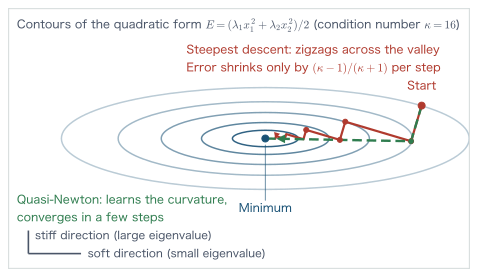
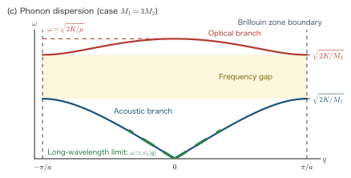
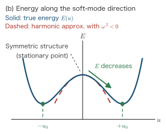

Chapter 16Forces and Stress, Structural Optimization, and First-Principles Molecular Dynamics
In the preceding chapters we assembled the tools needed to actually solve the Kohn–Sham equations—basis functions, sampling of the Brillouin zone (Chapter 12), and pseudopotentials (Chapter 15). That is, given a configuration of the nuclei $\{\bm{R}_I\}$, we can now compute the total energy $E(\{\bm{R}_I\})$. In real problems, however, the atomic configuration itself is often unknown. What shape does a molecule take when it is stable? What is the lattice constant of a crystal? What path does a chemical reaction follow, and how many eV is the barrier? How do atoms move at finite temperature? All of these are questions that can be answered only once we can compute the “derivatives of the energy with respect to the atomic coordinates,” that is, the force and the stress.
In this chapter we first derive the Hellmann–Feynman theorem, which underlies the calculation of forces, and clarify the Pulay correction that arises from a finite basis. Next we define the stress tensor, the “lattice version” of the force, and then proceed to algorithms for structural optimization (the steepest-descent method, Newton's method, and the BFGS method), the NEB method for reaction path search, and first-principles molecular dynamics (Verlet integration, the Nosé–Hoover thermostat, and the Car–Parrinello method). It is in this chapter that the static theory of electronic structure is first connected to “moving” applications. In the next chapter we treat quantum transport, in which the electrons themselves are driven out of equilibrium.
- The concept of the potential energy surface (PES), and the physical meaning of minima and saddle points
- A complete derivation of the Hellmann–Feynman theorem, and the Pulay force that appears with a finite basis
- The definition of the stress tensor as a strain derivative, and its consistency with the virial theorem
- Derivation and comparison of the steepest-descent method, Newton's method, and the BFGS method (a quasi-Newton method)
- Derivation of the harmonic approximation, the force-constant matrix, and the dynamical matrix; phonon dispersion and the criterion for dynamical stability
- Transition-state search by the NEB method: the idea of projecting the force
- Derivation of the Verlet method and Born–Oppenheimer molecular dynamics
- How the Nosé–Hoover thermostat generates the canonical distribution, and the extended Lagrangian of the Car–Parrinello method
- Overview of metadynamics and the QM/MM method
In this chapter, too, we use Hartree atomic units ($\hbar = m_e = e = 4\pi\varepsilon_0 = 1$, Chapter 1). The unit of energy is the hartree (1 hartree $= 27.211$ eV), and the unit of length is the bohr (1 bohr $= 0.5292$ Å). As derived units newly appearing in this chapter, force is measured in hartree/bohr (1 hartree/bohr $= 51.42$ eV/Å), stress and pressure in hartree/bohr$^3$ (1 hartree/bohr$^3$ $= 2.942\times 10^4$ GPa), and time in the atomic unit of time (1 a.u. $= \hbar/E_{\mathrm{h}} = 2.419\times 10^{-2}$ fs; that is, 1 fs $\simeq 41.34$ a.u.).
16.1 The Potential Energy Surface (PES)
Throughout this book we have assumed the Born–Oppenheimer approximation. If we fix the nuclear configuration $\{\bm{R}_I\}$ ($I = 1,\dots,M$) and solve for the ground state of the electron system, we obtain the total energy
$$ E(\bm{R}_1, \bm{R}_2, \dots, \bm{R}_M) = E_{\mathrm{elec}}(\{\bm{R}_I\}) + \sum_{I \lt J} \frac{Z_I Z_J}{\abs{\bm{R}_I - \bm{R}_J}} \label{eq:16-pes-def} $$Here $E_{\mathrm{elec}}$ is the ground-state energy of the electron system, the second term is the classical Coulomb repulsion between the nuclei, and $Z_I$ is the charge of nucleus $I$. Equation \eqref{eq:16-pes-def} is a single function of $3M$ coordinate variables; that is, it defines a “surface” spread over a $3M$-dimensional space. This is called the potential energy surface (PES). From the point of view of the nuclei, $E(\{\bm{R}_I\})$ is precisely the potential energy that the nuclei feel, and all the methods treated in this chapter—structural optimization, transition-state search, and molecular dynamics—are variations on a single question: “how do we walk on this surface?”
What matters most in the geometry of the PES are the gradient (first derivative) and the Hessian (second derivative). First, the gradient with its sign reversed is the force acting on nucleus $I$:
$$ \bm{F}_I = -\frac{\partial E}{\partial \bm{R}_I}. \label{eq:16-force-def} $$Next, a point at which the gradient vanishes (a point at which $\bm{F}_I = \bm{0}$ holds for all $I$) is called a stationary point. The nature of a stationary point can be classified by the eigenvalues of the $3M \times 3M$ symmetric matrix of second derivatives
$$ H_{I\alpha, J\beta} = \frac{\partial^2 E}{\partial R_{I\alpha}\, \partial R_{J\beta}} \qquad (\alpha, \beta = x, y, z) \label{eq:16-hessian-def} $$—the Hessian matrix (excluding the zero eigenvalues corresponding to translations and rotations).
- A stationary point at which all eigenvalues are positive is a local minimum. Because the energy rises whichever direction we move in, this corresponds to a stable structure (or a metastable structure) of a molecule or crystal. The deepest minimum is the most stable structure, and the others are metastable structures.
- A stationary point with exactly one negative eigenvalue is a first-order saddle point. It is a pass at which the energy descends in only one direction, and it corresponds to the transition state of a chemical reaction. The height of the pass (the energy difference from the minimum on the reactant side) is the activation energy.
- The “valley-floor path” that connects two minima and passes through a saddle point on the way is called the minimum energy path (MEP). The reaction coordinate is the distance traveled along this path (Section 16.5).
The high dimensionality of the PES calls for caution. For a system of 100 atoms, $3M = 300$ dimensions, and even if we sample only 10 points per dimension, that is $10^{300}$ points—“mapping” the entire surface is hopelessly impossible. This is exactly why the algorithms that reach minima and saddle points efficiently, relying only on local information (the value of $E$ at the point, the gradient $-\bm{F}$, and, if possible, the Hessian), are the protagonists of this chapter. And the essential premise for them is that “the gradient itself can be extracted accurately and cheaply from the electronic-structure calculation.” In the next section we prove the theorem that guarantees this.
Physical Meaning: The three derivative quantities output by a first-principles calculation
When a configuration $\{\bm{R}_I\}$ is given as input, a calculation based on density functional theory outputs (i) the total energy $E$, (ii) the force on each atom $\bm{F}_I = -\partial E/\partial \bm{R}_I$, and (iii) the stress tensor $\sigma_{\alpha\beta}$ acting on the unit cell (Section 16.3). With this triple we can predict, without experimental parameters, the equilibrium structures of molecules, the lattice constants and elastic constants of crystals, the stability of surface adsorption sites, reaction paths and activation energies, and even finite-temperature dynamics. This chapter is the chapter on “how to use these derivative quantities.”
16.2 The Hellmann–Feynman Theorem
The most naive way to compute the force $\bm{F}_I = -\partial E / \partial \bm{R}_I$ is to move an atom slightly, compute the total energy twice, and approximate the derivative by a difference. With this method, however, obtaining the $3M$ components of the force requires as many as $3M$ SCF calculations ($6M$ if central differences are used), and an error caused by the choice of the step size is unavoidable. The Hellmann–Feynman theorem that we are about to show guarantees that all components of the force can be computed analytically from the wave function (density) obtained in a single SCF calculation alone, and it is a cornerstone of structural optimization and molecular dynamics.
16.2.1 Statement and derivation of the theorem
We first state it in a general form. Suppose that a Hamiltonian $\hat{H}(\lambda)$ depends on some parameter $\lambda$ (which we will later identify with the nuclear coordinate $R_{I\alpha}$), and that its normalized eigenstate $\Psi(\lambda)$ and energy $E(\lambda)$ satisfy
$$ \hat{H}(\lambda)\, \Psi(\lambda) = E(\lambda)\, \Psi(\lambda), \qquad \braket{\Psi(\lambda) | \Psi(\lambda)} = 1 \label{eq:16-hf-setup} $$. The parameter $\lambda$ may be anything. In this chapter we take $\lambda$ to be a nuclear coordinate, whereas in Section 11.2.3 of Chapter 11 the same theorem was applied to the coupling constant $\lambda$ of the electron–electron interaction to derive the adiabatic connection formula $E_{xc}=\int_0^1\dd\lambda\braket{\Psi_\lambda|\hat V_{ee}|\Psi_\lambda}-E_{\mathrm{H}}$. The statement and proof below are identical to those used there (the Math Note of Chapter 11).
Theorem: The Hellmann–Feynman theorem
Under Eq. \eqref{eq:16-hf-setup}, the parameter derivative of the energy equals the expectation value of the explicit parameter derivative of the Hamiltonian:
$$ \frac{\dd E}{\dd \lambda} = \left\langle \Psi(\lambda) \,\middle|\, \frac{\partial \hat{H}}{\partial \lambda} \,\middle|\, \Psi(\lambda) \right\rangle \equiv \int \Psi^*(\lambda)\, \frac{\partial \hat{H}}{\partial \lambda}\, \Psi(\lambda)\, \dd\tau. \label{eq:16-hf-theorem} $$That is, the contribution from the change of the wave function with $\lambda$ vanishes exactly. Here $\dd\tau$ denotes integration over all electron coordinates (and spins).
Derivation: Proof that the wave-function-derivative terms vanish
The energy can be written as an expectation value:
$$ E(\lambda) = \int \Psi^*(\lambda)\, \hat{H}(\lambda)\, \Psi(\lambda)\, \dd\tau. \label{eq:16-hf-e} $$We differentiate this with respect to $\lambda$. The integrand is a product of the three factors $\Psi^*$, $\hat{H}$, and $\Psi$, so the product rule produces three terms (interchanging the order of integration and differentiation is permitted if the integrand is smooth in $\lambda$):
\begin{align} \frac{\dd E}{\dd \lambda} &= \int \frac{\partial \Psi^*}{\partial \lambda}\, \hat{H}\, \Psi\, \dd\tau + \int \Psi^*\, \frac{\partial \hat{H}}{\partial \lambda}\, \Psi\, \dd\tau + \int \Psi^*\, \hat{H}\, \frac{\partial \Psi}{\partial \lambda}\, \dd\tau. \label{eq:16-hf-3terms} \end{align}We deal with the first and third terms (the terms due to the change of the wave function). In the first term, we simply substitute the fact that $\Psi$ is an eigenstate, $\hat{H}\Psi = E\Psi$:
\begin{align} \int \frac{\partial \Psi^*}{\partial \lambda}\, \hat{H}\, \Psi\, \dd\tau = E \int \frac{\partial \Psi^*}{\partial \lambda}\, \Psi\, \dd\tau. \label{eq:16-hf-term1} \end{align}In the third term, we use the fact that $\hat{H}$ is Hermitian. Hermiticity means that $\int f^* \hat{H} g\, \dd\tau = \int (\hat{H} f)^* g\, \dd\tau$ holds for arbitrary functions $f, g$ (that decay sufficiently fast at the boundary), so choosing $f = \Psi$ and $g = \partial\Psi/\partial\lambda$ we obtain
\begin{align} \int \Psi^*\, \hat{H}\, \frac{\partial \Psi}{\partial \lambda}\, \dd\tau = \int (\hat{H}\Psi)^*\, \frac{\partial \Psi}{\partial \lambda}\, \dd\tau = E \int \Psi^*\, \frac{\partial \Psi}{\partial \lambda}\, \dd\tau. \label{eq:16-hf-term3} \end{align}In the last equality we used $\hat{H}\Psi = E\Psi$ and the fact that $E$ is real ($E^* = E$; an eigenvalue of a Hermitian operator). Adding Eqs. \eqref{eq:16-hf-term1} and \eqref{eq:16-hf-term3} and factoring out the common factor $E$, we get
\begin{align} E \int \left( \frac{\partial \Psi^*}{\partial \lambda}\, \Psi + \Psi^*\, \frac{\partial \Psi}{\partial \lambda} \right) \dd\tau = E\, \frac{\dd}{\dd \lambda} \int \Psi^* \Psi\, \dd\tau = E\, \frac{\dd}{\dd \lambda} (1) = 0. \label{eq:16-hf-cancel} \end{align}The first equality uses the product rule in reverse, and the second equality follows from the fact that the normalization condition $\int \Psi^*\Psi\, \dd\tau = 1$ holds for all $\lambda$ (so that it is a constant function). The derivative of a constant is zero. Therefore only the second term remains in Eq. \eqref{eq:16-hf-3terms}, and the theorem \eqref{eq:16-hf-theorem} is proved.
Restating the result in words: the wave function deforms as $\lambda$ changes, but this deformation does not contribute to the first derivative of the energy. This is a direct consequence of the variational principle. Since an eigenstate is a stationary point of the energy functional, the energy does not change to first order for a small change of the wave function in any direction (keeping it normalized). The change of the wave function caused by the change of $\lambda$ is merely “one of those directions.”
16.2.2 The force is an electrostatic force
Next we identify $\lambda$ with the coordinate $\bm{R}_I$ of nucleus $I$ and derive the explicit form of the force. The Hamiltonian of the $N$-electron system (Chapter 1) is
$$ \hat{H} = \underbrace{-\frac{1}{2}\sum_{k=1}^{N} \nabla_k^2}_{\hat{T}_e} + \underbrace{\frac{1}{2}\sum_{k \neq l} \frac{1}{\abs{\rr_k - \rr_l}}}_{\hat{V}_{ee}} + \underbrace{\sum_{k=1}^{N} v_{\mathrm{ext}}(\rr_k)}_{\hat{V}_{\mathrm{ext}}} + \underbrace{\sum_{I \lt J} \frac{Z_I Z_J}{\abs{\bm{R}_I - \bm{R}_J}}}_{E_{nn}}, \qquad v_{\mathrm{ext}}(\rr) = -\sum_{I} \frac{Z_I}{\abs{\rr - \bm{R}_I}} \label{eq:16-full-h} $$. Note that only two terms, $\hat{V}_{\mathrm{ext}}$ and $E_{nn}$, depend on $\bm{R}_I$. The electron kinetic energy $\hat{T}_e$ and the electron–electron repulsion $\hat{V}_{ee}$ are operators of the electron coordinates only, so they vanish upon differentiation with respect to $\bm{R}_I$. Therefore
$$ \frac{\partial \hat{H}}{\partial \bm{R}_I} = \sum_{k=1}^{N} \frac{\partial v_{\mathrm{ext}}(\rr_k)}{\partial \bm{R}_I} + \frac{\partial E_{nn}}{\partial \bm{R}_I}. \label{eq:16-dh-dr} $$Let us carry out the derivatives needed here one at a time. Taking $\bm{a}$ to be a vector variable, we compute the derivative of $1/\abs{\rr - \bm{a}}$ with respect to $\bm{a}$. Written in components, $\abs{\rr - \bm{a}} = [(x-a_x)^2 + (y-a_y)^2 + (z-a_z)^2]^{1/2}$, so by the chain rule the $a_x$ component of the derivative is
\begin{align} \frac{\partial}{\partial a_x} \frac{1}{\abs{\rr - \bm{a}}} &= -\frac{1}{2} \left[ (x-a_x)^2 + (y-a_y)^2 + (z-a_z)^2 \right]^{-3/2} \times \left\{ 2 (x - a_x) \cdot (-1) \right\} = \frac{x - a_x}{\abs{\rr - \bm{a}}^3}. \label{eq:16-coulomb-grad-x} \end{align}The first equality is the derivative of the outer function of type $u^{-1/2}$ ($-\tfrac{1}{2}u^{-3/2}$) multiplied by the $a_x$ derivative of the inner function $u = \abs{\rr-\bm{a}}^2$; the inner derivative of $(x-a_x)^2$ yields the factor $-2(x-a_x)$. The $y, z$ components are similar, so combining them into a vector gives
$$ \frac{\partial}{\partial \bm{a}} \frac{1}{\abs{\rr - \bm{a}}} = \frac{\rr - \bm{a}}{\abs{\rr - \bm{a}}^3}. \label{eq:16-coulomb-grad} $$We also recall one more relation, the rewriting of the expectation value of a many-body wave function in terms of the density (Chapter 4). The expectation value of a one-body operator $\sum_k f(\rr_k)$ has $N$ terms that are all equal, because $\abs{\Psi}^2$ is symmetric under exchange of electrons (the squared absolute value of an antisymmetric wave function), so that
\begin{align} \left\langle \Psi \,\middle|\, \sum_{k=1}^{N} f(\rr_k) \,\middle|\, \Psi \right\rangle = N \int f(\rr_1) \abs{\Psi(\rr_1, \dots, \rr_N)}^2 \dd\rr_1 \cdots \dd\rr_N = \int f(\rr)\, n(\rr)\, \dd^3 r \label{eq:16-onebody} \end{align}. In the last equality we used the definition of the electron density, $n(\rr) = N \int \abs{\Psi(\rr, \rr_2, \dots, \rr_N)}^2 \dd\rr_2 \cdots \dd\rr_N$.
We substitute Eq. \eqref{eq:16-dh-dr} into Eq. \eqref{eq:16-hf-theorem} and evaluate each term using Eqs. \eqref{eq:16-coulomb-grad} and \eqref{eq:16-onebody}. First the external-potential term: the only part of $v_{\mathrm{ext}}$ that contains $\bm{R}_I$ is $-Z_I/\abs{\rr - \bm{R}_I}$, so
\begin{align} \left\langle \Psi \,\middle|\, \sum_k \frac{\partial v_{\mathrm{ext}}(\rr_k)}{\partial \bm{R}_I} \,\middle|\, \Psi \right\rangle = \int n(\rr)\, \frac{\partial}{\partial \bm{R}_I}\left( -\frac{Z_I}{\abs{\rr - \bm{R}_I}} \right) \dd^3 r = -Z_I \int n(\rr)\, \frac{\rr - \bm{R}_I}{\abs{\rr - \bm{R}_I}^3}\, \dd^3 r. \label{eq:16-force-elec-term} \end{align}Next the internuclear repulsion term: only the pairs in the sum that contain $\bm{R}_I$ survive, and by Eq. \eqref{eq:16-coulomb-grad} (now with $\rr \to \bm{R}_J$ and $\bm{a} \to \bm{R}_I$),
\begin{align} \frac{\partial E_{nn}}{\partial \bm{R}_I} = \sum_{J \neq I} Z_I Z_J\, \frac{\partial}{\partial \bm{R}_I} \frac{1}{\abs{\bm{R}_I - \bm{R}_J}} = -\sum_{J \neq I} Z_I Z_J\, \frac{\bm{R}_I - \bm{R}_J}{\abs{\bm{R}_I - \bm{R}_J}^3}. \label{eq:16-force-nn-term} \end{align}Note the sign here: Eq. \eqref{eq:16-coulomb-grad} was a derivative with respect to the “second argument of the denominator,” so differentiating $\abs{\bm{R}_I - \bm{R}_J}^{-1}$ with respect to $\bm{R}_I$ (the first argument) reverses the sign. The force $\bm{F}_I = -\partial E/\partial \bm{R}_I$ is obtained by reversing the signs of the two terms above:
This is the Hellmann–Feynman force. Look carefully at what we have obtained. The first term is “the classical electrostatic attraction by which an electron cloud of charge density $-n(\rr)$ pulls on a point charge $+Z_I$,” and the second term is “the classical electrostatic repulsion from the other nuclei.” That is:
Physical Meaning: The electrostatic theorem
Once the ground-state electron density $n(\rr)$ is known exactly, the force acting on a nucleus can be computed purely by classical electrostatics. The role of quantum mechanics (all of the kinetic energy, exchange, and correlation) is exhausted in determining the shape of the density, and it does not appear in the expression for the force itself. This view was emphasized by Feynman in his 1939 paper, and the result is also called the electrostatic theorem. The intuitive picture of chemical bonding, in which “density accumulates between the nuclei and its negative charge pulls the nuclei on both sides inward,” is quantitatively justified by this theorem.
16.2.3 Conditions under which the theorem holds
Looking back at the derivation, we used only the following two assumptions: (i) $\Psi$ is an exact eigenstate of $\hat{H}$ (used in Eqs. \eqref{eq:16-hf-term1} and \eqref{eq:16-hf-term3}), and (ii) the normalization is preserved independently of $\lambda$ (used in Eq. \eqref{eq:16-hf-cancel}). In actual numerical calculations (i) is violated—because the wave function can be optimized only within the space spanned by a finite number of basis functions. Even if the state is not an exact eigenstate, however, if the energy is stationary with respect to all of the available variational parameters, the terms arising from the parameter derivatives vanish by the same argument. The problem is the case where the variational space itself depends on $\lambda$ (the positions of the nuclei). This is the subject of the next subsection, the Pulay force.
Math Note: The overlap matrix and the generalized eigenvalue problem
When a wave function is expanded as $\psi = \sum_\mu c_\mu \phi_\mu$ in basis functions $\{\phi_\mu\}_{\mu=1}^{n}$ that are not orthogonal to one another, the inner product can be written, using the overlap matrix $S_{\mu\nu} = \int \phi_\mu^* \phi_\nu\, \dd^3 r$, as $\braket{\psi|\psi} = \sum_{\mu\nu} c_\mu^* S_{\mu\nu} c_\nu = \bm{c}^\dagger S \bm{c}$ (for plane waves $S_{\mu\nu} = \delta_{\mu\nu}$, but for localized bases centered on atoms in general $S \neq I$). Letting the Hamiltonian matrix be $H_{\mu\nu} = \int \phi_\mu^* \hat{H} \phi_\nu\, \dd^3 r$, the condition for minimizing $\bm{c}^\dagger H \bm{c}$ under the constraint $\bm{c}^\dagger S \bm{c} = 1$ is, introducing a Lagrange multiplier $\varepsilon$, $\partial/\partial c_\mu^* \left[ \bm{c}^\dagger H \bm{c} - \varepsilon (\bm{c}^\dagger S \bm{c} - 1) \right] = 0$, that is,
$$ \sum_\nu H_{\mu\nu} c_\nu = \varepsilon \sum_\nu S_{\mu\nu} c_\nu \qquad \Longleftrightarrow \qquad H \bm{c} = \varepsilon S \bm{c} \label{eq:16-gep} $$. This is called the generalized eigenvalue problem. Treating $c_\mu$ and $c_\mu^*$ as independent variables is equivalent to varying the real and imaginary parts independently (the same procedure as the variational calculation in Chapter 4). The undetermined multiplier $\varepsilon$ has the meaning of an orbital energy.
16.2.4 The Pulay force: A correction when the basis functions move with the atoms
When atom-centered basis functions are used (the localized basis (LCPAO) of Chapter 14, or the Gauss basis of quantum chemistry), the basis functions themselves depend on the nuclear coordinates in the form $\phi_\mu(\rr - \bm{R}_{I_\mu})$. When an atom moves, the “measuring stick” moves with it. In this case the Hellmann–Feynman force alone does not give the derivative of the total energy. We now derive explicitly the missing part—the Pulay force (Pulay, 1969).
For clarity, let us first consider the problem in which “the expectation value of a given Hermitian operator $\hat{H}$ has been minimized variationally within a finite basis.” Consider the energy of a single normalized orbital $\psi = \sum_\mu c_\mu \phi_\mu$,
$$ \varepsilon(R) = \sum_{\mu\nu} c_\mu^* H_{\mu\nu}(R)\, c_\nu, \qquad \sum_{\mu\nu} c_\mu^* S_{\mu\nu}(R)\, c_\nu = 1 \label{eq:16-pulay-setup} $$. Here $R$ is one component of some nuclear coordinate, and the matrix elements $H_{\mu\nu}, S_{\mu\nu}$ depend on $R$ through two routes: through the potential in $\hat{H}$ (explicit dependence), and through the basis functions $\phi_\mu(\rr; R)$ (basis dependence). Suppose that the coefficients $\bm{c}$ are determined at each $R$ so as to satisfy the variational condition \eqref{eq:16-gep}.
Derivation: Energy derivative in a finite basis and the Pulay term
Step 1: Write down the total derivative. Differentiate Eq. \eqref{eq:16-pulay-setup} with respect to $R$. The dependence enters in three places, $c_\mu^*$, $c_\nu$, and $H_{\mu\nu}$, so the product rule gives
\begin{align} \frac{\dd \varepsilon}{\dd R} = \sum_{\mu\nu} \frac{\dd c_\mu^*}{\dd R} H_{\mu\nu} c_\nu + \sum_{\mu\nu} c_\mu^* H_{\mu\nu} \frac{\dd c_\nu}{\dd R} + \sum_{\mu\nu} c_\mu^* \frac{\dd H_{\mu\nu}}{\dd R} c_\nu. \label{eq:16-pulay-total} \end{align}Step 2: Rewrite the coefficient-derivative terms using the variational condition. Into the first term we substitute the generalized eigenvalue equation $\sum_\nu H_{\mu\nu} c_\nu = \varepsilon \sum_\nu S_{\mu\nu} c_\nu$ (Eq. \eqref{eq:16-gep}), and into the second term its Hermitian conjugate $\sum_\mu c_\mu^* H_{\mu\nu} = \varepsilon \sum_\mu c_\mu^* S_{\mu\nu}$ ($H, S$ are Hermitian, and $\varepsilon$ is real):
\begin{align} \text{(first term)} + \text{(second term)} = \varepsilon \left[ \sum_{\mu\nu} \frac{\dd c_\mu^*}{\dd R} S_{\mu\nu} c_\nu + \sum_{\mu\nu} c_\mu^* S_{\mu\nu} \frac{\dd c_\nu}{\dd R} \right]. \label{eq:16-pulay-step2} \end{align}Step 3: Use the derivative of the normalization condition. The constraint $\bm{c}^\dagger S \bm{c} = 1$ holds for all $R$, so its total derivative is zero. Expanding it into three terms with the product rule gives
\begin{align} 0 = \frac{\dd}{\dd R}\left( \bm{c}^\dagger S \bm{c} \right) = \sum_{\mu\nu} \frac{\dd c_\mu^*}{\dd R} S_{\mu\nu} c_\nu + \sum_{\mu\nu} c_\mu^* S_{\mu\nu} \frac{\dd c_\nu}{\dd R} + \sum_{\mu\nu} c_\mu^* \frac{\partial S_{\mu\nu}}{\partial R} c_\nu. \label{eq:16-pulay-norm} \end{align}That is, the square brackets in Eq. \eqref{eq:16-pulay-step2} equal $-\sum_{\mu\nu} c_\mu^* (\partial S_{\mu\nu}/\partial R) c_\nu$. Hence
\begin{align} \text{(first term)} + \text{(second term)} = -\varepsilon \sum_{\mu\nu} c_\mu^* \frac{\partial S_{\mu\nu}}{\partial R} c_\nu. \label{eq:16-pulay-step3} \end{align}Note that there is no longer any need to compute the coefficient derivatives $\dd c/\dd R$ themselves. This is the finite-basis version of the proof of the Hellmann–Feynman theorem (Eq. \eqref{eq:16-hf-cancel}). This time, however, the result is not zero: the derivative of the overlap matrix remains.
Step 4: Expand the derivatives of the matrix elements. Since $H_{\mu\nu} = \int \phi_\mu^* \hat{H} \phi_\nu\, \dd^3 r$ contains the three factors $\phi_\mu^*$, $\hat{H}$, and $\phi_\nu$,
\begin{align} \frac{\dd H_{\mu\nu}}{\dd R} = \int \frac{\partial \phi_\mu^*}{\partial R} \hat{H} \phi_\nu\, \dd^3 r + \int \phi_\mu^* \frac{\partial \hat{H}}{\partial R} \phi_\nu\, \dd^3 r + \int \phi_\mu^* \hat{H} \frac{\partial \phi_\nu}{\partial R}\, \dd^3 r, \label{eq:16-pulay-dh} \\[2pt] \frac{\partial S_{\mu\nu}}{\partial R} = \int \frac{\partial \phi_\mu^*}{\partial R} \phi_\nu\, \dd^3 r + \int \phi_\mu^* \frac{\partial \phi_\nu}{\partial R}\, \dd^3 r. \label{eq:16-pulay-ds} \end{align}Step 5: Collect everything and simplify. Substitute Eqs. \eqref{eq:16-pulay-step3}, \eqref{eq:16-pulay-dh}, and \eqref{eq:16-pulay-ds} into Eq. \eqref{eq:16-pulay-total}, and pair the $\varepsilon \partial S/\partial R$ terms with the basis-derivative terms of $\dd H/\dd R$:
\begin{align} \frac{\dd \varepsilon}{\dd R} &= \sum_{\mu\nu} c_\mu^* \left[ \int \phi_\mu^* \frac{\partial \hat{H}}{\partial R} \phi_\nu\, \dd^3 r \right] c_\nu \nonumber\\ &\quad + \sum_{\mu\nu} c_\mu^* c_\nu \int \frac{\partial \phi_\mu^*}{\partial R} \left( \hat{H} - \varepsilon \right) \phi_\nu\, \dd^3 r + \sum_{\mu\nu} c_\mu^* c_\nu \int \phi_\mu^* \left( \hat{H} - \varepsilon \right) \frac{\partial \phi_\nu}{\partial R}\, \dd^3 r. \label{eq:16-pulay-combined} \end{align}Here we group $\sum_\nu c_\nu \phi_\nu = \psi$ and $\sum_\mu c_\mu^* \phi_\mu^* = \psi^*$. Using in addition the fact that the third term is the complex conjugate of the second (by the Hermiticity of $\hat{H} - \varepsilon$, $\int \phi_\mu^* (\hat{H}-\varepsilon) \partial_R \phi_\nu\, \dd^3 r = [\int \partial_R \phi_\nu^* (\hat{H}-\varepsilon) \phi_\mu\, \dd^3 r]^*$), we obtain the final form:
\begin{align} \frac{\dd \varepsilon}{\dd R} = \underbrace{\left\langle \psi \,\middle|\, \frac{\partial \hat{H}}{\partial R} \,\middle|\, \psi \right\rangle}_{\text{Hellmann–Feynman term}} + \underbrace{2\, \mathrm{Re} \sum_{\mu} c_\mu^* \left\langle \frac{\partial \phi_\mu}{\partial R} \,\middle|\, \hat{H} - \varepsilon \,\middle|\, \psi \right\rangle}_{\text{Pulay term}}. \label{eq:16-pulay-final} \end{align}Let us examine the result, Eq. \eqref{eq:16-pulay-final}. The Pulay term vanishes in either of the following cases.
- When the basis does not depend on $R$: $\partial \phi_\mu / \partial R = 0$. The plane-wave basis is exactly this case: a plane wave $e^{i\bm{G}\cdot\rr}$ knows nothing about the positions of the atoms. With a plane-wave basis the Pulay force is zero, and the Hellmann–Feynman force (together with the explicit derivative of the pseudopotential term) alone gives the exact force. This is a major practical advantage of the plane-wave method.
- When the basis is complete: $\psi$ becomes an exact eigenstate, so that $(\hat{H} - \varepsilon)\ket{\psi} = 0$, and hence the inner product with any bra vector vanishes.
For a finite atom-centered basis neither holds. What the variational condition \eqref{eq:16-gep} guarantees is only that the residual vector $(\hat{H} - \varepsilon)|\psi\rangle$ is orthogonal to the space spanned by the basis. However, $\partial \phi_\mu/\partial R$ in general sticks out outside the space spanned by the basis, so the inner product \eqref{eq:16-pulay-final} does not vanish. The motion of the “measuring stick” leaks into the energy derivative; this is the true nature of the Pulay force. The Pulay term also vanishes in the special case where $|\partial \phi_\mu/\partial R\rangle$ happens to lie within the basis space (not only for a complete basis), but in practice it is fine to remember the rule “always include the Pulay correction for an atom-centered basis.”
The generalization to many-electron systems is formally simple: it suffices to repeat the same calculation for each occupied orbital $\psi_i$ ($i = 1, \dots, N_{\mathrm{occ}}$, with occupation numbers $f_i$). The Kohn–Sham total energy is not a simple sum of band energies (there is a double-counting correction; Chapter 10, Section 10.4), so an exact expression must also make use of the variational stationarity with respect to the density, but the structure of the result is the same, and the force takes the form
of “Hellmann–Feynman force plus Pulay correction.” Here $\mu \in I$ means that only the basis functions centered on atom $I$ enter the sum ($\partial \phi_\mu/\partial \bm{R}_I$ is nonzero only when $\phi_\mu$ sits on atom $I$). First-principles codes that use localized bases implement the $\bm{R}_I$ derivatives of each term making up the total energy (kinetic energy, local and nonlocal pseudopotentials, Hartree, exchange-correlation, and ion–ion repulsion) analytically in this form, and they are designed so that, even when integrals on a numerical grid are used, the force obtained is exactly consistent with the discretized total energy.
Example: What happens if the Pulay correction is forgotten
If a structural optimization is carried out in a localized-basis calculation using only the Hellmann–Feynman term, the forces and the energy are inconsistent, and pathological behavior appears: “the forces are zero but the energy still decreases,” and “the energy minimum and the zero-force structure disagree.” For a typical atom-centered basis, the Pulay term can be of the same order as the Hellmann–Feynman term (on the scale of a bond length, $10^{-2}$–$10^{-1}$ hartree/bohr), so it is by no means a small correction that can be ignored. In molecular dynamics, a systematic error in the forces appears as a drift of the total energy, so an accurate implementation of the Pulay term is a matter of life and death.
16.3 The Stress Tensor: The “Lattice Version” of the Force
For a molecule, the force \eqref{eq:16-hf-force} (and \eqref{eq:16-pulay-force}) alone is enough to determine the structure. In a periodic system (a crystal), however, in addition to the internal coordinates of the atoms, the shape and size of the unit cell—the nine components of the lattice vectors $\bm{a}_1, \bm{a}_2, \bm{a}_3$—are also degrees of freedom of the structure. The quantity that corresponds to a “force” on the lattice is the stress tensor, and only with it can we optimize the lattice constant or calculate elastic constants. In this section we define the stress as “the first derivative of the energy with respect to a uniform strain,” actually compute the strain derivatives of the kinetic energy and the Coulomb energy, and confirm that they connect exactly with the virial theorem of Chapter 2.
16.3.1 Uniform strain and the definition of the stress
Definition: The strain tensor and the stress tensor
All position vectors of the system (lattice vectors and atomic coordinates) are transformed linearly and simultaneously by a symmetric $3\times 3$ matrix $\varepsilon_{\alpha\beta}$ (the strain tensor):
$$ \rr \;\longrightarrow\; \rr' = (\bm{1} + \bm{\varepsilon})\, \rr, \qquad r'_\alpha = r_\alpha + \sum_\beta \varepsilon_{\alpha\beta}\, r_\beta. \label{eq:16-strain-def} $$The diagonal components such as $\varepsilon_{xx}$ represent elongation (positive) or contraction (negative) in the $x$ direction, and the off-diagonal components such as $\varepsilon_{xy}$ represent shear deformation. Writing the total energy of the system under this strain as $E(\bm{\varepsilon})$, we define the stress tensor by
$$ \sigma_{\alpha\beta} = \frac{1}{\Omega} \left. \frac{\partial E}{\partial \varepsilon_{\alpha\beta}} \right|_{\bm{\varepsilon} = 0} \label{eq:16-stress-def} $$Here $\Omega$ is the volume of the unit cell (the stress is “the energy derivative per unit volume” and has the same dimension as pressure). The sign convention is reversed in some codes and textbooks, so be sure to check it when reading actual calculation results.
First, let us use the definition \eqref{eq:16-stress-def} to check the relation to the pressure. Applying an isotropic infinitesimal strain $\varepsilon_{\alpha\beta} = \eta\, \delta_{\alpha\beta}$, the volume changes as $\Omega \to \Omega \det(\bm{1} + \bm{\varepsilon})$.
Math Note: First-order expansion of $\det(\bm{1} + \bm{\varepsilon})$
If we expand the $3 \times 3$ determinant straight from the definition, an off-diagonal element $\varepsilon_{\alpha\beta}$ ($\alpha \neq \beta$) always appears only in products of two or more (each term of a determinant takes one element from each row and each column, so using one off-diagonal element forces us to use another off-diagonal element as well). Hence, up to first order in $\bm{\varepsilon}$, only the diagonal product contributes, and
$$ \det(\bm{1} + \bm{\varepsilon}) = (1 + \varepsilon_{xx})(1 + \varepsilon_{yy})(1 + \varepsilon_{zz}) + O(\varepsilon^2) = 1 + \mathrm{Tr}\, \bm{\varepsilon} + O(\varepsilon^2). \label{eq:16-det-expand} $$Therefore $\partial \det(\bm{1}+\bm{\varepsilon}) / \partial \varepsilon_{\alpha\beta} |_{\varepsilon=0} = \delta_{\alpha\beta}$, and for the volume, $\partial \Omega(\bm{\varepsilon}) / \partial \varepsilon_{\alpha\beta}|_{\varepsilon=0} = \Omega\, \delta_{\alpha\beta}$. Similarly, the expansion of the inverse matrix, $(\bm{1} + \bm{\varepsilon})^{-1} = \bm{1} - \bm{\varepsilon} + \bm{\varepsilon}^2 - \cdots$, can also be verified by multiplying both sides by $(\bm{1}+\bm{\varepsilon})$ (the matrix version of the geometric series). Below, we use both only up to first order.
Under isotropic strain, $E$ changes only as a function of the volume, so by the chain rule
\begin{align} \sum_\alpha \frac{\partial E}{\partial \varepsilon_{\alpha\alpha}} = \sum_\alpha \frac{\dd E}{\dd \Omega} \frac{\partial \Omega}{\partial \varepsilon_{\alpha\alpha}} = \frac{\dd E}{\dd \Omega} \cdot 3\Omega \qquad \Longrightarrow \qquad P = -\frac{\dd E}{\dd \Omega} = -\frac{1}{3} \sum_\alpha \sigma_{\alpha\alpha}. \label{eq:16-pressure} \end{align}That is, the pressure is $-1/3$ times the trace of the stress tensor. The lattice constant at which the trace of the stress vanishes is precisely the equilibrium lattice constant at zero external pressure.
16.3.2 Scaling of the wave function and the variational principle
To calculate the stress we need the derivative of $E(\bm{\varepsilon})$, but there is one conceptual problem here. Applying a strain changes the unit cell itself (the domain of the wave function and its boundary conditions), so we cannot directly use the Hellmann–Feynman theorem in the form “differentiate only the Hamiltonian while keeping the same wave function.” This problem is solved by applying a scaling transformation to the wave function and pulling it back to the original domain. We transform each orbital (or each electron coordinate of the many-body wave function) as
$$ \psi_{\bm{\varepsilon}}(\rr) = \left[ \det(\bm{1} + \bm{\varepsilon}) \right]^{-1/2} \psi\!\left( (\bm{1} + \bm{\varepsilon})^{-1} \rr \right) \label{eq:16-scaled-wf} $$The prefactor is there to preserve the normalization. Indeed, if we substitute $\bm{u} = (\bm{1}+\bm{\varepsilon})^{-1} \rr$, the volume element becomes $\dd^3 r = \det(\bm{1}+\bm{\varepsilon})\, \dd^3 u$ (the Jacobian of a linear transformation), so
\begin{align} \int \abs{\psi_{\bm{\varepsilon}}(\rr)}^2 \dd^3 r = \frac{1}{\det(\bm{1}+\bm{\varepsilon})} \int \abs{\psi(\bm{u})}^2 \det(\bm{1}+\bm{\varepsilon})\, \dd^3 u = \int \abs{\psi(\bm{u})}^2 \dd^3 u = 1 \label{eq:16-scaled-norm} \end{align}and the normalization (and the orthogonality between orbitals) is preserved for any $\bm{\varepsilon}$. As for the periodic boundary conditions of the strained lattice, if $\psi$ satisfies the boundary conditions of the original lattice, then $\psi_{\bm{\varepsilon}}$ automatically satisfies them.
Here the variational principle comes into play. The true ground state of the strained system is not $\psi_{\bm{\varepsilon}}$ itself. However, $\psi_{\bm{\varepsilon}}$ is “a family of trial functions that satisfy the orthonormality conditions and pass through the true ground state at $\bm{\varepsilon} = 0$.” Of the $\bm{\varepsilon}$ derivative of the energy, the contribution from “the wave function relaxing away from the family” vanishes to first order, because the ground state is a stationary point of the energy (the same logic as in the discussion of Section 16.2). Therefore, the first derivative giving the stress is correctly obtained by differentiating with respect to $\bm{\varepsilon}$ the expectation value $E(\bm{\varepsilon}) = \langle \Psi_{\bm{\varepsilon}} | \hat{H}(\bm{\varepsilon}) | \Psi_{\bm{\varepsilon}} \rangle$ evaluated with the scaled wave function. Below, we carry this out for the kinetic energy and the Coulomb energy.
16.3.3 Strain derivative of the kinetic energy
We now calculate the strain derivative of the kinetic energy of a single orbital, $T(\bm{\varepsilon}) = \frac{1}{2} \int \abs{\nabla \psi_{\bm{\varepsilon}}}^2 \dd^3 r$ (the sum over all occupied orbitals can be taken at the end).
Derivation: The stress from the kinetic-energy term
Step 1: Expose the $\bm{\varepsilon}$ dependence by a change of variables. Abbreviate $\bm{A} \equiv (\bm{1}+\bm{\varepsilon})^{-1}$. If we substitute $\bm{u} = \bm{A}\rr$, then $u_\beta = \sum_\gamma A_{\beta\gamma} r_\gamma$, so $\partial u_\beta / \partial r_\alpha = A_{\beta\alpha}$, and by the chain rule
\begin{align} \frac{\partial}{\partial r_\alpha} \psi(\bm{A}\rr) = \sum_\beta \frac{\partial u_\beta}{\partial r_\alpha} \frac{\partial \psi}{\partial u_\beta} = \sum_\beta A_{\beta\alpha}\, \partial_\beta \psi(\bm{u}), \qquad \partial_\beta \equiv \frac{\partial}{\partial u_\beta}. \label{eq:16-kin-chain} \end{align}Substitute this into $T(\bm{\varepsilon})$. The square of the normalization factor, $\det^{-1}$, and the $\det$ of the volume element cancel each other ($\dd^3 r = \det(\bm{1}+\bm{\varepsilon})\, \dd^3 u$), giving
\begin{align} T(\bm{\varepsilon}) = \frac{1}{2} \sum_\alpha \int \left[ \sum_\beta A_{\beta\alpha}\, \partial_\beta \psi^*(\bm{u}) \right] \left[ \sum_\gamma A_{\gamma\alpha}\, \partial_\gamma \psi(\bm{u}) \right] \dd^3 u = \frac{1}{2} \sum_{\alpha\beta\gamma} A_{\beta\alpha} A_{\gamma\alpha} \int \partial_\beta \psi^*\, \partial_\gamma \psi\, \dd^3 u. \label{eq:16-kin-sub} \end{align}Note that the strain dependence has been pushed entirely into the matrix factor $A_{\beta\alpha} A_{\gamma\alpha}$ outside the integral. The integral itself does not contain $\bm{\varepsilon}$.
Step 2: Expand to first order. Substitute $\bm{A} = \bm{1} - \bm{\varepsilon} + O(\varepsilon^2)$ and keep terms up to first order in $\bm{\varepsilon}$:
\begin{align} A_{\beta\alpha} A_{\gamma\alpha} = (\delta_{\beta\alpha} - \varepsilon_{\beta\alpha})(\delta_{\gamma\alpha} - \varepsilon_{\gamma\alpha}) + O(\varepsilon^2) = \delta_{\beta\alpha}\delta_{\gamma\alpha} - \varepsilon_{\beta\alpha}\, \delta_{\gamma\alpha} - \varepsilon_{\gamma\alpha}\, \delta_{\beta\alpha} + O(\varepsilon^2). \label{eq:16-kin-expand} \end{align}The first term reproduces the kinetic energy without strain, $T(0)$. Putting the second and third terms back into Eq. \eqref{eq:16-kin-sub}, we obtain
\begin{align} T(\bm{\varepsilon}) = T(0) - \frac{1}{2} \sum_{\alpha\beta} \varepsilon_{\beta\alpha} \int \left( \partial_\beta \psi^*\, \partial_\alpha \psi + \partial_\alpha \psi^*\, \partial_\beta \psi \right) \dd^3 u + O(\varepsilon^2). \label{eq:16-kin-firstorder} \end{align}Here, in the second term we carried out the sum over $\gamma$ with the Kronecker delta, in the third term the sum over $\beta$, and then renamed the remaining indices.
Step 3: Read off the derivative. The coefficient of $\varepsilon_{\alpha\beta}$ is directly the first derivative:
\begin{align} \left. \frac{\partial T}{\partial \varepsilon_{\alpha\beta}} \right|_{\bm{\varepsilon}=0} = -\frac{1}{2} \int \left( \partial_\alpha \psi^*\, \partial_\beta \psi + \partial_\beta \psi^*\, \partial_\alpha \psi \right) \dd^3 r = -\,\mathrm{Re} \int \partial_\alpha \psi^*\, \partial_\beta \psi\, \dd^3 r. \label{eq:16-kin-stress} \end{align}Summing over the occupied orbitals, we obtain the contribution of the kinetic-energy term to the stress, $\Omega\, \sigma^{\mathrm{kin}}_{\alpha\beta} = -\sum_i f_i\, \mathrm{Re} \int \partial_\alpha \psi_i^*\, \partial_\beta \psi_i\, \dd^3 r$.
Taking the trace of the result \eqref{eq:16-kin-stress}, since $\sum_\alpha \partial_\alpha \psi^* \partial_\alpha \psi = \abs{\nabla\psi}^2$, we get
$$ \sum_\alpha \frac{\partial T}{\partial \varepsilon_{\alpha\alpha}} = -\int \abs{\nabla \psi}^2 \dd^3 r = -2\, T. \label{eq:16-kin-trace} $$This is a refinement of the scaling law “if the length is stretched by a factor $\lambda$, the kinetic energy becomes $\lambda^{-2}$ times as large” (the logarithmic derivative of $T \propto \lambda^{-2}$ is $-2$). Let us check the sign. Substituting into Eq. \eqref{eq:16-pressure}, we obtain $P^{\mathrm{kin}} = -\frac{1}{3\Omega}(-2T) = +2T/3\Omega \gt 0$; that is, the kinetic energy always contributes a positive pressure (in the direction that pushes the system outward). The quantum-mechanical “cost of confinement” becomes a pressure pushing outward—the same physics as the degeneracy pressure that supports a white dwarf (recall the kinetic-energy density of the Fermi sphere in Chapter 3).
16.3.4 Strain derivative of the Coulomb energy and the virial theorem
Next, we calculate the strain derivative of the Coulomb interaction (all of it: electron–electron, electron–nucleus, and nucleus–nucleus). Every term is a sum or an integral of “the reciprocal of the distance between two points,” so the core calculation is the $\bm{\varepsilon}$ derivative of $1/\abs{(\bm{1}+\bm{\varepsilon})\bm{u}}$.
Derivation: Stress from the Coulomb term
Step 1: Expand the squared distance. Take the expectation value in the wave function of Eq. \eqref{eq:16-scaled-wf} with scaled electron coordinates, and substitute $\rr_k = (\bm{1}+\bm{\varepsilon})\bm{u}_k$ for all electron coordinates (the nuclear coordinates are also scaled by $(\bm{1}+\bm{\varepsilon})$ from the outset). The Jacobian and the normalization factor cancel each other just as for the kinetic energy, and only the Coulomb kernel depends on $\bm{\varepsilon}$: for the relative vector $\bm{u}$ of any two particles, $\abs{\bm{u}} \to \abs{(\bm{1}+\bm{\varepsilon})\bm{u}}$. Written in components, its square is
\begin{align} \abs{(\bm{1}+\bm{\varepsilon})\bm{u}}^2 = \sum_\alpha \Bigl( u_\alpha + \sum_\beta \varepsilon_{\alpha\beta} u_\beta \Bigr)^2 = \abs{\bm{u}}^2 + 2 \sum_{\alpha\beta} \varepsilon_{\alpha\beta}\, u_\alpha u_\beta + O(\varepsilon^2). \label{eq:16-cou-dist2} \end{align}We expanded the square and kept terms through first order in $\bm{\varepsilon}$.
Step 2: Expand the reciprocal. Let $x \equiv \sum_{\alpha\beta} \varepsilon_{\alpha\beta} u_\alpha u_\beta / \abs{\bm{u}}^2$. Then Eq. \eqref{eq:16-cou-dist2} gives $\abs{(\bm{1}+\bm{\varepsilon})\bm{u}} = \abs{\bm{u}} (1 + 2x)^{1/2}$, and using the binomial expansion $(1+2x)^{-1/2} = 1 - x + O(x^2)$ we obtain
\begin{align} \frac{1}{\abs{(\bm{1}+\bm{\varepsilon})\bm{u}}} = \frac{1}{\abs{\bm{u}}} \left( 1 - \sum_{\alpha\beta} \varepsilon_{\alpha\beta} \frac{u_\alpha u_\beta}{\abs{\bm{u}}^2} \right) + O(\varepsilon^2) \qquad \Longrightarrow \qquad \left. \frac{\partial}{\partial \varepsilon_{\alpha\beta}} \frac{1}{\abs{(\bm{1}+\bm{\varepsilon})\bm{u}}} \right|_{\bm{\varepsilon}=0} = -\frac{u_\alpha u_\beta}{\abs{\bm{u}}^3}. \label{eq:16-cou-kernel} \end{align}Step 3: Apply it to the total Coulomb energy. The total Coulomb energy $E_{\mathrm{C}}$ (electron–electron repulsion $+$ electron–nucleus attraction $+$ internuclear repulsion) is the (signed) sum, and expectation value, of terms of the form $1/\abs{\bm{u}}$ with the relative vector $\bm{u}$ of a pair of charges, so it suffices to apply the derivative in Eq. \eqref{eq:16-cou-kernel} term by term. Collecting the terms formally, we have
\begin{align} \frac{\partial E_{\mathrm{C}}}{\partial \varepsilon_{\alpha\beta}} = -\left\langle \sum_{\text{pairs}\, (i,j)} q_i q_j\, \frac{u_\alpha u_\beta}{\abs{\bm{u}}^3} \right\rangle, \qquad \bm{u} = \bm{x}_i - \bm{x}_j \label{eq:16-cou-stress} \end{align}($q_i$ is $-1$ for an electron and $+Z_I$ for a nucleus; $\langle \cdot \rangle$ is the expectation value over the electron coordinates).
Step 4: Take the trace. Since $\sum_\alpha u_\alpha u_\alpha / \abs{\bm{u}}^3 = \abs{\bm{u}}^2/\abs{\bm{u}}^3 = 1/\abs{\bm{u}}$,
\begin{align} \sum_\alpha \frac{\partial E_{\mathrm{C}}}{\partial \varepsilon_{\alpha\alpha}} = -\left\langle \sum_{\text{pairs}} \frac{q_i q_j}{\abs{\bm{u}}} \right\rangle = -E_{\mathrm{C}}. \label{eq:16-cou-trace} \end{align}This expresses the statement that “the Coulomb energy scales as the $-1$st power of length” ($V \propto \lambda^{-1}$).
Combining the above, the strain trace of the total energy $E = T + E_{\mathrm{C}}$ (we again write $T$ for the total kinetic energy, including the sum over occupied orbitals) is
$$ \sum_\alpha \frac{\partial E}{\partial \varepsilon_{\alpha\alpha}} = -2T - E_{\mathrm{C}}. \label{eq:16-virial-trace} $$At the equilibrium structure of an isolated system (a molecule), the energy is stationary with respect to every deformation, and in particular with respect to the scaling deformation, so $\sum_\alpha \partial E/\partial \varepsilon_{\alpha\alpha} = 0$. That is,
$$ 2T = -E_{\mathrm{C}} \qquad (\text{at the equilibrium structure}) \label{eq:16-virial} $$—the virial theorem derived in Section 2.3 of Chapter 2 ($2T+U=0$ at $\bm{F}_n=\bm{0}$) has been rederived as the trace of the stress. The total Coulomb energy $E_{\mathrm{C}}$ of this chapter is exactly the potential energy $U$ of Chapter 2 ($U=E_{\mathrm{C}}$), and with this change of notation the two are the same equation. We see that the formulation of the stress tensor is an “anisotropic generalization” of the virial theorem. Furthermore, under an external pressure $P$, the stationarity condition of the enthalpy $E + P\Omega$ gives $\sum_\alpha [\partial E/\partial\varepsilon_{\alpha\alpha} + P\Omega\,\delta_{\alpha\alpha}] = 0$, that is, the virial theorem with pressure, $2T + E_{\mathrm{C}} = 3P\Omega$. This agrees exactly, under the replacements $U\to E_{\mathrm{C}}$, $p\to P$, $V\to\Omega$, with the virial theorem for bulk systems $2T+U=3pV$ derived from Gauss's theorem in Section 2.7 of Chapter 2 (the sign is also the same: under compression, $P\gt0$ and $2T+U\gt0$).
Derivation: Stress from the LDA exchange-correlation energy (a concrete example)
To get a feel for stress calculations in Kohn–Sham theory, let us compute the strain derivative of the LDA exchange-correlation term $E_{xc} = \int e_{xc}(n(\rr))\, \dd^3 r$ ($e_{xc} = n\, \epsilon_{xc}(n)$ is the xc energy per unit volume; Chapter 7). By Eq. \eqref{eq:16-scaled-wf}, the density built from the scaled wave functions is
$$ n_{\bm{\varepsilon}}(\rr) = \left[ \det(\bm{1}+\bm{\varepsilon}) \right]^{-1} n\!\left( (\bm{1}+\bm{\varepsilon})^{-1}\rr \right) \label{eq:16-scaled-density} $$(the density is a sum of $\abs{\psi}^2$, so the prefactor is $\det^{-1}$; the total number of electrons is conserved). Substituting this and changing variables to $\bm{u} = (\bm{1}+\bm{\varepsilon})^{-1}\rr$ (we abbreviate $d \equiv \det(\bm{1}+\bm{\varepsilon})$):
\begin{align} E_{xc}(\bm{\varepsilon}) = \int e_{xc}\!\left( d^{-1}\, n(\bm{u}) \right) d\, \dd^3 u. \label{eq:16-xc-sub} \end{align}We differentiate with respect to $\varepsilon_{\alpha\beta}$. The dependence through $d$ occurs in two places (the volume element and the argument of the density), and using $\partial d/\partial \varepsilon_{\alpha\beta} = \delta_{\alpha\beta}$ (Eq. \eqref{eq:16-det-expand}; $d = 1$ at $\bm{\varepsilon}=0$), the product rule and the chain rule give
\begin{align} \left. \frac{\partial E_{xc}}{\partial \varepsilon_{\alpha\beta}} \right|_{\bm{\varepsilon}=0} &= \delta_{\alpha\beta} \int e_{xc}(n(\bm{u}))\, \dd^3 u + \int \frac{\dd e_{xc}}{\dd n} \cdot \left( -\delta_{\alpha\beta}\, n(\bm{u}) \right) \dd^3 u \nonumber\\ &= \delta_{\alpha\beta} \int \left[ e_{xc}(n) - n\, v_{xc}(n) \right] \dd^3 r, \qquad v_{xc} \equiv \frac{\dd e_{xc}}{\dd n}. \label{eq:16-xc-stress} \end{align}We see that the LDA xc stress is purely isotropic (only a pressure, with no shear stress). This is a consequence of the fact that a local functional sees only the value of the density (it knows no direction). In the GGA, $\nabla n$ transforms together with the strain, so an anisotropic term proportional to $\nabla_\alpha n\, \nabla_\beta n$ is added (we state only the result).
Physical Meaning: What can we do with the stress?
(1) Optimization of the lattice constant: if we deform the cell until the stress vanishes (or equals the target external pressure), we obtain the equilibrium lattice constant. Simultaneously bringing both the forces on the internal atomic coordinates and the stress to zero, the “simultaneous optimization of the cell and the internal coordinates,” is standard practice. (2) Elastic constants: the strain derivative of the stress, $C_{\alpha\beta\gamma\delta} = \partial \sigma_{\alpha\beta} / \partial \varepsilon_{\gamma\delta}$, is a second derivative of the energy, and by applying a small strain and observing the change in stress we can compute the elastic constant tensor. The bulk modulus $B = -\Omega\, \dd P/\dd \Omega$ is also a particular combination of these. (3) Equation of state and phase transitions: by comparing enthalpies under pressure, we can predict the transition pressure of a structural phase transition.
Example: Unit conversion and a sense of accuracy
The atomic unit of stress is hartree/bohr$^3 = 2.942 \times 10^4$ GPa. The bulk modulus of a typical solid is of the order of $10^2$ GPa (for example, about $98$ GPa for Si and about $443$ GPa for diamond), so in atomic units it is a very small number of about $10^{-3}$. To determine the lattice constant to $0.1\%$, the stress must be computed to an accuracy of $\sim 0.1$ GPa ($3 \times 10^{-6}$ a.u.), and note that with a plane-wave basis an insufficient cutoff energy appears as a “spurious pressure” (the Pulay stress: the stress version of the Pulay correction, caused by the number of basis functions changing when the cell changes). With a localized basis, conversely, the basis deforms together with the atoms, so a Pulay-type stress term originating from the strain derivative of the overlap matrix is included analytically.
16.4 Structural Optimization Algorithms
We can now compute forces and stress. The remaining problem is how to use them to walk down to a local minimum. In what follows we arrange all the atomic coordinates into a single vector,
$$ \bm{x} = (R_{1x}, R_{1y}, R_{1z}, R_{2x}, \dots, R_{Mz})^{\mathsf{T}} \in \mathbb{R}^{3M}, \qquad \bm{g}(\bm{x}) = \frac{\partial E}{\partial \bm{x}} = -\bm{F} \label{eq:16-opt-notation} $$(we call $\bm{g}$ the gradient vector; the force is the gradient with its sign reversed). A single SCF cycle of a first-principles calculation gives us only $E$ and $\bm{g}$ at that point. The second derivatives (the $3M \times 3M$ Hessian $H$) are expensive information: numerical differentiation of the forces requires $6M$ SCF calculations, and perturbation theory (density functional perturbation theory) requires dedicated additional calculations. We therefore cannot simply “assume that they are available.” This asymmetry, “values and gradients are cheap, second derivatives are expensive,” governs the entire design of the algorithms below.
Math Note: Multivariable Taylor expansion, quadratic forms, and the condition number
Expanding a smooth function $E(\bm{x})$ to second order around a point $\bm{x}_0$, we obtain, in terms of the displacement $\bm{\Delta} = \bm{x} - \bm{x}_0$,
$$ E(\bm{x}_0 + \bm{\Delta}) = E_0 + \sum_{i=1}^{3M} \frac{\partial E}{\partial x_i}\bigg|_0 \Delta_i + \frac{1}{2} \sum_{i,j=1}^{3M} \frac{\partial^2 E}{\partial x_i \partial x_j}\bigg|_0 \Delta_i \Delta_j + O(\Delta^3) = E_0 + \bm{g}_0^{\mathsf{T}} \bm{\Delta} + \frac{1}{2} \bm{\Delta}^{\mathsf{T}} H_0 \bm{\Delta} + O(\Delta^3) \label{eq:16-taylor2} $$Here $H$ is the Hessian of Eq. \eqref{eq:16-hessian-def}, and it is a real symmetric matrix because partial derivatives can be taken in either order. A real symmetric matrix has a complete system of orthogonal eigenvectors $\bm{v}_k$ with real eigenvalues $h_k$, so if we expand $\bm{\Delta} = \sum_k c_k \bm{v}_k$, the quadratic form is diagonalized:
$$ \bm{\Delta}^{\mathsf{T}} H \bm{\Delta} = \sum_k h_k c_k^2 \label{eq:16-quadform} $$That is, near a minimum the PES looks like $3M$ independent “parabolic valleys” superposed at right angles. The quantity $h_k$ is the effective spring constant of mode $k$, and the eigenvalues of the mass-weighted Hessian $D_{I\alpha,J\beta} = H_{I\alpha,J\beta}/\sqrt{M_I M_J}$ give the squares $\omega_k^2$ of the angular frequencies of the normal vibrations (we will use this in Section 16.6 when choosing the time step). Finally, the ratio of the largest to the smallest eigenvalue of a positive definite Hessian,
$$ \kappa = \frac{h_{\max}}{h_{\min}} \;(\ge 1) \label{eq:16-condnum} $$is called the condition number. If $\kappa = 1$, the contour lines are perfect circles; if $\kappa \gg 1$, the valley is long and narrow. As we shall see below, the convergence rate of the naive algorithm is determined almost entirely by this single number $\kappa$.
16.4.1 Steepest descent and why it is slow
The most naive method is to move straight along the direction of the force:
$$ \bm{x}_{n+1} = \bm{x}_n - \alpha_n\, \bm{g}_n = \bm{x}_n + \alpha_n \bm{F}_n, \qquad \alpha_n > 0. \label{eq:16-sd-update} $$This is called the steepest-descent method. Since $-\bm{g}$ is the direction in which $E$ decreases fastest at that point, the energy is guaranteed to decrease at least when $\alpha$ is taken sufficiently small. To choose the step length $\alpha_n$, let us adopt the “exact line search,” which minimizes the energy along that line. In the model obtained by truncating Eq. \eqref{eq:16-taylor2} at second order,
\begin{align} E(\bm{x}_n - \alpha \bm{g}_n) &= E_n - \alpha\, \bm{g}_n^{\mathsf{T}} \bm{g}_n + \frac{\alpha^2}{2}\, \bm{g}_n^{\mathsf{T}} H \bm{g}_n, \label{eq:16-sd-line} \end{align}(we simply substituted $\bm{\Delta} = -\alpha\bm{g}_n$ into Eq. \eqref{eq:16-taylor2} and expanded). Differentiating with respect to $\alpha$ and setting the result to zero gives $-\bm{g}_n^{\mathsf{T}}\bm{g}_n + \alpha\, \bm{g}_n^{\mathsf{T}} H \bm{g}_n = 0$, that is,
$$ \alpha_n = \frac{\bm{g}_n^{\mathsf{T}} \bm{g}_n}{\bm{g}_n^{\mathsf{T}} H \bm{g}_n} \label{eq:16-sd-alpha} $$(if $H$ is positive definite, the denominator is positive, so this indeed gives the minimum). Now comes the main point. Even with this “best step length,” steepest descent is hopelessly slow in a long, narrow valley. We show this exactly for a quadratic form in two variables.
Derivation: The convergence rate of steepest descent is $\left(\dfrac{\kappa-1}{\kappa+1}\right)^n$
Step 1: Set up the model. Take the eigenbasis of the Hessian as the coordinates and keep only two variables (the other directions are just repetitions of the same argument):
$$ E(x_1, x_2) = \frac{1}{2}\left( \lambda_1 x_1^2 + \lambda_2 x_2^2 \right), \qquad \lambda_1 \ge \lambda_2 > 0, \qquad \kappa \equiv \frac{\lambda_1}{\lambda_2}. \label{eq:16-sd-model} $$The minimum is at the origin, and the gradient is $\bm{g} = (\lambda_1 x_1, \lambda_2 x_2)^{\mathsf{T}}$.
Step 2: Choose a special starting point. Start from $\bm{x}_0 = (1/\lambda_1,\; 1/\lambda_2)^{\mathsf{T}}$. Then the gradient is $\bm{g}_0 = (1, 1)^{\mathsf{T}}$. Substituting into Eq. \eqref{eq:16-sd-alpha}, we have $\bm{g}_0^{\mathsf{T}}\bm{g}_0 = 2$ and $\bm{g}_0^{\mathsf{T}} H \bm{g}_0 = \lambda_1 \cdot 1^2 + \lambda_2 \cdot 1^2 = \lambda_1 + \lambda_2$, so
$$ \alpha_0 = \frac{2}{\lambda_1 + \lambda_2}. \label{eq:16-sd-alpha0} $$Step 3: Take one step. Each component is transformed as $x_i \to x_i(1 - \alpha_0 \lambda_i)$ (we substituted $g_i = \lambda_i x_i$ into Eq. \eqref{eq:16-sd-update}). Computing the factors, we obtain
\begin{align} 1 - \alpha_0 \lambda_1 &= 1 - \frac{2\lambda_1}{\lambda_1 + \lambda_2} = \frac{\lambda_2 - \lambda_1}{\lambda_1 + \lambda_2} = -\frac{\kappa - 1}{\kappa + 1}, \label{eq:16-sd-fac1}\\[2pt] 1 - \alpha_0 \lambda_2 &= 1 - \frac{2\lambda_2}{\lambda_1 + \lambda_2} = \frac{\lambda_1 - \lambda_2}{\lambda_1 + \lambda_2} = +\frac{\kappa - 1}{\kappa + 1}. \label{eq:16-sd-fac2} \end{align}In the last equality we divided the numerator and denominator by $\lambda_2$ and used $\lambda_1/\lambda_2 = \kappa$. Below we abbreviate $r \equiv (\kappa-1)/(\kappa+1)$. Therefore
$$ \bm{x}_1 = r \left( -\frac{1}{\lambda_1},\; +\frac{1}{\lambda_2} \right)^{\mathsf{T}}. \label{eq:16-sd-x1} $$Step 4: Check that the next step is the same. The gradient at $\bm{x}_1$ is $\bm{g}_1 = r(-1, +1)^{\mathsf{T}}$. Since $\bm{g}_1^{\mathsf{T}}\bm{g}_1 = 2r^2$ and $\bm{g}_1^{\mathsf{T}} H \bm{g}_1 = r^2(\lambda_1 + \lambda_2)$, the step length is unchanged: $\alpha_1 = 2/(\lambda_1+\lambda_2) = \alpha_0$. Hence the factors are also the same, and
$$ \bm{x}_2 = r^2 \left( \frac{1}{\lambda_1},\; \frac{1}{\lambda_2} \right)^{\mathsf{T}} = r^2\, \bm{x}_0. \label{eq:16-sd-x2} $$After two steps the point has shrunk, similarly, to $r^2$ times the starting point. Since the subsequent steps repeat this similarity transformation, we have exactly
$$ \abs{\bm{x}_n} \propto r^n = \left( \frac{\kappa - 1}{\kappa + 1} \right)^{n}, \qquad E(\bm{x}_n) = r^{2n}\, E(\bm{x}_0) \label{eq:16-sd-rate} $$This proves the claim. Note that the sign of the $x_1$ component (the stiff direction) flips at every step, whereas the sign of the $x_2$ component (the soft direction) does not change. This is the true nature of the zigzag motion in which the path “goes back and forth across the valley many times while making little progress along the valley floor.”
Let us get a feel for this result with numbers. The number of steps $n$ needed to reduce the error by a factor of $10^{-3}$ follows from $r^n = 10^{-3}$ as $n = 3\ln 10 / \ln(1/r)$. For $\kappa \gg 1$, $r = (1 - 1/\kappa)/(1 + 1/\kappa) \simeq 1 - 2/\kappa$, and therefore $\ln(1/r) \simeq 2/\kappa$, so that
$$ n \simeq \frac{3 \ln 10}{2}\, \kappa \simeq 3.5\,\kappa. \label{eq:16-sd-steps} $$The number of steps is proportional to the condition number. Let us estimate $\kappa$ for a molecular system. The spring constant of the stiffest C–H stretch is $\sim 0.35$ hartree/bohr$^2$, and the effective spring constant for the torsion of the softest dihedral angle is $10^{-2}$ to $10^{-3}$ times that, so $\kappa \sim 10^2$ to $10^3$, that is, several hundred to several thousand steps—and considering that one step is one SCF calculation, this is not practical.

Physical Meaning: The idea of lowering the condition number
Eq. \eqref{eq:16-sd-steps} can also be read as saying that “the culprit is not the algorithm but the coordinate system.” Indeed, if we make the coordinate transformation $\bm{x}' = H^{1/2}\bm{x}$, the Hessian becomes the identity matrix ($\kappa = 1$) and steepest descent reaches the minimum in one step. Of course, if we knew $H$ we could use Newton's method, so the argument is circular; the important point, however, is that an “approximate $H$” is enough. This is called preconditioning. The reason that internal coordinates, consisting of bond lengths, bond angles, and dihedral angles, speed up convergence dramatically in molecular calculations is that internal coordinates act precisely as an approximate preconditioner (stiff and soft degrees of freedom are separated as coordinates). The quasi-Newton methods of the following subsections may be regarded as methods that learn this preconditioning automatically in the course of the calculation.
16.4.2 Newton's method: using the curvature gives quadratic convergence
Let us regard the second-order Taylor expansion \eqref{eq:16-taylor2} as a “model” and consider jumping at once to the minimum of the model. Differentiating with respect to $\bm{\Delta}$ and setting the result to zero, we obtain
\begin{align} \frac{\partial}{\partial \bm{\Delta}} \left[ E_0 + \bm{g}^{\mathsf{T}}\bm{\Delta} + \frac{1}{2}\bm{\Delta}^{\mathsf{T}} H \bm{\Delta} \right] = \bm{g} + H \bm{\Delta} = \bm{0} \qquad \Longrightarrow \qquad H \bm{\Delta} = -\bm{g}. \label{eq:16-newton-eq} \end{align}(Because $H$ is symmetric, the derivative of the quadratic form is $H\bm{\Delta}$. In components, $\partial/\partial\Delta_k \left[\frac{1}{2}\sum_{ij}\Delta_i H_{ij}\Delta_j\right] = \frac{1}{2}\sum_j H_{kj}\Delta_j + \frac{1}{2}\sum_i \Delta_i H_{ik} = \sum_j H_{kj}\Delta_j$.) Solving this, we obtain
This is Newton's method (more precisely, the Newton–Raphson method). If the PES is exactly a quadratic form, it reaches the exact solution in one step. Even for a general PES, it is surprisingly fast once we are sufficiently close to the minimum. Let us show this.
Derivation: Quadratic convergence of Newton's method
The essence is captured by one variable, so we show it in one variable, with $E(x)$, $g = E'$, and $h = E''$. Let the local minimum be $x^*$ ($g(x^*) = 0$, $h(x^*) \neq 0$) and let the error be $e_n = x_n - x^*$. The update formula is $x_{n+1} = x_n - g(x_n)/h(x_n)$.
Step 1: Expand the numerator and the denominator around $x^*$.
\begin{align} g(x_n) &= g(x^*) + h(x^*) e_n + \frac{1}{2} g''(x^*) e_n^2 + O(e_n^3) = h^* e_n + \frac{1}{2} g''^{*} e_n^2 + O(e_n^3), \label{eq:16-newton-gexp}\\[2pt] h(x_n) &= h(x^*) + g''(x^*) e_n + O(e_n^2) = h^* + g''^{*} e_n + O(e_n^2). \label{eq:16-newton-hexp} \end{align}In the first line we used $g(x^*) = 0$ (this is the definition of a minimum). $g'' = E'''$ is the third derivative.
Step 2: Build the update formula for the error. Subtracting $x^*$ from both sides gives $e_{n+1} = e_n - g(x_n)/h(x_n)$, so
\begin{align} e_{n+1} = e_n - \frac{h^* e_n + \frac{1}{2} g''^{*} e_n^2}{h^* + g''^{*} e_n} = e_n \cdot \frac{\left( h^* + g''^{*} e_n \right) - \left( h^* + \frac{1}{2} g''^{*} e_n \right)}{h^* + g''^{*} e_n} = e_n \cdot \frac{\frac{1}{2} g''^{*} e_n}{h^* + g''^{*} e_n}. \label{eq:16-newton-err} \end{align}In the second equality we factored out $e_n$, brought the terms to a common denominator, and combined the numerators (we subtracted the fraction from $e_n \cdot \frac{h^*+g''^*e_n}{h^*+g''^*e_n}$). The third equality merely carries out the subtraction in the numerator.
Step 3: Take the limit. As $e_n \to 0$ the denominator converges to $h^*$, so
$$ e_{n+1} \simeq \frac{g'''(x^*)}{2\,E''(x^*)}\, e_n^2 \qquad\text{that is}\qquad \abs{e_{n+1}} \le C \abs{e_n}^2. \label{eq:16-newton-quad} $$The error is squared at every step. This is called quadratic convergence. In terms of significant digits, it means that “the number of correct digits doubles at each step”: $10^{-2} \to 10^{-4} \to 10^{-8} \to 10^{-16}$, so machine precision is reached in a few steps. In the multivariable case as well, if $H$ is positive definite at the minimum and Lipschitz continuous, the same estimate $\abs{\bm{e}_{n+1}} \le C\abs{\bm{e}_n}^2$ holds.
Why, then, is Newton's method not used as it is in actual structural optimization? There are two reasons.
(i) The Hessian is expensive. Building the $3M \times 3M$ matrix $H$ by numerical differentiation requires $6M$ SCF calculations, which is 300 for 50 atoms—more costly than the optimization itself. Density functional perturbation theory can provide it with one additional calculation, but the implementation is heavy.
(ii) If the Hessian is indefinite, the iteration does not go to a minimum. This is conceptually important, so we examine it in detail. Diagonalize $H$ as $H = \sum_k h_k \bm{v}_k \bm{v}_k^{\mathsf{T}}$ and expand the gradient as $\bm{g} = \sum_k g_k \bm{v}_k$ ($g_k = \bm{v}_k^{\mathsf{T}}\bm{g}$). The Newton displacement is then
$$ \bm{\Delta} = -H^{-1}\bm{g} = -\sum_k \frac{g_k}{h_k} \bm{v}_k, \qquad \Delta E \simeq \bm{g}^{\mathsf{T}}\bm{\Delta} + \frac{1}{2}\bm{\Delta}^{\mathsf{T}} H \bm{\Delta} = -\sum_k \frac{g_k^2}{h_k} + \frac{1}{2}\sum_k \frac{g_k^2}{h_k} = -\sum_k \frac{g_k^2}{2 h_k} \label{eq:16-newton-modes} $$(in the second line we substituted the first equation of Eq. \eqref{eq:16-newton-modes} and carried out the sums using the orthonormality $\bm{v}_k^{\mathsf{T}}\bm{v}_l = \delta_{kl}$ of the $\bm{v}_k$). For a mode with $h_k > 0$, $\Delta E < 0$ and the energy decreases, but for a mode with $h_k < 0$, $\Delta E > 0$ and the energy increases. That is, Newton's method merely heads for a “point where the gradient vanishes” and does not necessarily head for a minimum—it converges just as readily to a saddle point. If the starting structure is poor, $H$ easily has negative eigenvalues, so this is a realistic danger.
The remedy is to raise the negative (or too small) eigenvalues. In practice one solves the following level-shifted equation:
$$ \left( H + \mu\, \bm{1} \right) \bm{\Delta} = -\bm{g}, \qquad \mu \ge 0 \;\text{is chosen so that}\; H + \mu\bm{1} \succ 0 \;\text{holds}. \label{eq:16-levelshift} $$As $\mu$ is increased, the step shifts continuously to $\bm{\Delta} \to -\bm{g}/\mu$, that is, to the steepest-descent method. This seemingly ad hoc prescription has a clear meaning, the trust region, which we describe next.
Derivation: A trust-radius constraint produces the level shift
The quadratic Taylor model can be trusted only in the neighborhood of $\bm{x}_n$. We therefore fix a “radius within which we trust the model” $R$ (the trust radius) and minimize the model only inside it:
$$ \min_{\bm{\Delta}} \; m(\bm{\Delta}) = \bm{g}^{\mathsf{T}}\bm{\Delta} + \frac{1}{2}\bm{\Delta}^{\mathsf{T}} H \bm{\Delta} \qquad \text{s.t.} \qquad \abs{\bm{\Delta}}^2 \le R^2. \label{eq:16-tr-problem} $$When the constraint is active (holds with equality), we use the method of Lagrange multipliers (Chapter 4). Letting the undetermined multiplier be $\mu$, we form
$$ \mathcal{L}(\bm{\Delta}, \mu) = \bm{g}^{\mathsf{T}}\bm{\Delta} + \frac{1}{2}\bm{\Delta}^{\mathsf{T}} H \bm{\Delta} + \frac{\mu}{2}\left( \abs{\bm{\Delta}}^2 - R^2 \right) \label{eq:16-tr-lag} $$and differentiate with respect to $\bm{\Delta}$ and set the result to zero:
\begin{align} \frac{\partial \mathcal{L}}{\partial \bm{\Delta}} = \bm{g} + H\bm{\Delta} + \mu \bm{\Delta} = \bm{0} \qquad \Longrightarrow \qquad (H + \mu \bm{1}) \bm{\Delta} = -\bm{g} \label{eq:16-tr-result} \end{align}This yields Eq. \eqref{eq:16-levelshift}. The multiplier $\mu$ is determined by the constraint $\abs{\bm{\Delta}(\mu)} = R$. Since $\abs{\bm{\Delta}(\mu)}$ is a monotonically decreasing function of $\mu$, making $R$ smaller makes $\mu$ larger—exactly the intuition that “the less we trust the model, the closer we get to steepest descent.” Actual code looks, after each step, at the ratio of the predicted energy decrease $m(\bm{\Delta})$ to the actual decrease $E(\bm{x}_n + \bm{\Delta}) - E(\bm{x}_n)$; if the ratio is close to 1 it enlarges $R$, and if the two disagree greatly it shrinks $R$ and redoes the step. This is a kind of adaptive control.
Incidentally, in this framework, changing the choice of $\mu$ makes it possible even to aim for a saddle point. If it is chosen so that $h_{k_0} + \mu < 0$ for only one mode $k_0$, the energy goes up along that mode and goes down along all the other modes. This is the eigenvector-following method, one technique for finding transition states (it is used complementarily with the NEB method of Section 16.5).
16.4.3 Quasi-Newton methods and the BFGS update
The Hessian is expensive, but in fact there is information we get for free. If the gradient has been computed at two points $\bm{x}_k$ and $\bm{x}_{k+1}$, their difference contains information about the curvature. Indeed, if $E$ is a quadratic form, then $\bm{g}(\bm{x}) = \bm{g}(\bm{x}^*) + H(\bm{x} - \bm{x}^*)$, so
$$ \bm{s}_k \equiv \bm{x}_{k+1} - \bm{x}_k, \qquad \bm{y}_k \equiv \bm{g}_{k+1} - \bm{g}_k \qquad \Longrightarrow \qquad \bm{y}_k = H \bm{s}_k \label{eq:16-secant} $$holds exactly. For a general PES this still gives the “average curvature in the direction $\bm{s}_k$.” We therefore update an approximate matrix $B_k$ of the Hessian step by step, requiring that it reproduce this relation at least for the most recent step:
$$ B_{k+1}\, \bm{s}_k = \bm{y}_k . \label{eq:16-secant-cond} $$This is called the secant condition. It is the starting point of the quasi-Newton method. However, the secant condition amounts to only $3M$ equations and cannot fix all $3M(3M+1)/2$ degrees of freedom of $B_{k+1}$. We fill in the rest with two requirements: “preserve symmetry” and “minimize the change from the previous $B_k$.” The former is natural since $B$ is an approximation to the Hessian, and the latter is the natural principle that “we reflect only the newly obtained information (one pair $\bm{s}_k, \bm{y}_k$) and keep the previous knowledge otherwise.” Let us actually carry this out.
Derivation: The BFGS update formula
Step 1: Fix the form of the change. To make “minimal change” concrete, we restrict the update to a symmetric rank-two matrix. A rank-one update (of the form $\bm{u}\bm{u}^{\mathsf{T}}$, which changes only one direction) makes it hard to satisfy the secant condition and positive definiteness together, and rank three or higher has an excess of degrees of freedom. That is, we set
$$ B_{k+1} = B_k + a\, \bm{u}\bm{u}^{\mathsf{T}} + b\, \bm{v}\bm{v}^{\mathsf{T}} \label{eq:16-bfgs-ansatz} $$($\bm{u}\bm{u}^{\mathsf{T}}$ is the symmetric matrix with components $(\bm{u}\bm{u}^{\mathsf{T}})_{ij} = u_i u_j$). Below we drop the index $k$ and write $\bm{s}, \bm{y}, B$.
Step 2: Impose the secant condition. Substituting Eq. \eqref{eq:16-bfgs-ansatz} into Eq. \eqref{eq:16-secant-cond} gives
$$ B\bm{s} + a\, \bm{u}\, (\bm{u}^{\mathsf{T}}\bm{s}) + b\, \bm{v}\, (\bm{v}^{\mathsf{T}}\bm{s}) = \bm{y}. \label{eq:16-bfgs-sec} $$Here $\bm{u}^{\mathsf{T}}\bm{s}$ and $\bm{v}^{\mathsf{T}}\bm{s}$ are scalars, so the left-hand side is a “linear combination of $B\bm{s}$, $\bm{u}$, and $\bm{v}$.” To produce the right-hand side $\bm{y}$ and also cancel the superfluous $B\bm{s}$, the most natural choice is $\bm{u} = \bm{y}$ and $\bm{v} = B\bm{s}$ (no other choice can cancel $B\bm{s}$). Substituting, we obtain
$$ B\bm{s} + a\, (\bm{y}^{\mathsf{T}}\bm{s})\, \bm{y} + b\, (\bm{s}^{\mathsf{T}}B\bm{s})\, B\bm{s} = \bm{y}. \label{eq:16-bfgs-sec2} $$Step 3: Determine the coefficients. In general $\bm{y}$ and $B\bm{s}$ are independent vectors, so comparing coefficients on both sides gives
\begin{align} \bm{y}\;\text{coefficient}: \quad & a\,(\bm{y}^{\mathsf{T}}\bm{s}) = 1 &&\Longrightarrow\quad a = \frac{1}{\bm{y}^{\mathsf{T}}\bm{s}}, \label{eq:16-bfgs-a}\\[2pt] B\bm{s}\;\text{coefficient}: \quad & 1 + b\,(\bm{s}^{\mathsf{T}}B\bm{s}) = 0 &&\Longrightarrow\quad b = -\frac{1}{\bm{s}^{\mathsf{T}}B\bm{s}}. \label{eq:16-bfgs-b} \end{align}Step 4: Summarize the result. Putting Eqs. \eqref{eq:16-bfgs-a} and \eqref{eq:16-bfgs-b} back into Eq. \eqref{eq:16-bfgs-ansatz} and restoring the indices, we have
$$ B_{k+1} = B_k + \frac{\bm{y}_k \bm{y}_k^{\mathsf{T}}}{\bm{y}_k^{\mathsf{T}} \bm{s}_k} - \frac{B_k \bm{s}_k\, \bm{s}_k^{\mathsf{T}} B_k}{\bm{s}_k^{\mathsf{T}} B_k \bm{s}_k}. \label{eq:16-bfgs} $$This is the BFGS update formula (Broyden, Fletcher, Goldfarb, and Shanno arrived at it independently in 1970). The second term acts to “add the new curvature information $\bm{y}$,” and the third term acts to “remove the old information $B_k\bm{s}_k$ about the direction $\bm{s}$.” If $B_k$ is symmetric, $B_{k+1}$ is obviously symmetric as well.
The decisive advantage of the BFGS update is that it automatically preserves positive definiteness. Let us prove this.
Theorem: The BFGS update preserves positive definiteness
If $B_k$ is positive definite and the curvature condition $\bm{y}_k^{\mathsf{T}}\bm{s}_k > 0$ holds, then $B_{k+1}$ constructed by Eq. \eqref{eq:16-bfgs} is also positive definite.
Derivation: Proof of positive definiteness
We show that $\bm{z}^{\mathsf{T}} B_{k+1} \bm{z} > 0$ for any $\bm{z} \neq \bm{0}$. Sandwiching Eq. \eqref{eq:16-bfgs} between $\bm{z}$ (below, $B = B_k$, $\bm{s}=\bm{s}_k$, $\bm{y}=\bm{y}_k$), we obtain
$$ \bm{z}^{\mathsf{T}} B_{k+1} \bm{z} = \underbrace{\left[ \bm{z}^{\mathsf{T}} B \bm{z} - \frac{(\bm{s}^{\mathsf{T}} B \bm{z})^2}{\bm{s}^{\mathsf{T}} B \bm{s}} \right]}_{\displaystyle \equiv A} + \underbrace{\frac{(\bm{y}^{\mathsf{T}}\bm{z})^2}{\bm{y}^{\mathsf{T}}\bm{s}}}_{\displaystyle \equiv C}. \label{eq:16-bfgs-pd1} $$(We used $\bm{z}^{\mathsf{T}}\bm{y}\bm{y}^{\mathsf{T}}\bm{z} = (\bm{y}^{\mathsf{T}}\bm{z})^2$ and $\bm{z}^{\mathsf{T}} B\bm{s}\,\bm{s}^{\mathsf{T}}B\bm{z} = (\bm{s}^{\mathsf{T}}B\bm{z})^2$. The symmetry of $B$ is essential here.)
The sign of the first term $A$. Since $B$ is positive definite, $\langle \bm{a}, \bm{b}\rangle_B \equiv \bm{a}^{\mathsf{T}} B \bm{b}$ satisfies the axioms of an inner product. The Cauchy–Schwarz inequality for this inner product,
$$ (\bm{s}^{\mathsf{T}} B \bm{z})^2 \le (\bm{s}^{\mathsf{T}} B \bm{s})(\bm{z}^{\mathsf{T}} B \bm{z}) \label{eq:16-bfgs-cs} $$gives $A \ge 0$. Equality holds only when $\bm{z}$ and $\bm{s}$ are parallel, that is, only when $\bm{z} = c\,\bm{s}$ ($c \neq 0$).
The sign of the second term $C$. By the curvature condition $\bm{y}^{\mathsf{T}}\bm{s} > 0$ the denominator is positive, and the numerator is a square, so $C \ge 0$.
Conclusion by cases. If $\bm{z}$ is not parallel to $\bm{s}$, then $A > 0$ and hence $A + C > 0$. When $\bm{z} = c\bm{s}$, $A = 0$, but in this case
$$ C = \frac{(\bm{y}^{\mathsf{T}} c\bm{s})^2}{\bm{y}^{\mathsf{T}}\bm{s}} = \frac{c^2 (\bm{y}^{\mathsf{T}}\bm{s})^2}{\bm{y}^{\mathsf{T}}\bm{s}} = c^2\, \bm{y}^{\mathsf{T}}\bm{s} > 0 \label{eq:16-bfgs-pd2} $$In either case $\bm{z}^{\mathsf{T}}B_{k+1}\bm{z} > 0$, and the proof is complete.
The preservation of positive definiteness has great significance. If $B_{k+1} \succ 0$, the search direction $\bm{d} = -B_{k+1}^{-1}\bm{g}$ is always a descent direction. Indeed, $\bm{g}^{\mathsf{T}}\bm{d} = -\bm{g}^{\mathsf{T}} B_{k+1}^{-1}\bm{g} < 0$ (the inverse matrix of a positive definite matrix is also positive definite), so a sufficiently small step in the direction $\bm{d}$ always lowers the energy. The affliction of Newton's method, “falling into a saddle point,” is structurally excluded in BFGS.
In an implementation, rebuilding $B^{-1}$ every time is wasteful, so the inverse matrix itself is updated. Letting $G_k \equiv B_k^{-1}$ and $\rho_k \equiv 1/(\bm{y}_k^{\mathsf{T}}\bm{s}_k)$, we have
It can be checked directly that this satisfies the inverse version of the secant condition, $G_{k+1}\bm{y}_k = \bm{s}_k$. Noting that $\rho_k \bm{s}_k^{\mathsf{T}} \bm{y}_k = 1$ and multiplying by $\bm{y}_k$ from the right, we obtain
\begin{align} G_{k+1}\bm{y}_k &= \left( \bm{1} - \rho_k \bm{s}_k \bm{y}_k^{\mathsf{T}} \right) G_k \underbrace{\left( \bm{y}_k - \rho_k \bm{y}_k (\bm{s}_k^{\mathsf{T}}\bm{y}_k) \right)}_{= \bm{y}_k - \bm{y}_k = \bm{0}} + \rho_k \bm{s}_k (\bm{s}_k^{\mathsf{T}}\bm{y}_k) = \bm{0} + \bm{s}_k = \bm{s}_k \label{eq:16-bfgs-inv-check} \end{align}(inside the braces we used the scalar $\rho_k(\bm{s}_k^{\mathsf{T}}\bm{y}_k) = 1$).
We list three practical points.
- The quality of the initial Hessian $B_0$ governs convergence. If we take $B_0 = \bm{1}$, the first step is a steepest-descent step, and afterward the method gradually learns the curvature by accumulating pairs $\bm{s},\bm{y}$. If, however, we use a $B_0$ that incorporates chemical knowledge—assigning stretching spring constants to bonded atom pairs and bending spring constants to bond angles by empirical formulas (Schlegel's method, etc.)—the number of steps required for convergence is often reduced to less than half. This is the effect of “supplying a good preconditioner from the start.”
- L-BFGS for large systems. Storing $G_k$ explicitly requires $O((3M)^2)$ memory. Since Eq. \eqref{eq:16-bfgs-inv} has the form in which pairs $(\bm{s},\bm{y})$ act on $G_k$, we can store only the most recent $m$ pairs ($m = 5$–$20$) and compute $G_k \bm{g}$ recursively; the memory is then only $O(m \cdot 3M)$. This is called the limited-memory BFGS (L-BFGS), and it can be used even for systems of several thousand atoms.
- Variants. Many variants have been implemented: DIIS (direct inversion in the iterative subspace; the same idea as the SCF acceleration of Chapter 14, applied to coordinate space), which minimizes the residual by a linear combination of past gradients; the RF method, which determines the level shift automatically with a rational-function model; and the EF method, which monitors the eigenvalues of the Hessian to control their signs. In standard benchmarks for molecules and solids, it is known that methods that build on BFGS and combine it with a level shift converge most stably down to $10^{-4}$ hartree/bohr.
16.4.4 Line search, the curvature condition, and convergence criteria
After the quasi-Newton method has supplied the direction $\bm{d}_k = -G_k \bm{g}_k$, the line search determines how far we actually move ($\bm{x}_{k+1} = \bm{x}_k + \alpha_k \bm{d}_k$). It is not necessary to minimize exactly; it is known to be sufficient to satisfy the following two conditions (the Wolfe conditions):
\begin{align} &\text{(i) sufficient decrease (Armijo condition)}: && E(\bm{x}_k + \alpha \bm{d}_k) \le E(\bm{x}_k) + c_1 \alpha\, \bm{g}_k^{\mathsf{T}} \bm{d}_k, \label{eq:16-wolfe1}\\[2pt] &\text{(ii) curvature condition}: && \bm{g}(\bm{x}_k + \alpha \bm{d}_k)^{\mathsf{T}} \bm{d}_k \ge c_2\, \bm{g}_k^{\mathsf{T}} \bm{d}_k, \label{eq:16-wolfe2} \end{align}where $0 < c_1 < c_2 < 1$ (typically $c_1 = 10^{-4}$, $c_2 = 0.9$). Condition (i) requires that "the energy has decreased sufficiently," and (ii) requires that "the slope of the gradient has relaxed sufficiently (we have not stopped in the middle of a steep descent)." Condition (ii) plays a role that must not be overlooked. Noting that $\bm{s}_k = \alpha_k \bm{d}_k$ and rewriting Eq. \eqref{eq:16-wolfe2}, we obtain
\begin{align} \bm{y}_k^{\mathsf{T}} \bm{s}_k = \alpha_k \left[ \bm{g}_{k+1} - \bm{g}_k \right]^{\mathsf{T}} \bm{d}_k \ge \alpha_k \left( c_2 - 1 \right) \bm{g}_k^{\mathsf{T}} \bm{d}_k > 0 \label{eq:16-wolfe-curv} \end{align}The last inequality sign follows because $c_2 - 1 < 0$ and because $\bm{d}_k$ is a descent direction ($\bm{g}_k^{\mathsf{T}}\bm{d}_k < 0$), so that the product of two negative quantities is positive. In other words, a line search satisfying the Wolfe conditions automatically guarantees the curvature condition $\bm{y}^{\mathsf{T}}\bm{s} > 0$ required for the positive definiteness of BFGS. This is a place where theory and implementation mesh neatly.
Finally, we discuss convergence criteria. In practice, the following three are used together.
- Maximum force: $\max_I \abs{\bm{F}_I} < F_{\mathrm{tol}}$. Typical values of $F_{\mathrm{tol}}$ are $10^{-3}$–$10^{-4}$ hartree/bohr (corresponding to $0.051$ and $0.0051$ eV/Å, respectively).
- Energy change: $\abs{E_{k+1} - E_k} < 10^{-6}$ hartree or so.
- Maximum displacement: $\max_I \abs{\Delta \bm{R}_I} < 10^{-3}$ bohr or so.
How strict the force threshold should be is determined by how far a residual force shifts the structure. If mode $k$ (spring constant $h_k$) carries a residual force $F$, the deviation from the true minimum is $\delta = F/h_k$. For a stiff bond stretch ($h \simeq 0.3$ hartree/bohr$^2$) and $F = 10^{-4}$ hartree/bohr, we get $\delta = 3\times10^{-4}$ bohr $= 2\times10^{-4}$ Å, which is completely negligible. For a soft mode, however ($h \simeq 5\times10^{-3}$ hartree/bohr$^2$, such as an intermolecular stretch or an interlayer distance), $\delta = 0.02$ bohr $= 0.01$ Å. The meaning of a threshold differs completely depending on the spring constants of the system—this is a point that beginners easily overlook.
Example: The floor set by numerical noise in the forces
The forces returned by a first-principles calculation always carry noise originating from the truncation of SCF convergence, from the discretization of the real-space grid (the “eggbox error,” in which the energy undulates slightly depending on the position of the atom relative to the grid), and from the finiteness of the Brillouin-zone sampling. Its magnitude is typically $10^{-5}$–$10^{-6}$ hartree/bohr, and imposing a convergence criterion stricter than this is meaningless (in fact, the optimization oscillates and never stops). Therefore, before a structural optimization, the correct procedure is to check the SCF convergence condition, the cutoff, and the number of $k$ points until “the forces are stable.” In molecular dynamics (Section 16.6) in particular, noise in the forces accumulates as a systematic drift in the energy, so an SCF convergence stricter by one to two orders of magnitude than for a one-shot structural optimization is required.
16.4.5 Lattice vibrations and phonons: Extending the Hessian to periodic systems
So far the Hessian has appeared as “a tool for walking quickly to a minimum.” But the Hessian is itself a physical quantity. The Hessian evaluated at a local minimum completely determines how the atoms vibrate about their equilibrium positions, and for a periodic system it gives the dispersion relation of phonons (quanta of lattice vibrations). Phonons are one of the main outputs of first-principles calculations (Chapter 1), and they are used for specific heat, thermal expansion, thermal conduction, infrared and Raman spectra, superconducting transition temperatures, and above all for judging whether an obtained structure is really stable. In this subsection we derive everything from the harmonic approximation to the dynamical matrix without skipping a single step, find the dispersion relation of a one-dimensional diatomic chain analytically, and finally compare two first-principles calculation methods.
(1) The harmonic approximation. Write the equilibrium configuration as $\{\bm{R}_i^{(0)}\}$ and the displacement from it as $\bm{u}_i = \bm{R}_i - \bm{R}_i^{(0)}$ ($i$ is the atom index, and $\alpha,\beta = x,y,z$). We Taylor-expand the total energy in the displacements up to second order (this is the same operation as in Eq. \eqref{eq:16-taylor2}, written out with only the variable names changed):
\begin{align} E(\{\bm{R}_i^{(0)} + \bm{u}_i\}) = E_0 &+ \sum_{i\alpha} \left.\frac{\partial E}{\partial R_{i\alpha}}\right|_0 u_{i\alpha} + \frac{1}{2} \sum_{i\alpha}\sum_{j\beta} \left.\frac{\partial^2 E}{\partial R_{i\alpha}\, \partial R_{j\beta}}\right|_0 u_{i\alpha} u_{j\beta} + O(u^3). \label{eq:16-ph-taylor} \end{align}Here $|_0$ indicates evaluation at the equilibrium configuration. The first-order term vanishes. The reason is the definition itself. By Eq. \eqref{eq:16-force-def}, $\partial E/\partial R_{i\alpha} = -F_{i\alpha}$, and since the equilibrium configuration is “the configuration in which the force on every atom is zero,” $F_{i\alpha}|_0 = 0$, that is, $\partial E/\partial R_{i\alpha}|_0 = 0$. Therefore
holds. This treatment, which discards terms of third and higher order, is called the harmonic approximation, and $\Phi_{i\alpha,j\beta}$ is called the force-constant matrix. $\Phi$ is the Hessian $H_{I\alpha,J\beta}$ defined in Eq. \eqref{eq:16-hessian-def}—it is merely the custom to call it the Hessian in the context of structural optimization and the force-constant matrix in the context of lattice vibrations, and the content is the same matrix of second-derivative coefficients. Because the order of partial differentiation can be interchanged, $\Phi$ is a real symmetric matrix:
$$ \Phi_{i\alpha,\, j\beta} = \Phi_{j\beta,\, i\alpha}. \label{eq:16-ph-symm} $$(2) Forces proportional to displacements. Under the harmonic approximation, we find the force acting on atom $k$. Differentiate Eq. \eqref{eq:16-ph-harmonic} with respect to $u_{k\gamma}$. In the double sum, there are two kinds of terms containing $u_{k\gamma}$: “those whose first index is $k\gamma$” and “those whose second index is $k\gamma$,” so
\begin{align} \frac{\partial E}{\partial u_{k\gamma}} &= \frac{1}{2}\sum_{j\beta} \Phi_{k\gamma,\, j\beta}\, u_{j\beta} + \frac{1}{2}\sum_{i\alpha} \Phi_{i\alpha,\, k\gamma}\, u_{i\alpha} \label{eq:16-ph-force-step1}\\[2pt] &= \frac{1}{2}\sum_{j\beta} \Phi_{k\gamma,\, j\beta}\, u_{j\beta} + \frac{1}{2}\sum_{j\beta} \Phi_{k\gamma,\, j\beta}\, u_{j\beta} = \sum_{j\beta} \Phi_{k\gamma,\, j\beta}\, u_{j\beta} \label{eq:16-ph-force-step2} \end{align}follows. In the second line we merely used the symmetry \eqref{eq:16-ph-symm} to interchange the indices of the second term and renamed the summation index $i\alpha \to j\beta$. Since the force is the gradient with its sign reversed,
$$ F_{k\gamma} = -\frac{\partial E}{\partial u_{k\gamma}} = -\sum_{j\beta} \Phi_{k\gamma,\, j\beta}\, u_{j\beta}. \label{eq:16-ph-force-lin} $$That is, the harmonic approximation is nothing other than the approximation that “the force is a linear function of the displacements”—that the system is a collection of coupled springs. $\Phi_{k\gamma,j\beta}$ has the direct meaning of “the force that atom $k$ receives in the $\gamma$ direction when atom $j$ is displaced by a unit length in the $\beta$ direction, with its sign reversed.”
(3) The sum rule that follows from translational invariance. The force-constant matrix cannot take arbitrary values. If the whole crystal (or molecule) is translated rigidly, the relative arrangement of the atoms does not change at all, so neither the energy nor the force on each atom changes in any way. This obvious fact imposes a strict constraint on $\Phi$. Setting the rigid translation as $u_{j\beta} = c_\beta$ (the same constant vector for all $j$) and substituting into Eq. \eqref{eq:16-ph-force-lin}, the force must remain zero:
\begin{align} 0 = F_{i\alpha} &= -\sum_{j\beta} \Phi_{i\alpha,\, j\beta}\, c_\beta \label{eq:16-ph-asr-step1}\\[2pt] &= -\sum_{\beta} c_\beta \left( \sum_{j} \Phi_{i\alpha,\, j\beta} \right). \label{eq:16-ph-asr-step2} \end{align}In the second line, since $c_\beta$ does not depend on $j$, we took it outside the sum over $j$ and interchanged the order of summation. Because this must hold for arbitrary $c_\beta$, the quantity in parentheses vanishes independently for each $\beta$:
This is called the acoustic sum rule (ASR). Separating the term $j = i$ gives $\Phi_{i\alpha,i\beta} = -\sum_{j \neq i}\Phi_{i\alpha,j\beta}$, which means that “the force constant of an atom with itself (the diagonal block) is determined by the sum of the force constants with all the other atoms.” As we will see later, this sum rule guarantees the existence of the acoustic branch ($\omega\to0$ as $\bm{q}\to\bm{0}$). In actual numerical calculations, Eq. \eqref{eq:16-ph-asr} is slightly violated by errors such as those of the discrete grid, so it is standard practice to correct the diagonal blocks afterward so that the sum rule holds exactly.
(4) The equations of motion and the dynamical matrix. We treat the nuclei as classical particles (the motion of the nuclei under the Born–Oppenheimer approximation, the same standpoint as in Section 16.6). Writing Newton's equation of motion for atom $i$ of mass $M_i$ and substituting \eqref{eq:16-ph-force-lin} on the right-hand side, we obtain
$$ M_i\, \ddot{u}_{i\alpha}(t) = F_{i\alpha} = -\sum_{j\beta} \Phi_{i\alpha,\, j\beta}\, u_{j\beta}(t) \label{eq:16-ph-newton} $$This is the equation of coupled oscillations, and if the number of atoms is large it is an enormous set of simultaneous differential equations. For a periodic system, however, it decomposes into small eigenvalue problems, one for each wavenumber $\bm{q}$. We show this below.
First we relabel the indices to suit a periodic system. We distinguish unit cells by the lattice vector $\bm{R}_l$ ($l$ is the cell index) and the atoms within a cell by $\kappa = 1,\dots,n$ ($n$ is the number of atoms per unit cell). The equilibrium position of atom $(l,\kappa)$ is $\bm{R}_l + \bm{\tau}_\kappa$, its mass is $M_\kappa$ (independent of the cell index), and its displacement is $u_{l\kappa\alpha}$. By the translational symmetry of the crystal, the force constants depend only on the difference between the two cells:
$$ \Phi_{l\kappa\alpha,\, l'\kappa'\beta} = \Phi_{\kappa\alpha,\, \kappa'\beta}(\bm{R}_{l'} - \bm{R}_l). \label{eq:16-ph-periodic} $$(Even if cells $l$ and $l'$ are shifted simultaneously by the same lattice vector, the crystal overlaps itself, so $\Phi$ is a function of the difference $\bm{R}_{l'}-\bm{R}_l$.) Using this, the equation of motion \eqref{eq:16-ph-newton} becomes
$$ M_\kappa\, \ddot{u}_{l\kappa\alpha} = -\sum_{l'}\sum_{\kappa'\beta} \Phi_{\kappa\alpha,\, \kappa'\beta}(\bm{R}_{l'} - \bm{R}_l)\, u_{l'\kappa'\beta} \label{eq:16-ph-eom-cell} $$That is, it can be written in this form.
Math Note: Translational symmetry, plane-wave solutions, and Hermitian matrices
The right-hand side of Eq. \eqref{eq:16-ph-eom-cell} has the form of a convolution of coefficients that depend only on the “difference of cells” with the displacements. The situation is exactly the same as when we learned Bloch's theorem in Chapter 12: if the coefficient matrix is invariant under discrete translations, the solutions can be classified by the plane-wave factor $e^{i\bm{q}\cdot\bm{R}_l}$. For electrons the wave function takes the Bloch form, and for nuclear displacements the displacement pattern takes the plane-wave form. Both are manifestations of a single fact: “a translationally symmetric linear problem is diagonalized by the wavenumber.”
Another tool we should have ready is the Hermitian matrix. When a complex matrix $A$ satisfies $A_{mn}^{*} = A_{nm}$ (taking the transpose and then the complex conjugate returns the original matrix), we call $A$ Hermitian. The eigenvalues of a Hermitian matrix are always real, and the eigenvectors can be made orthogonal with respect to the complex inner product $\braket{\bm{a},\bm{b}} = \sum_m a_m^{*} b_m$ (even when there is degeneracy, if they are chosen with some care). A real symmetric matrix is nothing but a Hermitian matrix within the real numbers. The dynamical matrix that appears below is a complex matrix but is Hermitian, which guarantees that the eigenvalue $\omega^2$ is real. However, being real does not imply being positive—this single point is the key to the discussion of dynamical stability in (5).
We therefore substitute a plane-wave solution weighted by the square root of the mass:
$$ u_{l\kappa\alpha}(t) = \frac{1}{\sqrt{M_\kappa}}\, e_{\kappa\alpha}(\bm{q})\, e^{i(\bm{q}\cdot\bm{R}_l - \omega t)}. \label{eq:16-ph-ansatz} $$Here $e_{\kappa\alpha}(\bm{q})$ are complex numbers ($3n$ of them) representing the amplitude and phase of each atom in the cell; they are the unknowns to be determined. The factor $1/\sqrt{M_\kappa}$ is included as a preparatory step so that the matrix will turn out to be Hermitian later (the physics is the same without it, but the matrix becomes asymmetric and awkward to handle). We carry out the substitution line by line.
Derivation: The dynamical matrix and the eigenvalue problem
Step 1: Compute the left-hand side. Differentiating Eq. \eqref{eq:16-ph-ansatz} twice with respect to time, the only time dependence is $e^{-i\omega t}$, so we obtain $(-i\omega)^2 = -\omega^2$:
$$ M_\kappa\, \ddot{u}_{l\kappa\alpha} = M_\kappa \cdot \frac{1}{\sqrt{M_\kappa}} e_{\kappa\alpha}\, (-i\omega)^2 e^{i(\bm{q}\cdot\bm{R}_l - \omega t)} = -\omega^2 \sqrt{M_\kappa}\, e_{\kappa\alpha}\, e^{i(\bm{q}\cdot\bm{R}_l - \omega t)}. \label{eq:16-ph-lhs} $$(We used $M_\kappa/\sqrt{M_\kappa} = \sqrt{M_\kappa}$.)
Step 2: Substitute into the right-hand side. Insert Eq. \eqref{eq:16-ph-ansatz} for $u_{l'\kappa'\beta}$ on the right-hand side of Eq. \eqref{eq:16-ph-eom-cell}:
$$ -\sum_{l'}\sum_{\kappa'\beta} \Phi_{\kappa\alpha,\, \kappa'\beta}(\bm{R}_{l'} - \bm{R}_l)\, \frac{1}{\sqrt{M_{\kappa'}}}\, e_{\kappa'\beta}\, e^{i(\bm{q}\cdot\bm{R}_{l'} - \omega t)}. \label{eq:16-ph-rhs} $$Step 3: Replace the summation variable by the difference. Let $\bm{R} \equiv \bm{R}_{l'} - \bm{R}_l$. Fixing $l$ and letting $l'$ run over all cells is the same as letting $\bm{R}$ run over all lattice vectors (the correspondence is one-to-one for an infinite crystal, or under periodic boundary conditions). Decomposing the exponent as $\bm{q}\cdot\bm{R}_{l'} = \bm{q}\cdot\bm{R}_l + \bm{q}\cdot\bm{R}$, we take the part that depends on $\bm{R}_l$ outside the sum:
$$ \text{(right-hand side)} = -\,e^{i(\bm{q}\cdot\bm{R}_l - \omega t)} \sum_{\kappa'\beta} \left[ \sum_{\bm{R}} \Phi_{\kappa\alpha,\, \kappa'\beta}(\bm{R})\, e^{i\bm{q}\cdot\bm{R}} \right] \frac{e_{\kappa'\beta}}{\sqrt{M_{\kappa'}}}. \label{eq:16-ph-shift} $$This is the heart of the calculation. The $\bm{R}_l$ dependence has been completely factored out into the common factor $e^{i\bm{q}\cdot\bm{R}_l}$—the simultaneous equations for infinitely many cells have turned into an equation for a single cell. This is thanks to translational symmetry, and it is the same mechanism as Bloch's theorem described in the Math Note above.
Step 4: Cancel the common factor. Equating \eqref{eq:16-ph-lhs} and \eqref{eq:16-ph-shift}, the factor $e^{i(\bm{q}\cdot\bm{R}_l - \omega t)}$ common to both sides can be canceled. Dividing both sides further by $\sqrt{M_\kappa}$ and reversing the overall sign, we obtain
$$ \omega^2\, e_{\kappa\alpha} = \sum_{\kappa'\beta} \left[ \frac{1}{\sqrt{M_\kappa M_{\kappa'}}} \sum_{\bm{R}} \Phi_{\kappa\alpha,\, \kappa'\beta}(\bm{R})\, e^{i\bm{q}\cdot\bm{R}} \right] e_{\kappa'\beta}. \label{eq:16-ph-cancel} $$(We moved $1/\sqrt{M_\kappa}$ inside the square brackets and combined it with the $1/\sqrt{M_{\kappa'}}$ that was already there to get $1/\sqrt{M_\kappa M_{\kappa'}}$.) The derivation is complete once we give a name to what is inside the square brackets. ∎
That is, we define what is inside the square brackets as the dynamical matrix
and then the equations of motion reduce to an eigenvalue problem for a $3n \times 3n$ matrix
$$ \sum_{\kappa'\beta} D_{\alpha\beta}^{\kappa\kappa'}(\bm{q})\, e_{\kappa'\beta}(\bm{q}) = \omega^2(\bm{q})\, e_{\kappa\alpha}(\bm{q}) \label{eq:16-ph-eig} $$The dynamical matrix is the force-constant matrix Fourier transformed over the lattice and weighted by the masses. It is precisely the generalization to periodic systems of the mass-weighted Hessian $H_{I\alpha,J\beta}/\sqrt{M_I M_J}$ that appeared in the Math Note at the beginning of Section 16.4.
Let us check two properties. First, $D(\bm{q})$ is Hermitian. Translating Eq. \eqref{eq:16-ph-symm} into the notation for periodic systems gives $\Phi_{\kappa\alpha,\kappa'\beta}(\bm{R}) = \Phi_{\kappa'\beta,\kappa\alpha}(-\bm{R})$, so
\begin{align} \left[ D_{\alpha\beta}^{\kappa\kappa'}(\bm{q}) \right]^{*} &= \frac{1}{\sqrt{M_\kappa M_{\kappa'}}} \sum_{\bm{R}} \Phi_{\kappa\alpha,\, \kappa'\beta}(\bm{R})\, e^{-i\bm{q}\cdot\bm{R}} \label{eq:16-ph-herm1}\\[2pt] &= \frac{1}{\sqrt{M_{\kappa'} M_{\kappa}}} \sum_{\bm{R}} \Phi_{\kappa\alpha,\, \kappa'\beta}(-\bm{R})\, e^{i\bm{q}\cdot\bm{R}} \label{eq:16-ph-herm2}\\[2pt] &= \frac{1}{\sqrt{M_{\kappa'} M_{\kappa}}} \sum_{\bm{R}} \Phi_{\kappa'\beta,\, \kappa\alpha}(\bm{R})\, e^{i\bm{q}\cdot\bm{R}} = D_{\beta\alpha}^{\kappa'\kappa}(\bm{q}) \label{eq:16-ph-herm3} \end{align}The first line follows from the fact that $\Phi$ is real, so the complex conjugation acts only on the exponential factor; the second line from replacing the summation variable by $\bm{R}\to-\bm{R}$ (the set of lattice vectors is invariant under sign reversal); and the third line from using the symmetry above. Therefore the eigenvalue $\omega^2(\bm{q})$ is real. Second, for any reciprocal lattice vector $\bm{G}$ we have $e^{i\bm{G}\cdot\bm{R}} = 1$, so $D(\bm{q}+\bm{G}) = D(\bm{q})$, and it suffices to consider $\bm{q}$ only within the first Brillouin zone (Chapter 12).
(5) Phonon dispersion and branches. For each $\bm{q}$ we obtain $3n$ eigenvalues $\omega_\nu^2(\bm{q})$ ($\nu = 1,\dots,3n$). Their square roots $\omega_\nu(\bm{q})$ are the phonon frequencies, and the plot of them as functions of $\bm{q}$ is called the phonon dispersion. The $3n$ curves distinguished by $\nu$ are called branches.
Three of these necessarily satisfy $\omega\to0$ as $\bm{q}\to\bm{0}$. This is a direct consequence of the sum rule \eqref{eq:16-ph-asr}. The dynamical matrix at $\bm{q}=\bm{0}$ is $D_{\alpha\beta}^{\kappa\kappa'}(\bm{0}) = (M_\kappa M_{\kappa'})^{-1/2}\sum_{\bm{R}}\Phi_{\kappa\alpha,\kappa'\beta}(\bm{R})$. Let us try substituting a “mass-weighted uniform translation” $e_{\kappa\alpha} = \sqrt{M_\kappa}\, c_\alpha$ ($c_\alpha$ is a constant independent of $\kappa$):
\begin{align} \sum_{\kappa'\beta} D_{\alpha\beta}^{\kappa\kappa'}(\bm{0})\, \sqrt{M_{\kappa'}}\, c_\beta &= \sum_{\kappa'\beta} \frac{\sqrt{M_{\kappa'}}}{\sqrt{M_\kappa M_{\kappa'}}} \left[\sum_{\bm{R}}\Phi_{\kappa\alpha,\, \kappa'\beta}(\bm{R})\right] c_\beta \label{eq:16-ph-ac1}\\[2pt] &= \frac{1}{\sqrt{M_\kappa}} \sum_{\beta} c_\beta \left[ \sum_{\kappa'}\sum_{\bm{R}} \Phi_{\kappa\alpha,\, \kappa'\beta}(\bm{R}) \right] = 0 \label{eq:16-ph-ac2} \end{align}The first line is just the substitution; the second line cancels $\sqrt{M_{\kappa'}}$ and rearranges the order of the sums; and in the last equality we used that what is inside the square brackets is exactly the sum rule \eqref{eq:16-ph-asr} (the sum over $\kappa'$ and $\bm{R}$ is nothing but “the sum over all other atoms $j$”). That is, corresponding to the three independent choices of $c_\alpha$ ($x,y,z$), there exist three eigenvectors with eigenvalue $\omega^2 = 0$ at $\bm{q}=\bm{0}$. These are called the acoustic branches. Physically, they merely say that “no restoring force acts when the whole crystal is translated,” and they have this name because $\omega \simeq v_s |\bm{q}|$ (sound waves) in the long-wavelength limit. The remaining $3n-3$ branches have finite frequencies even as $\bm{q}\to\bm{0}$ and are called optical branches. They are modes in which the atoms within a cell move out of phase; in ionic crystals they create an electric dipole and therefore couple to infrared light—this is the origin of the name “optical.” If the unit cell contains a single atom ($n=1$), there are no optical branches.
(6) A concrete example: the one-dimensional diatomic chain. To make the abstract discussion concrete, we work through the smallest analytically solvable example to the end. Consider a one-dimensional chain with lattice constant $a$, and place two atoms of masses $M_1$ and $M_2$ (let $M_1 \gt M_2$) in the unit cell. In cell $l$, atom 1 is at $x = la$ and atom 2 is at $x = la + a/2$, and all neighboring atoms are assumed to be connected by springs with the same force constant $K$. Since we consider only displacements along the chain (longitudinal waves), the indices $\alpha,\beta$ take only one value, and we omit them below.

Derivation: Dispersion relation of the one-dimensional diatomic chain
Step 1: Harmonic energy and equations of motion. The extension of a spring is the difference between the displacements of neighboring atoms, so the harmonic energy is
$$ E = E_0 + \frac{K}{2}\sum_{l}\left[ \left(u_{l2} - u_{l1}\right)^2 + \left(u_{l+1,1} - u_{l2}\right)^2 \right] \label{eq:16-ph-chain-e} $$(the first bracket is the spring inside a cell, and the second is the spring that crosses into the neighboring cell). Differentiating with respect to $u_{l1}$ and reversing the sign gives the force acting on atom 1. The terms containing $u_{l1}$ are the two terms $\left(u_{l2}-u_{l1}\right)^2$ and $\left(u_{l1}-u_{l-1,2}\right)^2$, so
\begin{align} M_1 \ddot{u}_{l1} &= -\frac{\partial E}{\partial u_{l1}} = -\frac{K}{2}\Big[ 2\left(u_{l2}-u_{l1}\right)\cdot(-1) + 2\left(u_{l1}-u_{l-1,2}\right)\cdot(+1) \Big] \label{eq:16-ph-chain-eom1a}\\[2pt] &= K\left( u_{l2} + u_{l-1,2} - 2u_{l1} \right). \label{eq:16-ph-chain-eom1} \end{align}The first line is just a mechanical application of the chain rule, and the $(-1)$ and $(+1)$ inside the brackets are the values obtained by differentiating the contents of each bracket with respect to $u_{l1}$. In the same way, for atom 2,
$$ M_2 \ddot{u}_{l2} = K\left( u_{l+1,1} + u_{l1} - 2u_{l2} \right). \label{eq:16-ph-chain-eom2} $$Step 2: Reading off the force constants. Comparing with Eq. \eqref{eq:16-ph-force-lin} (we arrange it in the form force $=-\sum\Phi u$ and read off the coefficients), the nonzero force constants are
$$ \Phi_{11}(0) = 2K,\quad \Phi_{12}(0) = -K,\quad \Phi_{12}(-a) = -K,\quad \Phi_{22}(0) = 2K,\quad \Phi_{21}(0) = -K,\quad \Phi_{21}(+a) = -K \label{eq:16-ph-chain-fc} $$Here the $R$ in $\Phi_{\kappa\kappa'}(R)$ is “the other cell $-$ one's own cell,” and $\Phi_{12}(-a)$ denotes “the term that atom 1 in cell $l$ receives from atom 2 in the cell $l-1$ one step before.” Let us also check the sum rule \eqref{eq:16-ph-asr}: $\Phi_{11}(0)+\Phi_{12}(0)+\Phi_{12}(-a) = 2K - K - K = 0$, so it indeed holds.
Step 3: Building the dynamical matrix. Substitute \eqref{eq:16-ph-chain-fc} into the definition \eqref{eq:16-ph-dyn-def}. In one dimension $\bm{q}\cdot\bm{R}$ is $qR$:
\begin{align} D_{11}(q) &= \frac{1}{M_1}\,\Phi_{11}(0)\,e^{i q \cdot 0} = \frac{2K}{M_1}, \label{eq:16-ph-chain-D11}\\[2pt] D_{22}(q) &= \frac{1}{M_2}\,\Phi_{22}(0) = \frac{2K}{M_2}, \label{eq:16-ph-chain-D22}\\[2pt] D_{12}(q) &= \frac{1}{\sqrt{M_1M_2}}\left[ \Phi_{12}(0)\,e^{i q\cdot 0} + \Phi_{12}(-a)\,e^{-iqa} \right] = \frac{-K\left( 1 + e^{-iqa} \right)}{\sqrt{M_1M_2}}, \label{eq:16-ph-chain-D12}\\[2pt] D_{21}(q) &= \frac{-K\left( 1 + e^{+iqa} \right)}{\sqrt{M_1M_2}} = \left[ D_{12}(q) \right]^{*}. \label{eq:16-ph-chain-D21} \end{align}The last line confirms, as announced, that $D$ is Hermitian.
Step 4: Writing the eigenvalue equation. The eigenvalues of the $2\times2$ matrix are determined by the characteristic equation $\det\left[ D(q) - \omega^2 \bm{1}\right] = 0$:
$$ \left( \frac{2K}{M_1} - \omega^2 \right)\left( \frac{2K}{M_2} - \omega^2 \right) - D_{12}(q)\, D_{21}(q) = 0. \label{eq:16-ph-chain-det} $$Step 5: Making the squared absolute value of the off-diagonal element explicitly real.
\begin{align} D_{12} D_{21} = \abs{D_{12}}^2 &= \frac{K^2}{M_1M_2}\left( 1 + e^{-iqa} \right)\left( 1 + e^{+iqa} \right) \label{eq:16-ph-chain-abs1}\\[2pt] &= \frac{K^2}{M_1M_2}\left( 1 + e^{iqa} + e^{-iqa} + 1 \right) = \frac{K^2}{M_1M_2}\left( 2 + 2\cos qa \right) \label{eq:16-ph-chain-abs2}\\[2pt] &= \frac{4K^2}{M_1M_2}\cos^2\!\left( \frac{qa}{2} \right). \label{eq:16-ph-chain-abs3} \end{align}In the second line we expanded the product and used $e^{i\theta}+e^{-i\theta} = 2\cos\theta$, and in the third line we applied the half-angle formula $1 + \cos\theta = 2\cos^2(\theta/2)$ with $\theta = qa$.
Step 6: Arranging into a quadratic equation in $\omega^2$. Expand \eqref{eq:16-ph-chain-det} and substitute \eqref{eq:16-ph-chain-abs3}:
\begin{align} \omega^4 - 2K\left( \frac{1}{M_1} + \frac{1}{M_2} \right)\omega^2 &+ \frac{4K^2}{M_1M_2} - \frac{4K^2}{M_1M_2}\cos^2\!\left( \frac{qa}{2} \right) = 0 \label{eq:16-ph-chain-quad1}\\[2pt] \omega^4 - 2K\left( \frac{1}{M_1} + \frac{1}{M_2} \right)\omega^2 &+ \frac{4K^2}{M_1M_2}\sin^2\!\left( \frac{qa}{2} \right) = 0 . \label{eq:16-ph-chain-quad} \end{align}The first line is just the brackets expanded and arranged in powers of $\omega^2$. In the second line we combined the constant terms using $1 - \cos^2 = \sin^2$. Note that the $q$ dependence has been gathered into this single $\sin^2(qa/2)$.
Step 7: Applying the quadratic formula. Define the reduced mass $\mu$ by $\mu^{-1} = M_1^{-1} + M_2^{-1}$, that is, $\mu = M_1M_2/(M_1+M_2)$. Then \eqref{eq:16-ph-chain-quad} can be written as $\omega^4 - (2K/\mu)\omega^2 + (4K^2/M_1M_2)\sin^2(qa/2) = 0$. Using the quadratic formula for this quadratic equation in $\omega^2$, we obtain
\begin{align} \omega^2 &= \frac{K}{\mu} \pm \sqrt{ \left(\frac{K}{\mu}\right)^2 - \frac{4K^2}{M_1M_2}\sin^2\!\left(\frac{qa}{2}\right) } \label{eq:16-ph-chain-sol1} \end{align}(we took the $1/4$ of the discriminant inside the square root and tidied up). Factoring $(K/\mu)^2$ out of the square root gives
Here $\omega_-$ is the acoustic branch and $\omega_+$ is the optical branch. ∎
From this analytic solution we read off four limits. We check each of them one line at a time.
(i) The acoustic branch in the long-wavelength limit. For $qa \ll 1$ we have $\sin(qa/2) \simeq qa/2$, so the second term inside the square root becomes $\epsilon \equiv \dfrac{4\mu^2}{M_1M_2}\cdot\dfrac{q^2a^2}{4} = \dfrac{\mu^2 q^2 a^2}{M_1M_2}$. Using $\sqrt{1-\epsilon} \simeq 1 - \epsilon/2$,
\begin{align} \omega_-^2 &\simeq \frac{K}{\mu}\left[ 1 - \left( 1 - \frac{\epsilon}{2} \right) \right] = \frac{K}{\mu}\cdot\frac{\epsilon}{2} = \frac{K}{\mu}\cdot\frac{\mu^2 q^2 a^2}{2M_1M_2} = \frac{K\mu\, q^2 a^2}{2M_1M_2} \label{eq:16-ph-chain-long1}\\[2pt] &= \frac{K a^2}{2(M_1+M_2)}\, q^2 . \label{eq:16-ph-chain-long} \end{align}In the last equality we used $\mu/(M_1M_2) = 1/(M_1+M_2)$ (which follows immediately from the definition of the reduced mass). Therefore
$$ \omega_-(q) = v_s \abs{q}, \qquad v_s = a\sqrt{\frac{K}{2(M_1+M_2)}} \label{eq:16-ph-chain-vs} $$The frequency is proportional to the wavenumber, and the proportionality coefficient is the speed of sound—this is indeed a sound wave. The $M_1+M_2$ in the denominator is the total mass of the unit cell, which is consistent with the picture that at long wavelengths the two atoms move together as one.
(ii) The optical branch at $q\to0$. Taking the upper sign $+$ in the same expansion, to lowest order in $\epsilon\to0$ we have
$$ \omega_+^2(0) = \frac{K}{\mu}\left[ 1 + 1 \right] = \frac{2K}{\mu} = 2K\left( \frac{1}{M_1} + \frac{1}{M_2} \right) \label{eq:16-ph-chain-opt0} $$This is nothing other than the frequency of “an oscillator in which a particle of mass $\mu$ is attached to a spring of spring constant $2K$.” Indeed, examining the eigenvector, we find $\bm{e} \propto (\sqrt{M_2},\, -\sqrt{M_1})$, that is, the actual displacements are $u_1 \propto \sqrt{M_2/M_1}$ and $u_2 \propto -\sqrt{M_1/M_2}$, so $M_1u_1 + M_2u_2 = 0$—the two kinds of atoms oscillate out of phase while the center of mass stays at rest (Figure 16.4(b), lower panel). On the other hand, the eigenvector on the $\omega_-$ side is $\bm{e}\propto(\sqrt{M_1},\sqrt{M_2})$, which in actual displacements is $u_1 = u_2$; this is the uniform translation shown in general in (5).
(iii) The zone boundary ($q = \pi/a$). Since $\sin^2(qa/2) = \sin^2(\pi/2) = 1$, the quantity inside the square root is
$$ 1 - \frac{4\mu^2}{M_1M_2} = 1 - \frac{4M_1M_2}{(M_1+M_2)^2} = \frac{(M_1+M_2)^2 - 4M_1M_2}{(M_1+M_2)^2} = \frac{(M_1-M_2)^2}{(M_1+M_2)^2} \label{eq:16-ph-chain-zb1} $$(in the first equality we substituted $\mu^2 = M_1^2M_2^2/(M_1+M_2)^2$, and in the third we used $(A+B)^2 - 4AB = (A-B)^2$). Since we have taken $M_1 \gt M_2$, the square root is $(M_1-M_2)/(M_1+M_2)$, and combining this with $K/\mu = K(M_1+M_2)/(M_1M_2)$ gives
\begin{align} \omega_{\pm}^2\!\left( \frac{\pi}{a} \right) &= \frac{K(M_1+M_2)}{M_1M_2}\cdot\frac{(M_1+M_2) \pm (M_1-M_2)}{M_1+M_2} \label{eq:16-ph-chain-zb2}\\[2pt] &= \frac{K}{M_1M_2}\Big[ (M_1+M_2) \pm (M_1-M_2) \Big] \qquad\Longrightarrow\qquad \omega_+^2 = \frac{2K}{M_2},\quad \omega_-^2 = \frac{2K}{M_1}. \label{eq:16-ph-chain-zb} \end{align}In the first line we merely wrote $1 \pm r$ over a common denominator, and in the second line we canceled and evaluated each sign. The physical meaning is clear. At $q=\pi/a$ neighboring cells move out of phase, so one sublattice stays at rest, and the other alone oscillates as “a single atom with both neighbors held fixed” on springs of $2K$. The frequency is therefore determined only by its own mass. If $M_1 \gt M_2$, the heavier atom has the lower frequency ($\omega_-$).
(iv) The frequency gap. Between the maximum of the acoustic branch, $\sqrt{2K/M_1}$, and the minimum of the optical branch, $\sqrt{2K/M_2}$, there is a band of frequencies that is not realized at any $q$ (the yellow band in Figure 16.4(c)). As $M_1 \to M_2$ this gap closes. This is natural—if the two atoms have the same mass, the chain is substantially a monatomic chain with lattice constant $a/2$, and the dispersion is just that chain's dispersion folded back by taking a doubled unit cell. The fact that infrared absorption in ionic crystals appears in a specific band of frequencies is due to the existence of this optical branch.
(7) Judging dynamical stability. This is probably the most important practical use of the tools developed so far. Because the dynamical matrix is Hermitian, the eigenvalue $\omega^2$ is real, but there is no guarantee whatsoever that it is positive. When $\omega^2 \lt 0$ at some $\bm{q}$, $\omega = \pm i\abs{\omega}$ is purely imaginary. The time factor $e^{-i\omega t}$ in Eq. \eqref{eq:16-ph-ansatz} becomes $e^{\pm\abs{\omega}t}$, which represents not an oscillation but an exponential divergence. This is called an imaginary frequency or a soft mode.
Let us look from the viewpoint of energy at what is happening when an imaginary frequency appears. Introducing the mass-weighted displacement $w_{i\alpha} \equiv \sqrt{M_i}\, u_{i\alpha}$, the harmonic energy \eqref{eq:16-ph-harmonic} becomes
\begin{align} \Delta E = \frac{1}{2}\sum_{i\alpha,j\beta} \Phi_{i\alpha,j\beta}\, u_{i\alpha}u_{j\beta} &= \frac{1}{2}\sum_{i\alpha,j\beta} \Phi_{i\alpha,j\beta}\, \frac{w_{i\alpha}}{\sqrt{M_i}}\frac{w_{j\beta}}{\sqrt{M_j}} \label{eq:16-ph-unstable1}\\[2pt] &= \frac{1}{2}\sum_{i\alpha,j\beta} \tilde{D}_{i\alpha,j\beta}\, w_{i\alpha}w_{j\beta}, \qquad \tilde{D}_{i\alpha,j\beta} \equiv \frac{\Phi_{i\alpha,j\beta}}{\sqrt{M_iM_j}} \label{eq:16-ph-unstable2} \end{align}(we simply substituted $u = w/\sqrt{M}$ and pushed the mass factors onto the $\Phi$ side). $\tilde{D}$ is a real symmetric matrix, and the transformation to plane-wave form carried out above is nothing other than an operation that block-diagonalizes this huge matrix into $3n\times3n$ blocks, one for each $\bm{q}$. Therefore the whole set of eigenvalues of $\tilde{D}$ is precisely $\{\omega_\nu^2(\bm{q})\}$. Now if we take $\bm{w}$ along the direction of the eigenvector with eigenvalue $\omega^2$, the same calculation as for Eq. \eqref{eq:16-quadform} gives
$$ \Delta E = \frac{1}{2}\,\omega^2\, \abs{\bm{w}}^2 \label{eq:16-ph-unstable} $$If $\omega^2 \lt 0$, then $\Delta E \lt 0$—moving the atoms in the direction of that eigenvector lowers the energy. That is, the structure is not at a local minimum but at a saddle point, and it is dynamically unstable. In terms of the classification in Section 16.1, it was a stationary point at which the Hessian has a negative eigenvalue. Since anharmonic terms of third and higher order eventually stop the divergence, in reality the energy curve becomes a double well, and the system settles into a new minimum at a finite amplitude (Figure 16.5).

When a soft mode appears at $\bm{q}\neq\bm{0}$, the period of the corresponding distortion is $2\pi/\abs{\bm{q}}$, which cannot be represented in the original unit cell. To obtain a stable structure, one must enlarge the unit cell (extend to a supercell) so that it contains that period, and then redo the structural optimization. In the case of the silicene thin film treated in Section 18.9.3 of Chapter 18, a soft mode at the M point is found, and the period of the stripe structure is predicted from it. Conversely, only when it has been confirmed that $\omega^2 \gt 0$ for all $\bm{q}$ and all branches can the structure be called “dynamically stable.” A low total energy alone is not sufficient.
Physical Meaning: Two kinds of “stability”
There are at least two levels of structural stability. The first is mechanical (dynamical) stability, which means that “all phonon frequencies are real”; that is, a restoring force always acts against a small displacement. This is a local property, and it is what the test in this subsection answers. The second is thermodynamic stability, which means that “the free energy is lower than that of every other structure of the same composition (and of the decomposition products).” Diamond is perfectly stable dynamically at room temperature and atmospheric pressure, but thermodynamically it is a metastable phase with a higher energy than graphite. When a new material is proposed by first-principles calculations, these two must be checked separately. A phonon calculation is an essential test of the former, while the calculation of a phase diagram (convex-hull analysis) corresponds to the latter. Note also that at finite temperature a soft mode can be stabilized by anharmonic effects (the paraelectric phase of a ferroelectric and the high-temperature bcc phase are typical examples), so it can be premature to declare that a structure “does not exist” on the basis of a 0 K phonon calculation alone.
(8) First-principles calculation methods. What remains is the question of how to find $\Phi$. There are two main methods in practical use.
(a) The finite-displacement method (the frozen-phonon method). Returning to the definition of the force constant, since $F_{j\beta} = -\partial E/\partial R_{j\beta}$ we have
$$ \Phi_{i\alpha,\, j\beta} = \frac{\partial^2 E}{\partial R_{i\alpha}\partial R_{j\beta}} = -\frac{\partial F_{j\beta}}{\partial R_{i\alpha}} \label{eq:16-ph-fd-def} $$That is, it suffices to displace just one atom slightly, calculate the forces acting on all the atoms, and differentiate them numerically. Using the central difference, we obtain
$$ \Phi_{i\alpha,\, j\beta} \simeq -\frac{F_{j\beta}(+h\,\hat{\bm{e}}_\alpha^{(i)}) - F_{j\beta}(-h\,\hat{\bm{e}}_\alpha^{(i)})}{2h} \label{eq:16-ph-fd} $$where $\hat{\bm{e}}_\alpha^{(i)}$ is the unit displacement that moves atom $i$ in the $\alpha$ direction and $h$ is the displacement, about $0.01$–$0.02$ Å. The reason for choosing the central difference is accuracy. Subtracting $F(\pm h) = F(0) \pm hF' + \frac{h^2}{2}F'' \pm \frac{h^3}{6}F''' + \cdots$, the even-order terms cancel and
$$ \frac{F(+h) - F(-h)}{2h} = F'(0) + \frac{h^2}{6}F'''(0) + O(h^4) \label{eq:16-ph-fd-err} $$so the error drops to $O(h^2)$. Moreover, the $F''$ term that cancels is precisely the anharmonicity (the third derivative of the energy), so the central difference has the additional advantage that it removes the anharmonic contamination to first order. If $h$ is made too small, the numerical noise in the forces (Section 16.4.4) is amplified as $\delta F/h$, so there is an optimal value of $h$.
The supercell is essential here. If the calculation uses only a single unit cell, then because of the periodic boundary conditions, “moving atom $i$” becomes “moving all equivalent atoms simultaneously,” and only the information at $\bm{q}=\bm{0}$ is obtained. We therefore build a supercell by enlarging the unit cell $N_1\times N_2\times N_3$ times and displace just one atom in it. Then the force constants $\Phi(\bm{R})$ are obtained correctly out to half the size of the supercell, measured from the displaced atom. In other words, the size of the supercell determines the range of the interatomic interactions that can be included. If $\Phi(\bm{R})$ decays sufficiently with distance it may be truncated; otherwise there is no choice but to enlarge the supercell. Typical examples of slow decay are the long-range force constants originating from the Friedel oscillations in metals ($\cos(2k_Fr)/r^3$, Chapter 8) and the dipole–dipole interaction ($1/r^3$) in polar insulators. The latter produces a nonanalytic term in the dynamical matrix as $\bm{q}\to\bm{0}$ and causes the splitting of the longitudinal and transverse optical modes (LO–TO splitting), so the Born effective charges and the dielectric tensor must be calculated separately and added analytically. Note also that for the lattice vectors $\bm{R}_s$ of the supercell, at the $\bm{q}$ for which $e^{i\bm{q}\cdot\bm{R}_s}=1$ (the commensurate wavenumbers) the dispersion is exact, and for the other $\bm{q}$ it is obtained by Fourier interpolation from $\Phi(\bm{R})$.
(b) Density functional perturbation theory (DFPT). The other route is to use no numerical differentiation at all and to solve directly, by perturbation theory, for the response of the electron system to the displacement. An atomic displacement $u$ produces a perturbation $\Delta v_{\mathrm{ext}}$ of the external potential. Once the first-order response $\Delta n$ of the electron density to it is found, the second derivative of the energy, that is, $\Phi$, is obtained. The heart of the method is that, to find $\Delta n$, one solves the equations for the first-order change $\Delta\psi_i$ of the Kohn–Sham orbitals
$$ \left( \hat{H}_{\mathrm{KS}} - \varepsilon_i \right)\ket{\Delta\psi_i} = -\left( \Delta \hat{V}_{\mathrm{SCF}} - \Delta\varepsilon_i \right)\ket{\psi_i}, \qquad \Delta n(\rr) = 4\,\mathrm{Re}\sum_{i}^{\mathrm{occ}} \psi_i^{*}(\rr)\, \Delta\psi_i(\rr) \label{eq:16-ph-sternheimer} $$(the Sternheimer equation). Here the perturbing potential is
$$ \Delta V_{\mathrm{SCF}}(\rr) = \Delta v_{\mathrm{ext}}(\rr) + \int \frac{\Delta n(\rr')}{\abs{\rr - \rr'}}\,\dd\rr' + \left.\frac{\dd v_{xc}}{\dd n}\right|_{n_0} \Delta n(\rr) \label{eq:16-ph-dfpt-vscf} $$and the structure is self-consistent: $\Delta n$ creates $\Delta V_{\mathrm{SCF}}$, and $\Delta V_{\mathrm{SCF}}$ creates $\Delta n$. This is exactly in the spirit of the linear response treated in Chapter 8. In Chapter 8 we described by $\chi$ the screening when a point charge is placed in a homogeneous electron gas; here we are merely solving self-consistently, within the same framework, for the response when the perturbation of an atomic displacement is applied to an inhomogeneous crystal.
The decisive advantage of DFPT is that, for a perturbation $\Delta v_{\mathrm{ext}} \propto e^{i\bm{q}\cdot\rr}$ with wavenumber $\bm{q}$, $\Delta\psi$ simply becomes a Bloch function with wavenumber $\kk+\bm{q}$, and the whole calculation closes within the original unit cell. Therefore the dynamical matrix at any $\bm{q}$ is obtained directly without ever building a supercell. In addition, since only the first derivative of the wave functions is needed to obtain the second derivative of the energy (the $2n+1$ theorem), the computational cost is of the same order as a single SCF calculation.
We summarize the strengths and weaknesses of the two methods.
- Implementation burden. The finite-displacement method can be used without any additional implementation as long as one has “a code that can produce forces.” Therefore it can be used as it is even with functionals for which it is troublesome to derive the perturbation-theory equations, such as hybrid functionals, DFT+U, van der Waals corrections, and meta-GGAs. DFPT requires implementing the second derivatives of the functional and of the pseudopotential, and it cannot be used with functionals that are not supported.
- Arbitrary $\bm{q}$. DFPT can handle any $\bm{q}$ using only a unit-cell calculation. The finite-displacement method can treat rigorously only the $\bm{q}$ commensurate with the supercell, and the others rely on Fourier interpolation. If an essential feature (a Kohn anomaly or an incommensurate soft mode) lies at an incommensurate wavenumber, the finite-displacement method may miss it.
- Computational cost. The cost of the finite-displacement method is determined by “the size of the supercell” × “the number of displacement patterns after reduction by symmetry,” and it rises sharply when the interactions are long-range. The cost of DFPT is proportional to “the number of required $\bm{q}$ points” × “the number of perturbations ($3n$),” and it becomes expensive when a fine $\bm{q}$ sampling is wanted (in practice one calculates on a coarse $\bm{q}$ grid, transforms back to the real-space $\Phi(\bm{R})$, and interpolates).
- Nature of the errors. The finite-displacement method involves a trade-off between the truncation error and the force noise in the choice of $h$, whereas DFPT has no numerical differentiation and so is free of this problem. On the other hand, the finite-displacement method can also serve as a starting point for computing anharmonic terms (taking large displacements to extract the third- and fourth-order force constants).
Example: Units of vibrational frequency and a sense of accuracy
The units of phonon frequencies differ from field to field. For the angular frequency $\omega$ in atomic units, the wavenumber (often used in spectroscopy) is $\tilde{\nu} = \omega/(2\pi c)$, the frequency is $\nu = \omega/2\pi$, and the energy is $\hbar\omega$. A rule of thumb for conversion is $1$ THz $= 33.36$ cm$^{-1}$ $= 4.136$ meV. As typical values, the optical phonon of Si (at the $\Gamma$ point) is $15.5$ THz $\simeq 517$ cm$^{-1}$, that of diamond is $40$ THz $\simeq 1333$ cm$^{-1}$, and the phonons of metals generally lie within $2$–$10$ THz. The deviation of frequencies calculated with LDA/GGA from experimental values is about $2$–$5$ % under good conditions. However, this error is sensitive to the error in the lattice constant; for example, it is not unusual for the frequencies to change by several percent depending on whether the calculation is done with the experimental lattice constant fixed or with a lattice constant optimized in the calculation. When discussing the presence or absence of a soft mode, the judgment must be made only after the choice of lattice constant, the number of $k$ points, the cutoff, and the supercell size have all been converged. This is because an imaginary frequency can easily appear merely because the calculation has not converged.
(9) Application to thermodynamic quantities. Once the phonons are known, the thermodynamic quantities originating from lattice vibrations are completely determined within the harmonic approximation. Regarding each mode $(\bm{q},\nu)$ as an independent harmonic oscillator, the vibrational free energy obtained from its partition function is
$$ F_{\mathrm{vib}}(T) = \sum_{\bm{q},\nu}\left[ \frac{\hbar\omega_{\bm{q}\nu}}{2} + k_{\mathrm{B}}T \ln\!\left( 1 - e^{-\hbar\omega_{\bm{q}\nu}/k_{\mathrm{B}}T} \right) \right] \label{eq:16-ph-free} $$The first term is the temperature-independent zero-point vibrational energy
$$ E_{\mathrm{ZP}} = \sum_{\bm{q},\nu} \frac{\hbar\omega_{\bm{q}\nu}}{2} \label{eq:16-ph-zpe} $$This is a quantum effect that does not vanish even at absolute zero, and in systems containing light elements it is not negligible. In hydrogen-bonded systems it can change the lattice constant or the reaction barrier by as much as $0.1$ eV (this is why we mentioned the zero-point correction to the activation energy in Section 16.5.6), and it is also the origin of isotope effects. The constant-volume specific heat, from $C_V = -T\,\partial^2 F_{\mathrm{vib}}/\partial T^2$, is
$$ C_V = k_{\mathrm{B}} \sum_{\bm{q},\nu} \left( \frac{\hbar\omega_{\bm{q}\nu}}{k_{\mathrm{B}}T} \right)^2 \frac{e^{\hbar\omega_{\bm{q}\nu}/k_{\mathrm{B}}T}}{\left( e^{\hbar\omega_{\bm{q}\nu}/k_{\mathrm{B}}T} - 1 \right)^2} \label{eq:16-ph-cv} $$which approaches the Dulong–Petit law ($3nNk_{\mathrm{B}}$) at high temperatures, where each mode contributes $k_{\mathrm{B}}$, and the Debye $T^3$ law at low temperatures, where only the acoustic branches are excited. Furthermore, if we calculate the phonons while varying the volume and minimize $F(V,T) = E(V) + F_{\mathrm{vib}}(V,T)$ at each temperature, we obtain the thermal expansion coefficient. This is called the quasi-harmonic approximation. A strictly harmonic crystal does not undergo thermal expansion (if $\omega$ does not depend on the volume, the volume derivative of $F_{\mathrm{vib}}$ vanishes), so thermal expansion can be understood as an effect that “incorporates anharmonicity only to the minimum extent, through the volume dependence.” Note also that if there is even one imaginary frequency, the argument of the logarithm in Eq. \eqref{eq:16-ph-free} loses its meaning, so dynamical stability must be confirmed before proceeding to the calculation of thermodynamic quantities.
16.5 Reaction Path Search: The NEB Method
Structural optimization was a problem of “going down a valley.” What we need in order to understand a chemical reaction is the opposite—the problem of crossing the pass that separates two valleys. The rate at which a reaction proceeds is determined by the height of the pass, so finding the location and height of the pass bears directly on catalyst design, the prediction of diffusion coefficients, and the evaluation of the thermal stability of materials. However, a pass is not a minimum, so it cannot be found merely by setting the force to zero (there are innumerable points where the force vanishes). In this section we construct the current standard method, the NEB method (nudged elastic band method), together with the story of why its naive prototype fails.
16.5.1 Transition state, reaction coordinate, and activation energy
Definition: MEP, transition state, and activation energy
Among the paths $\bm{x}(\xi)$ connecting the reactant minimum $\bm{x}_{\mathrm{R}}$ and the product minimum $\bm{x}_{\mathrm{P}}$ ($\xi$ is the arc length along the path), the one for which the force perpendicular to the path vanishes at every point on the path—
$$ \left. \bm{F}(\bm{x}(\xi)) \right|_{\perp} = \bm{F} - \left( \bm{F} \cdot \hat{\bm{\tau}} \right) \hat{\bm{\tau}} = \bm{0}, \qquad \hat{\bm{\tau}} = \frac{\dd \bm{x}/\dd\xi}{\abs{\dd \bm{x}/\dd\xi}} \label{eq:16-mep-def} $$—is called the minimum energy path (MEP). Intuitively, it is “a road along the valley floor.” This $\xi$ is nothing other than the reaction coordinate. The maximum point of the energy $E(\xi)$ along the MEP is the transition state (a first-order saddle point), and
$$ E_a = E(\bm{x}^{\ddagger}) - E(\bm{x}_{\mathrm{R}}) \label{eq:16-ea-def} $$is called the activation energy (forward direction). The activation energy of the reverse reaction is $E(\bm{x}^{\ddagger}) - E(\bm{x}_{\mathrm{P}})$, and the difference between the two equals the reaction energy $\Delta E = E(\bm{x}_{\mathrm{P}}) - E(\bm{x}_{\mathrm{R}})$.
As Eq. \eqref{eq:16-mep-def} shows, the MEP condition involves a projection—onto the perpendicular component of the force—from the very beginning. This projection becomes the design principle of the NEB method itself. Let us organize the tools of projection.
Math Note: Parallel and perpendicular decomposition by a unit vector
Given a unit vector $\hat{\bm{\tau}}$ ($\abs{\hat{\bm{\tau}}} = 1$), any vector $\bm{v}$ can be uniquely decomposed as
$$ \bm{v} = \bm{v}_{\parallel} + \bm{v}_{\perp}, \qquad \bm{v}_{\parallel} = (\bm{v}\cdot\hat{\bm{\tau}})\,\hat{\bm{\tau}}, \qquad \bm{v}_{\perp} = \bm{v} - (\bm{v}\cdot\hat{\bm{\tau}})\,\hat{\bm{\tau}} \label{eq:16-proj-def} $$In matrix form, $P_{\parallel} = \hat{\bm{\tau}}\hat{\bm{\tau}}^{\mathsf{T}}$ and $P_{\perp} = \bm{1} - \hat{\bm{\tau}}\hat{\bm{\tau}}^{\mathsf{T}}$. That these are projection operators, that is, that $P^2 = P$, can be verified directly:
$$ P_{\parallel}^2 = \hat{\bm{\tau}}\left( \hat{\bm{\tau}}^{\mathsf{T}}\hat{\bm{\tau}} \right)\hat{\bm{\tau}}^{\mathsf{T}} = \hat{\bm{\tau}} \cdot 1 \cdot \hat{\bm{\tau}}^{\mathsf{T}} = P_{\parallel}, \qquad P_{\perp}^2 = \bm{1} - 2P_{\parallel} + P_{\parallel}^2 = \bm{1} - P_{\parallel} = P_{\perp}. \label{eq:16-proj-idem} $$Also, $P_{\parallel} P_{\perp} = P_{\parallel} - P_{\parallel}^2 = 0$, so the two components belong to mutually orthogonal subspaces. The $3M$-dimensional space is decomposed as a direct sum of “the one dimension along the path” and “the $3M-1$ dimensions perpendicular to the path,” and in what follows we will impose completely different dynamics on these two spaces.
16.5.2 The plain elastic band method (PEB) and its two ailments
The most natural idea for finding the MEP numerically is to line up $P-1$ intermediate structures (images) $\bm{R}_1, \dots, \bm{R}_{P-1}$ between the reactant and the product, connect neighboring images with springs to make a “string of beads,” and lower the energy of the whole. The two end points $\bm{R}_0 = \bm{x}_{\mathrm{R}}$ and $\bm{R}_P = \bm{x}_{\mathrm{P}}$ are held fixed. Let us put the objective function as
$$ S(\bm{R}_1, \dots, \bm{R}_{P-1}) = \sum_{i=0}^{P} E(\bm{R}_i) + \sum_{i=1}^{P} \frac{k}{2} \abs{\bm{R}_i - \bm{R}_{i-1}}^2 \label{eq:16-peb-obj} $$and aim for $\partial S/\partial \bm{R}_i = \bm{0}$. This is called the plain elastic band method (PEB). The springs serve to prevent the images from sliding down into the two end points and scattering. The force acting on image $i$ is
\begin{align} \bm{F}_i^{\mathrm{PEB}} = -\frac{\partial S}{\partial \bm{R}_i} = \underbrace{-\nabla E(\bm{R}_i)}_{\text{true force}\;\bm{F}_i^{\mathrm{true}}} + \underbrace{k\left( \bm{R}_{i+1} + \bm{R}_{i-1} - 2\bm{R}_i \right)}_{\text{spring force}\;\bm{F}_i^{\mathrm{spring}}} \label{eq:16-peb-force} \end{align}(the second term is obtained by differentiating the two spring terms containing $i$, $\frac{k}{2}\abs{\bm{R}_{i+1}-\bm{R}_i}^2$ and $\frac{k}{2}\abs{\bm{R}_i - \bm{R}_{i-1}}^2$, with respect to $\bm{R}_i$, reversing the sign, and adding them). However, this naive method does not in fact converge to the MEP. There are two ailments, and they act in opposite directions.
Ailment (1): corner cutting. The perpendicular component of the spring force is the culprit. The spring force in Eq. \eqref{eq:16-peb-force} is a discrete second derivative, so with $h$ the spacing between images,
$$ k\left( \bm{R}_{i+1} + \bm{R}_{i-1} - 2\bm{R}_i \right) \simeq k h^2 \frac{\dd^2 \bm{R}}{\dd \xi^2} = k h^2\, \frac{1}{\mathcal{R}}\, \hat{\bm{n}} \label{eq:16-peb-curv} $$Here $\mathcal{R}$ is the radius of curvature of the path and $\hat{\bm{n}}$ is the unit normal vector pointing toward the center of curvature (a standard formula from the theory of curves: differentiating twice with respect to arc length gives a vector pointing in the normal direction whose magnitude is the curvature $1/\mathcal{R}$). That is, the spring force acts as a tension that tries to pull the path inward and straighten it. Where the MEP is curved (a place where the mode of motion switches in the middle of the reaction is always curved), this tension balances the perpendicular component of the true force, and the band passes along a higher slope on the inner side of the valley floor. This is called corner cutting. It becomes more serious the larger $k$ is.
Ailment (2): sliding-down of images. This time the parallel component of the true force is the culprit. Near the pass there is also a large slope along the path direction, so the parallel component of the true force pushes the images down to the valley floors (the two end points). The springs resist this, but if $k$ is small the images gather at the two ends, and almost no images remain near the pass, which is the very point of interest. The resolution of the pass height is lost. It becomes more serious the smaller $k$ is.
Here we reach an impasse. Increasing $k$ worsens ailment (1), decreasing it worsens ailment (2), and no $k$ exists that cures both at once. Comparing the two ailments, however, we see that the cause lies in “superfluous components” of the forces: ailment (1) is the perpendicular component of the spring force, and ailment (2) is the parallel component of the true force. Then we should simply discard them.
16.5.3 The NEB method: “nudging” the forces
The idea of the NEB method is surprisingly simple. Take only the perpendicular component from the true force and only the parallel component from the spring force, and add them:
The images are moved until this force vanishes. Let us confirm the role of each part of Eq. \eqref{eq:16-neb-force}.
- First term (perpendicular component of the true force): It drops the image to the valley floor. The state in which this term vanishes is precisely the definition of the MEP, Eq. \eqref{eq:16-mep-def}. Since the parallel component has been discarded, images do not slide down along the path (the cure for ailment (2)).
- Second term (parallel component of the spring force): It equalizes the spacing of the images. Because the spring contribution has been restricted from the outset to a “one-dimensional problem along the path,” it has no influence at all on the shape of the path itself (the cure for ailment (1)). Moreover, it is important for the implementation that the term does not simply project $k(\bm{R}_{i+1}+\bm{R}_{i-1}-2\bm{R}_i)$ but uses the difference of distances $\abs{\bm{R}_{i+1}-\bm{R}_i} - \abs{\bm{R}_i - \bm{R}_{i-1}}$. With this form, it only equalizes the spacing—“if the front spring is stretched more than the back spring, the image moves forward, and in the opposite case backward”—and carries no superfluous tension that would try to shorten the length of the path.
The name “nudge” derives from this operation of dropping the superfluous components and gently pushing only in the necessary direction. Here we add one theoretical caution. Because it contains projections, the force in Eq. \eqref{eq:16-neb-force} is no longer the gradient of any function (it is a non-conservative force). Therefore the line search (Section 16.4.4), which decides the step length by “whether the energy has decreased,” cannot be used, and the optimization is carried out by methods that look only at the force—damped Verlet (a “quench” that sets the velocity to zero when it points opposite to the force), the FIRE method, or L-BFGS applied to the force. This is one of the reasons NEB calculations are said to converge less readily than structural optimizations.
16.5.4 Choosing the tangent vector—use the uphill side
To implement Eq. \eqref{eq:16-neb-force}, we must determine the tangent $\hat{\bm{\tau}}_i$ from the discrete sequence of images. The most naive definition is the central difference
$$ \hat{\bm{\tau}}_i^{\mathrm{cd}} = \frac{\bm{R}_{i+1} - \bm{R}_{i-1}}{\abs{\bm{R}_{i+1} - \bm{R}_{i-1}}} \label{eq:16-neb-tangent-cd} $$. However, it is known that when the force perpendicular to the path is strong (when the valley is steep), this definition produces kinks in the band, which then fails to converge. The reason can be understood as follows. The central-difference tangent contains no information about $\bm{R}_i$ itself, so when image $i$ is displaced slightly from the path, the restoring force that would undo the displacement is not reflected in the estimate of the tangent. Because information from the side where the energy changes rapidly and from the side where it changes gently is mixed with equal weight, the reference of the projection is shifted, and systematic mismatches (zigzag) between neighboring images are amplified.
The improved version proposed by Henkelman and Jónsson in 2000 uses only the difference pointing toward the neighboring image of higher energy (the upwind difference):
$$ \bm{\tau}_i = \begin{cases} \bm{\tau}_i^{+} \equiv \bm{R}_{i+1} - \bm{R}_i, & E_{i+1} > E_i > E_{i-1} \;(\text{uphill}), \\[4pt] \bm{\tau}_i^{-} \equiv \bm{R}_i - \bm{R}_{i-1}, & E_{i+1} < E_i < E_{i-1} \;(\text{downhill}), \end{cases} \label{eq:16-neb-tangent-up} $$and only when $\bm{R}_i$ is a local maximum or minimum ($E_{i+1} > E_i < E_{i-1}$ or $E_{i+1} < E_i > E_{i-1}$) are the differences on both sides joined smoothly by weighting them with the energy differences:
$$ \bm{\tau}_i = \begin{cases} \bm{\tau}_i^{+}\,\Delta E_i^{\max} + \bm{\tau}_i^{-}\,\Delta E_i^{\min}, & E_{i+1} > E_{i-1},\\[4pt] \bm{\tau}_i^{+}\,\Delta E_i^{\min} + \bm{\tau}_i^{-}\,\Delta E_i^{\max}, & E_{i+1} < E_{i-1}, \end{cases} \qquad \begin{aligned} \Delta E_i^{\max} &= \max\left( \abs{E_{i+1}-E_i},\, \abs{E_{i-1}-E_i} \right),\\ \Delta E_i^{\min} &= \min\left( \abs{E_{i+1}-E_i},\, \abs{E_{i-1}-E_i} \right). \end{aligned} \label{eq:16-neb-tangent-ext} $$Finally, we normalize as $\hat{\bm{\tau}}_i = \bm{\tau}_i/\abs{\bm{\tau}_i}$. The key point is that “the tangent is always built from a single difference pointing toward the higher-energy side”; this removes the kinks and made stable convergence possible even with few images. The structure is as follows: in a stretch where the energy changes monotonically, one of the upper two cases always applies, and the weighted average is used only at images that are extrema.
16.5.5 Climbing-image NEB: hitting the saddle point precisely
What the NEB method yields is the MEP as a polygonal line drawn by the sequence of images. However, although we want to know the height $E_a$ of the pass, there is no guarantee that an image sits exactly on the saddle point. If the spacing of the images is $h$, the error in approximating the parabolic summit near the saddle point by a polygonal line is $O(h^2)$, and it does not improve unless we add more images.
The elegant solution to this problem is the climbing-image NEB (CI-NEB). After several ordinary NEB iterations, we select the image of highest energy, $i_{\max}$, and impose the following force on that image alone:
That is, the spring force is cut off completely, and only the tangential component of the true force is reversed in sign. Let us check why this leads to the saddle point. Decomposing $\nabla E = (\nabla E)_{\parallel} + (\nabla E)_{\perp}$, we have $2(\nabla E \cdot \hat{\bm{\tau}})\hat{\bm{\tau}} = 2(\nabla E)_{\parallel}$, so
\begin{align} \bm{F}_{i_{\max}}^{\mathrm{CI}} = -\left[ (\nabla E)_{\parallel} + (\nabla E)_{\perp} \right] + 2 (\nabla E)_{\parallel} = \underbrace{+ (\nabla E)_{\parallel}}_{\text{the tangential component climbs}\,E\,\text{ }} \;\underbrace{- (\nabla E)_{\perp}}_{\text{the perpendicular component descends}\,E\,\text{ }} \label{eq:16-cineb-decomp} \end{align}. This image climbs the energy in the tangential direction and descends it in the perpendicular directions. This is precisely the characterization of a first-order saddle point. The condition for the force to vanish is
$$ \bm{F}_{i_{\max}}^{\mathrm{CI}} = \bm{0} \iff (\nabla E)_{\parallel} = \bm{0} \;\text{and}\; (\nabla E)_{\perp} = \bm{0} \iff \nabla E(\bm{R}_{i_{\max}}) = \bm{0} \label{eq:16-cineb-zero} $$(the two components belong to orthogonal subspaces, so if their sum is zero, each is zero). Thus the point where the CI image comes to rest is a true stationary point, and, because of the dynamics leading to it, a first-order saddle point. Without increasing the number of images, the coordinates and energy of the transition state can be determined with the same accuracy as in an optimization (for example, $10^{-4}$ Ha/bohr). Because this image is released from the springs, the uniformity of the spacing is lost, but the remaining images continue to move under the ordinary NEB forces, so the path as a whole is preserved.
16.5.6 From activation energy to reaction rate
The $E_a$ given by CI-NEB is, as it stands, a static quantity, “the height of the pass.” It is transition-state theory (TST) that translates it into a rate that can be compared with experiment. We state only the essentials. Assuming that the system is in thermal equilibrium within the reactant valley and that a system that has crossed the pass never returns, the reaction probability per unit time (the rate constant) can be written as
. The exponential factor is “the probability of receiving from thermal fluctuations enough energy to reach the pass” (the Boltzmann factor), and the prefactor $\nu$ is “the frequency of attempts toward the pass.” In the harmonic approximation, $\nu$ is given by the ratio of the $3M$ normal-mode frequencies at the reactant minimum to the $3M-1$ real frequencies at the saddle point (excluding the imaginary-frequency mode),
$$ \nu = \frac{\prod_{j=1}^{3M} \nu_j^{\mathrm{min}}}{\prod_{j=1}^{3M-1} \nu_j^{\ddagger}} \label{eq:16-vineyard} $$(Vineyard's formula). Since the numerator and the denominator differ by one in dimension, $\nu$ has the dimension of a frequency, and is typically $10^{12}$–$10^{13}$ s$^{-1}$—about the inverse of the vibrational period of an atom.
Example: The barrier height governs the time scale
Let $\nu = 10^{13}$ s$^{-1}$ and $T = 300$ K ($k_{\mathrm{B}}T = 25.9$ meV), and let us calculate the mean waiting time $\tau = 1/k$ for each activation energy.
| $E_a$ | $E_a/k_{\mathrm{B}}T$ | $\exp(-E_a/k_{\mathrm{B}}T)$ | $\tau = 1/k$ |
|---|---|---|---|
| 0.2 eV | 7.7 | $4.4\times10^{-4}$ | 0.23 ns |
| 0.5 eV | 19.3 | $4.0\times10^{-9}$ | 25 μs |
| 1.0 eV | 38.7 | $1.6\times10^{-17}$ | 1.7 hours |
| 1.5 eV | 58.0 | $6.3\times10^{-26}$ | $5\times10^{4}$ years |
Each time the barrier increases by $0.5$ eV, the time scale grows by a factor of more than $10^{8}$. Two important lessons follow. First, the time that first-principles molecular dynamics (Section 16.6) can follow directly is at most a few hundred ps, so a reaction with a barrier exceeding about $0.3$ eV will hardly ever occur if we “simply let it run” (the rare-event problem; Section 16.9). Second, an error of $0.1$–$0.2$ eV in $E_a$ originating from the exchange-correlation functional turns into an error of a factor of $10^2$–$10^3$ in the rate constant. When we report a calculated activation energy, we must be aware of this exponential amplification. In practice, moreover, the difference in zero-point vibrational energy between the pass and the valley (which can reach $0.1$ eV, especially in reactions involving hydrogen) and the acceleration at low temperature due to tunneling also act as corrections.
Physical Meaning: What the NEB method does and does not calculate
What the NEB method gives is the minimum energy path and the saddle point on the potential energy surface at 0 K. At finite temperature, the path that the system actually follows can deviate from the MEP because of the contribution of entropy (a wide pass, even if slightly higher, is easier to traverse than a narrow one). To treat this “free-energy barrier,” free-energy calculations such as the metadynamics of Section 16.9 are needed. In addition, the NEB method presupposes that a human supplies the initial and final states of the reaction. Note also that it is not a method for predicting “what products will be formed” in the first place.
16.6 First-Principles Molecular Dynamics
Up to this point we have treated the atomic nuclei as the object of a numerical optimization, “moving them in the direction that lowers the energy.” From now on we treat the nuclei as classical particles that evolve in time. That is, we integrate Newton's equation of motion numerically:
$$ M_I\, \frac{\dd^2 \bm{R}_I}{\dd t^2} = \bm{F}_I(\{\bm{R}_J\}) = -\frac{\partial E(\{\bm{R}_J\})}{\partial \bm{R}_I} \label{eq:16-newton-eom} $$Here $M_I$ is the mass of the nucleus. (In atomic units the electron mass is 1, so the masses are large numbers: $M_{\mathrm{H}} = 1836$ for hydrogen and $M_{\mathrm{C}} = 21874$ for carbon. This “mass ratio of $10^3$–$10^5$” is precisely the basis of the Born–Oppenheimer approximation, and at the same time it is the reason the nuclei can be treated as classical particles.) Classical molecular dynamics gives the potential $E$ as an empirical functional form, whereas first-principles molecular dynamics obtains it by solving for the electronic structure at each instant. The decisive advantage of the latter is that it can follow the formation and breaking of chemical bonds without assuming anything in advance.
16.6.1 The framework of Born–Oppenheimer molecular dynamics
The most straightforward implementation converges the electron system properly to its ground state at every time step and moves the nuclei with the forces obtained there. This is called Born–Oppenheimer molecular dynamics (BOMD). The procedure is as follows.
- For the configuration $\{\bm{R}_I(t)\}$ at time $t$, converge the Kohn–Sham equations by SCF iteration to obtain $E$ and $n(\rr)$ (Chapter 14).
- Compute $\bm{F}_I(t)$ from the Hellmann–Feynman forces and the Pulay forces (Section 16.2).
- Obtain $\{\bm{R}_I(t+\Delta t)\}$ and $\{\bm{V}_I(t+\Delta t)\}$ with the Verlet method (next subsection).
- Set $t \to t + \Delta t$ and return to 1.
The computational cost is overwhelmingly dominated by step 1. Therefore the practicality of BOMD hinges on “how many SCF iterations are needed per step.” Using the density of the previous step as the initial guess greatly reduces the number of iterations, but, as discussed later, this operation breaks time-reversal symmetry and produces an energy drift, so it must be handled with care.
16.6.2 Derivation of the Verlet method
There are countless ways to integrate the equation of motion \eqref{eq:16-newton-eom} numerically, but molecular dynamics almost without exception uses the Verlet method and its variants. Let us derive it first.
Derivation: The Verlet method and its local error $O(\Delta t^4)$
Step 1: Expand forward and backward. Expand the coordinate $\bm{R}(t)$ in a Taylor series about time $t$. Writing the acceleration as $\bm{a} = \ddot{\bm{R}}$, its time derivative (the jerk) as $\bm{b} = \dddot{\bm{R}}$, and the fourth derivative as $\bm{c}$, we have
\begin{align} \bm{R}(t+\Delta t) &= \bm{R}(t) + \bm{V}(t)\,\Delta t + \frac{1}{2}\bm{a}(t)\,\Delta t^2 + \frac{1}{6}\bm{b}(t)\,\Delta t^3 + \frac{1}{24}\bm{c}(t)\,\Delta t^4 + O(\Delta t^5), \label{eq:16-verlet-fwd}\\[2pt] \bm{R}(t-\Delta t) &= \bm{R}(t) - \bm{V}(t)\,\Delta t + \frac{1}{2}\bm{a}(t)\,\Delta t^2 - \frac{1}{6}\bm{b}(t)\,\Delta t^3 + \frac{1}{24}\bm{c}(t)\,\Delta t^4 + O(\Delta t^5). \label{eq:16-verlet-bwd} \end{align}The second line is obtained from the first simply by replacing $\Delta t \to -\Delta t$. Note that only the odd-order terms change sign.
Step 2: Take the sum. Adding the two equations, the odd-order terms—in particular the $\Delta t^3$ term—vanish completely:
\begin{align} \bm{R}(t+\Delta t) + \bm{R}(t-\Delta t) = 2\bm{R}(t) + \bm{a}(t)\,\Delta t^2 + \frac{1}{12}\bm{c}(t)\,\Delta t^4 + O(\Delta t^6). \label{eq:16-verlet-sum} \end{align}The terms in $\bm{V}$ and $\bm{b}$ cancel, and the two copies of $\frac{1}{24}\bm{c}\Delta t^4$ add up to $\frac{1}{12}\bm{c}\Delta t^4$. Solving for $\bm{R}(t+\Delta t)$ gives
$$ \bm{R}(t+\Delta t) = 2\bm{R}(t) - \bm{R}(t-\Delta t) + \bm{a}(t)\,\Delta t^2 + O(\Delta t^4), \qquad \bm{a}_I(t) = \frac{\bm{F}_I(t)}{M_I} \label{eq:16-verlet-pos} $$This is the Verlet method. What matters is that the error per step (the local truncation error) is $O(\Delta t^4)$; for a “second-order formula that uses only the acceleration,” this gains one order. The reason for the gain is clear: because we expanded symmetrically forward and backward and added, the cubic term vanished.
Step 3: Extract the velocity. Subtracting Eq. \eqref{eq:16-verlet-bwd} from Eq. \eqref{eq:16-verlet-fwd}, this time the even orders vanish, and
\begin{align} \bm{R}(t+\Delta t) - \bm{R}(t-\Delta t) = 2\bm{V}(t)\,\Delta t + \frac{1}{3}\bm{b}(t)\,\Delta t^3 + O(\Delta t^5) \quad\Longrightarrow\quad \bm{V}(t) = \frac{\bm{R}(t+\Delta t) - \bm{R}(t-\Delta t)}{2\Delta t} + O(\Delta t^2). \label{eq:16-verlet-vel} \end{align}The velocity is one order less accurate than the coordinate, and moreover, knowing the velocity at time $t$ requires the coordinate at $t+\Delta t$ (so the kinetic energy cannot be evaluated on the spot). The next method, the velocity Verlet method, removes this inconvenience.
The Verlet method is a recurrence relation for the coordinates and does not carry the velocity explicitly. In molecular dynamics, where one wants to evaluate the kinetic energy (the temperature) at every step, the velocity Verlet method, which is mathematically equivalent but updates the velocity at the same time, is more convenient:
The key point is that the velocity update uses the average of the new and old accelerations (the trapezoidal rule). Let us confirm that these two equations are exactly equivalent to Eq. \eqref{eq:16-verlet-pos}.
Derivation: Equivalence of the velocity Verlet method and the Verlet method
Abbreviate $\bm{R}_n = \bm{R}(n\Delta t)$ and so on for step number $n$. Writing Eq. \eqref{eq:16-vv-pos} for $n$ and for $n-1$, we have
\begin{align} \bm{R}_{n+1} - \bm{R}_n &= \bm{V}_n \Delta t + \frac{1}{2}\bm{a}_n \Delta t^2, \label{eq:16-vv-eqA}\\[2pt] \bm{R}_n - \bm{R}_{n-1} &= \bm{V}_{n-1} \Delta t + \frac{1}{2}\bm{a}_{n-1} \Delta t^2. \label{eq:16-vv-eqB} \end{align}Subtracting Eq. \eqref{eq:16-vv-eqB} from Eq. \eqref{eq:16-vv-eqA} gives
\begin{align} \bm{R}_{n+1} - 2\bm{R}_n + \bm{R}_{n-1} = \left( \bm{V}_n - \bm{V}_{n-1} \right)\Delta t + \frac{1}{2}\left( \bm{a}_n - \bm{a}_{n-1} \right)\Delta t^2 . \label{eq:16-vv-diff} \end{align}Now apply the velocity update Eq. \eqref{eq:16-vv-vel} one step earlier: $\bm{V}_n - \bm{V}_{n-1} = \frac{1}{2}(\bm{a}_{n-1} + \bm{a}_n)\Delta t$. Substituting this, we obtain
\begin{align} \bm{R}_{n+1} - 2\bm{R}_n + \bm{R}_{n-1} = \frac{1}{2}\left( \bm{a}_{n-1} + \bm{a}_n \right)\Delta t^2 + \frac{1}{2}\left( \bm{a}_n - \bm{a}_{n-1} \right)\Delta t^2 = \bm{a}_n \Delta t^2 . \label{eq:16-vv-equiv} \end{align}The $\bm{a}_{n-1}$ cancels completely, and Eq. \eqref{eq:16-verlet-pos} itself is reproduced. That is, the velocity Verlet method reproduces the coordinate sequence of the Verlet method exactly, while giving the velocity at the same time as a by-product.
In an implementation, corresponding to the appearance of $\bm{a}(t+\Delta t)$ in Eq. \eqref{eq:16-vv-vel}, we write it in the following three stages (kick–drift–kick):
\begin{align} \text{(i) Kick:}\quad & \bm{V}(t+\tfrac{\Delta t}{2}) = \bm{V}(t) + \tfrac{\Delta t}{2}\,\bm{a}(t), \nonumber\\ \text{(ii) Drift:}\quad & \bm{R}(t+\Delta t) = \bm{R}(t) + \Delta t\, \bm{V}(t+\tfrac{\Delta t}{2}), \nonumber\\ \text{(iii) Kick:}\quad & \bm{V}(t+\Delta t) = \bm{V}(t+\tfrac{\Delta t}{2}) + \tfrac{\Delta t}{2}\,\bm{a}(t+\Delta t). \label{eq:16-kdk} \end{align}After (ii), the force for the new configuration is computed just once and used in (iii). Exactly one force calculation (= one SCF calculation) is needed per step. This is the first reason the Verlet method is used rather than the more accurate Runge–Kutta method (which, at fourth order, requires four force evaluations per step).
16.6.3 Why is the Verlet method stable over long times?
If only accuracy in terms of the local error $O(\Delta t^4)$ is considered, there are better integration methods. Molecular dynamics nevertheless chooses the Verlet method because it has a property of a different kind from accuracy: when run for a long time, the energy does not drift systematically. There are two grounds for this.
(1) Time-reversal symmetry. Eq. \eqref{eq:16-verlet-pos} is the same equation if $\bm{R}(t+\Delta t)$ and $\bm{R}(t-\Delta t)$ are interchanged. Therefore, if at some moment we reverse all the velocities and continue the calculation, then, within numerical error, the system retraces the original trajectory exactly in reverse and returns. The time-reversal symmetry possessed by Newton's equation itself is not broken by the discretization. With this symmetry, the errors have an oscillatory character in which “they cancel between the outward and return paths,” and they are unlikely to accumulate in one direction.
(2) Symplecticity. As a stronger property, the velocity Verlet map is a canonical transformation (a symplectic map).
Math Note: Symplectic maps
Consider a phase space $(q, p)$ with one degree of freedom (the same holds for many degrees of freedom). Let $M = \partial(Q,P)/\partial(q,p)$ be the Jacobian matrix of a map $(q,p) \mapsto (Q,P)$, and let
$$ J = \begin{pmatrix} 0 & 1 \\ -1 & 0 \end{pmatrix} \qquad \text{and suppose that} \qquad M^{\mathsf{T}} J M = J \label{eq:16-symplectic-def} $$When this holds, the map is said to be symplectic. Taking the determinant of both sides gives $(\det M)^2 \det J = \det J$, that is, $\det M = \pm 1$ (and $+1$, since the map is connected to the identity map by a continuous deformation)—in other words, a symplectic map preserves the volume of phase space (Liouville's theorem). The exact time evolution given by Hamilton's equations is symplectic, and an integration method that preserves this property even after discretization is called a symplectic integrator.
Its importance lies in backward error analysis. The numerical solution obtained with a symplectic integrator is an approximate solution of the original Hamiltonian $H$, and at the same time it is the exact solution (an exponentially good approximation) of a “shadow Hamiltonian” obtained by slightly deforming $H$,
$$ \tilde{H} = H + \Delta t^2 H_2 + \Delta t^4 H_4 + \cdots \label{eq:16-shadow} $$Since $\tilde{H}$ is conserved exactly, the error $H = \tilde{H} - O(\Delta t^2)$ merely oscillates, remaining bounded forever within the range $O(\Delta t^2)$, and does not grow in proportion to time. Non-symplectic higher-order formulas (such as Runge–Kutta methods) have high accuracy per step, but lacking this guarantee, their energy drifts monotonically.
Derivation: Symplecticity and the stability condition of the velocity Verlet method
Step 1: Decompose into three maps. Writing each stage of the kick–drift–kick scheme \eqref{eq:16-kdk} as a map on $(q, p)$ (with $p = Mv$) gives
$$ \text{kick}: \; (q, p) \mapsto (q,\; p + \tfrac{\Delta t}{2} F(q)), \qquad \text{drift}: \; (q, p) \mapsto (q + \tfrac{\Delta t}{M} p,\; p) \label{eq:16-kdk-maps} $$Both are shear transformations: “one variable alone is translated by a function of the other variable alone.”
Step 2: Check that each map is symplectic. The Jacobian matrix of the kick map is $M_{\mathrm{K}} = \begin{pmatrix} 1 & 0 \\ c & 1\end{pmatrix}$, where $c \equiv \frac{\Delta t}{2}\frac{\dd F}{\dd q}$. Let us compute the left-hand side of the definition \eqref{eq:16-symplectic-def}. First,
$$ J M_{\mathrm{K}} = \begin{pmatrix} 0 & 1 \\ -1 & 0 \end{pmatrix}\begin{pmatrix} 1 & 0 \\ c & 1\end{pmatrix} = \begin{pmatrix} c & 1 \\ -1 & 0 \end{pmatrix}, \qquad M_{\mathrm{K}}^{\mathsf{T}} \left( J M_{\mathrm{K}} \right) = \begin{pmatrix} 1 & c \\ 0 & 1\end{pmatrix}\begin{pmatrix} c & 1 \\ -1 & 0 \end{pmatrix} = \begin{pmatrix} c - c & 1 \\ -1 & 0 \end{pmatrix} = J . \label{eq:16-kick-symp} $$The kick map is indeed symplectic. Similarly, for the drift map $M_{\mathrm{D}} = \begin{pmatrix} 1 & \Delta t/M \\ 0 & 1\end{pmatrix}$, the same calculation shows $M_{\mathrm{D}}^{\mathsf{T}} J M_{\mathrm{D}} = J$.
Step 3: The composition is also symplectic. When two maps are applied in succession, the Jacobian matrix becomes the product $M = M_2 M_1$, so
$$ M^{\mathsf{T}} J M = M_1^{\mathsf{T}} \left( M_2^{\mathsf{T}} J M_2 \right) M_1 = M_1^{\mathsf{T}} J M_1 = J . \label{eq:16-symp-compose} $$Therefore the velocity Verlet method, which is a composition of kick, drift, and kick, is symplectic.
Step 4: Find the stability condition for a harmonic oscillator. Let us actually solve the case $F = -M\omega^2 q$. Let $\theta \equiv \omega \Delta t$ and take $(q,\; p/(M\omega))$ as the variables. Then Eqs. \eqref{eq:16-vv-pos} and \eqref{eq:16-vv-vel} become
$$ \begin{pmatrix} q_{n+1} \\ p_{n+1}/(M\omega) \end{pmatrix} = \underbrace{\begin{pmatrix} 1 - \dfrac{\theta^2}{2} & \theta \\[6pt] -\theta\left( 1 - \dfrac{\theta^2}{4} \right) & 1 - \dfrac{\theta^2}{2} \end{pmatrix}}_{\displaystyle \equiv A(\theta)} \begin{pmatrix} q_{n} \\ p_{n}/(M\omega) \end{pmatrix} \label{eq:16-vv-harmonic} $$a linear map (substituting $a_n = -\omega^2 q_n$ into Eq. \eqref{eq:16-vv-pos} gives the first row; substituting $a_{n+1} = -\omega^2 q_{n+1}$ and the result of the first row into Eq. \eqref{eq:16-vv-vel} and simplifying gives the second row). The determinant is
$$ \det A = \left( 1 - \frac{\theta^2}{2}\right)^2 + \theta^2 \left( 1 - \frac{\theta^2}{4}\right) = 1 - \theta^2 + \frac{\theta^4}{4} + \theta^2 - \frac{\theta^4}{4} = 1 \label{eq:16-vv-det} $$so the phase-space area is indeed conserved. The eigenvalues of the $2\times2$ matrix are the roots of $\lambda^2 - (\mathrm{Tr}A)\lambda + \det A = 0$, so, given $\det A = 1$, the condition for $\abs{\lambda} = 1$ (oscillatory solution = stable) is that the discriminant be negative, that is, $\abs{\mathrm{Tr}A} \le 2$. Since $\mathrm{Tr}A = 2 - \theta^2$,
$$ \abs{2 - \theta^2} \le 2 \qquad \Longleftrightarrow \qquad \theta = \omega \Delta t \le 2 . \label{eq:16-vv-stability} $$For $\omega\Delta t > 2$ the eigenvalues become real with $\abs{\lambda} > 1$, that is, the amplitude diverges exponentially. The time step is determined by the highest vibrational frequency of the system—this is the mathematical basis of the practical guideline in the next subsection.
16.6.4 Choosing the time step
The stability limit is $\omega_{\max}\Delta t < 2$, but right at the limit the energy error is large (the $\Delta t^2$ correction of the shadow Hamiltonian becomes too strong). A practical guideline is about $1/20$ of the period $T_{\min} = 2\pi/\omega_{\max}$ of the highest vibrational mode. Then $\omega\Delta t = 2\pi/20 = 0.31$, which is well away from the stability limit, and the relative energy error also stays at about $1\%$.
Example: A practical estimate of the time step
(a) Systems containing hydrogen. The wavenumber of the C–H stretching vibration is $\tilde{\nu} \simeq 3000$ cm$^{-1}$. The frequency is $\nu = c\tilde{\nu} = (3.0\times10^{10}\ \mathrm{cm/s})\times(3000\ \mathrm{cm^{-1}}) = 9.0\times10^{13}$ Hz, and the period is $T = 1/\nu = 11$ fs. Therefore
$$\Delta t \simeq \frac{11\ \mathrm{fs}}{20} \simeq 0.5\ \mathrm{fs} \;(= 21\ \text{atomic units})$$This estimate is why $\Delta t = 0.5$ fs is regarded as “the standard for systems containing hydrogen” in first-principles MD.
(b) Systems without hydrogen. With heavy elements only, the highest frequency drops to about $1000$–$1500$ cm$^{-1}$, so $T \simeq 22$–$33$ fs, and $\Delta t = 1$–$1.5$ fs can be used.
(c) Deuterium substitution. Since $\omega \propto 1/\sqrt{\mu}$ ($\mu$ is the reduced mass), replacing H by D multiplies the highest frequency by $1/\sqrt{2}$, and $\Delta t$ can be made $\sqrt{2}$ times larger. Unless one wants to study the isotope effect itself, this is an effective way to save computation.
(d) The reachable time. With $\Delta t = 0.5$ fs and a system for which one SCF calculation per step takes 10 s, one can advance only $8.6\times10^3$ steps $= 4.3$ ps per day. The realistic scope of first-principles MD, about $10$ ps to $1$ ns, comes from this calculation. Comparing with the table in Section 16.5, you will see that reactions with barriers above $0.3$ eV “do not occur naturally.”
16.6.5 Energy conservation as a monitor
In adiabatic BOMD (no thermostat), the conserved quantity
$$ E_{\mathrm{cons}} = \sum_I \frac{1}{2} M_I \abs{\bm{V}_I}^2 + E(\{\bm{R}_I\}) \label{eq:16-econs} $$must remain constant in time. This is the sharpest and cheapest indicator of the soundness of a calculation. If $E_{\mathrm{cons}}$ drifts monotonically, the cause is always one of the following.
- The time step is too large: if halving $\Delta t$ reduces the drift to $1/4$ ($O(\Delta t^2)$), this is the cause.
- The SCF convergence is loose: forces built from an unconverged density are not the gradient of the true energy surface. That is, they are non-conservative forces, and they do net work at every step, heating (or cooling) the system. This is why, even though a convergence criterion of about $10^{-6}$ is sufficient for structural optimization, MD sometimes requires $10^{-8}$–$10^{-10}$.
- The forces and the energy are inconsistent: the Pulay term left out of the implementation (Section 16.2), the eggbox error of the real-space grid, and so on. In this case the drift does not disappear even if $\Delta t$ is reduced. This is a good diagnostic for isolating the cause.
- The density extrapolation breaks time-reversal symmetry: extrapolating the densities of the past few steps as the initial guess for the SCF reduces the number of iterations, but an operation that “looks only at the past” breaks time-reversal symmetry. As a result, a small but systematic energy dissipation arises. To avoid this, density extrapolation methods that use past information in a time-reversal-symmetric form (time-reversible BOMD) have been developed.
Physical Meaning: How to set the initial conditions, and equipartition
When starting a simulation at a target temperature $T$, how should the initial velocities be assigned? If we naively draw them from “the Maxwell–Boltzmann distribution corresponding to temperature $T$,” the temperature drops to around $T/2$ right after the run starts. The reason is the equipartition theorem. In a harmonic system, the total energy is divided equally between kinetic energy and potential energy in the equilibrium state. If we start from the minimum structure (where the potential energy is at its minimum), half of the kinetic energy initially given is transferred to the potential energy. Therefore, to speed up equilibration, we take the initial temperature to be $2T$. In addition, set the total momentum (and, for an isolated system, the total angular momentum) to zero—the translational motion of the center of mass is a degree of freedom that we do not want to count toward the “temperature,” and if left alone it systematically overestimates the temperature. For the same reason, the number of degrees of freedom used in the definition of the temperature is taken to be $3N-3$ rather than $3N$.
16.7 Temperature Control: The Nosé–Hoover Method
The BOMD of the previous section generates the microcanonical ensemble ($NVE$), in which the energy, volume, and number of particles are constant. Experiments, however, are usually carried out in an environment whose temperature is controlled. To generate the canonical ensemble ($NVT$) at constant temperature, we must connect the system to a “thermostat.” The question here is how to write a thermostat as a deterministic equation of motion. In this section we derive completely, from the extended Lagrangian to the equations of motion, the extended-system method that Nosé introduced in 1984 and Hoover reorganized in 1985.
Math Note: The canonical distribution and the ergodic hypothesis
The probability density that a system in contact with a thermostat at temperature $T$ takes the configuration $(\bm{R}, \bm{p})$ is
$$ \rho(\bm{R},\bm{p}) = \frac{1}{Z}\, e^{-\beta \mathcal{H}(\bm{R},\bm{p})}, \qquad \mathcal{H} = \sum_I \frac{\abs{\bm{p}_I}^2}{2M_I} + U(\bm{R}), \qquad \beta = \frac{1}{k_{\mathrm{B}}T} \label{eq:16-canonical} $$(the canonical distribution). The momentum part factorizes into Gauss distributions, and each momentum component satisfies $\braket{p_\alpha^2/2M} = k_{\mathrm{B}}T/2$ (the equipartition theorem). Therefore, if we denote the number of degrees of freedom by $N_f$ and define the instantaneous temperature as
$$ T_{\mathrm{inst}}(t) \equiv \frac{1}{N_f k_{\mathrm{B}}} \sum_I \frac{\abs{\bm{p}_I}^2}{M_I} \label{eq:16-Tinst} $$then its long-time average should coincide with the thermodynamic temperature (the denominator $N_f k_{\mathrm{B}}$ is chosen so that $\sum_I \abs{\bm{p}_I}^2/M_I = 2\times$ kinetic energy $= N_f k_{\mathrm{B}}T$).
What connects “reproducing the distribution” with “the time average equals the ensemble average” is the ergodic hypothesis. Since molecular dynamics is essentially a tool for computing time averages, the equations of motion with a thermostat are required to satisfy two conditions: (i) the correct distribution is an invariant distribution and (ii) the trajectory actually fills out that distribution (ergodicity). These two are distinct; in the Nosé–Hoover method (i) can be proved, but (ii) is not automatic—the problem of non-ergodicity discussed below originates here.
We also prepare one more tool, which is used in the proof below. If a function $f(s)$ has exactly one zero $s_0$ in an interval and $f'(s_0) \neq 0$, then the composition rule for the delta function
$$ \delta\left( f(s) \right) = \frac{\delta(s - s_0)}{\abs{f'(s_0)}} \label{eq:16-delta-comp} $$holds (it suffices to linearize as $f(s) \simeq f'(s_0)(s-s_0)$ near $s_0$ and use the scaling law of the delta function, $\delta(ax) = \delta(x)/\abs{a}$).
16.7.1 Nosé's idea of an extended system
A naive way to represent a thermostat is to “rescale the velocities uniformly now and then to match the target temperature,” but this is not an equation of motion, so it has no time-reversal symmetry, and the distribution it generates is not the canonical distribution. Nosé's idea is fundamentally different. He treats the thermostat as a single new dynamical variable $s$ added to the system, and runs the whole extended system with Hamiltonian mechanics. He then designs the role of $s$ so that, when the microcanonical ensemble of the extended system is projected onto the physical variables, exactly the canonical distribution appears.
The role given to $s$ is to stretch and shrink the time step. The virtual time $t'$ and the real time $t$ are related by
$$ \dd t = \frac{\dd t'}{s} \label{eq:16-nose-time} $$If $s > 1$, real time advances slowly (the real velocities are small, that is, cold), and if $s < 1$ it advances quickly (hot). Giving this $s$ a kinetic energy $\frac{Q}{2}(\dd s/\dd t')^2$ ($Q$ is the “mass” of the thermostat, with dimensions of energy times time squared) and a logarithmic potential $g k_{\mathrm{B}}T_d \ln s$, we obtain the Lagrangian
Here $T_d$ is the target temperature and $g$ is a constant to be determined later (it is just a scalar, unrelated to the gradient vector $\bm{g}$ of Section 16.4). The factor $s^2$ multiplies the first term because the real velocity is $\dd\bm{R}/\dd t = s\, \dd\bm{R}/\dd t'$, so that this term represents the actual kinetic energy $\frac{M}{2}(\dd\bm{R}/\dd t)^2$. The reason for the seemingly odd choice of the logarithmic potential $\ln s$ will become clear in the calculation of the distribution in the next subsection.
16.7.2 Derivation of the equations of motion
Derivation: From the Euler–Lagrange equations in virtual time to the Hoover equations in real time
Step 1: Write the Euler–Lagrange equations in virtual time. Below we abbreviate $' = \dd/\dd t'$. For $\bm{R}_I$ we have
$$ \frac{\partial \mathcal{L}_{\mathrm{N}}}{\partial \bm{R}_I'} = M_I s^2 \bm{R}_I', \qquad \frac{\partial \mathcal{L}_{\mathrm{N}}}{\partial \bm{R}_I} = -\frac{\partial U}{\partial \bm{R}_I} = \bm{F}_I \quad\Longrightarrow\quad \frac{\dd}{\dd t'}\left( M_I s^2 \bm{R}_I' \right) = \bm{F}_I . \label{eq:16-nose-elR} $$For $s$, from $\partial \mathcal{L}_{\mathrm{N}}/\partial s' = Q s'$ and
$$ \frac{\partial \mathcal{L}_{\mathrm{N}}}{\partial s} = \sum_I M_I s \abs{\bm{R}_I'}^2 - \frac{g k_{\mathrm{B}}T_d}{s} \quad\Longrightarrow\quad \frac{\dd}{\dd t'}\left( Q s' \right) = \sum_I M_I s \abs{\bm{R}_I'}^2 - \frac{g k_{\mathrm{B}}T_d}{s} \label{eq:16-nose-els} $$we obtain (in the first term, differentiating $s^2$ with respect to $s$ gives $2s$, which combined with the coefficient $M_I/2$ gives $M_I s$; in the second term, $\dd(\ln s)/\dd s = 1/s$).
Step 2: Define the real-time variables. From Eq. \eqref{eq:16-nose-time}, $\dd/\dd t' = (1/s)\,\dd/\dd t$. We define the real velocity, the real momentum, and the friction coefficient by
$$ \bm{V}_I = \frac{\dd \bm{R}_I}{\dd t} = s\, \bm{R}_I', \qquad \bm{p}_I = M_I \bm{V}_I = M_I s\, \bm{R}_I', \qquad \zeta \equiv \frac{\dd \ln s}{\dd t} = \frac{1}{s}\frac{\dd s}{\dd t} \label{eq:16-nose-realvars} $$Here we confirm one important relation:
$$ s' = \frac{\dd s}{\dd t'} = \frac{1}{s}\frac{\dd s}{\dd t} = \zeta . \label{eq:16-nose-sprime} $$That is, the virtual-time derivative of $s$ is itself the friction coefficient $\zeta$.
Step 3: Rewrite the equation for the coordinates in real time. From Eq. \eqref{eq:16-nose-realvars}, $M_I s^2 \bm{R}_I' = s \cdot (M_I s \bm{R}_I') = s\,\bm{p}_I$. Substituting this into Eq. \eqref{eq:16-nose-elR} and using $\dd/\dd t' = (1/s)\dd/\dd t$, we obtain
\begin{align} \frac{1}{s}\frac{\dd}{\dd t}\left( s\, \bm{p}_I \right) = \bm{F}_I \quad\Longrightarrow\quad \frac{1}{s}\left[ s\, \frac{\dd \bm{p}_I}{\dd t} + \bm{p}_I \frac{\dd s}{\dd t} \right] = \bm{F}_I \quad\Longrightarrow\quad \frac{\dd \bm{p}_I}{\dd t} + \bm{p}_I \underbrace{\frac{1}{s}\frac{\dd s}{\dd t}}_{= \zeta} = \bm{F}_I . \label{eq:16-nose-Rreal} \end{align}In the second step we used the product rule of differentiation, and in the third we divided both sides by $s$. Rearranging,
$$ \frac{\dd \bm{p}_I}{\dd t} = \bm{F}_I - \zeta\, \bm{p}_I . \label{eq:16-nh-p} $$Step 4: Rewrite the thermostat equation in real time. Using Eq. \eqref{eq:16-nose-sprime}, the left-hand side of Eq. \eqref{eq:16-nose-els} is
$$ \frac{\dd}{\dd t'}\left( Q \zeta \right) = \frac{1}{s}\, Q\, \frac{\dd \zeta}{\dd t} \label{eq:16-nose-lhs} $$Since $\bm{R}_I' = \bm{p}_I/(M_I s)$ (Eq. \eqref{eq:16-nose-realvars}), the right-hand side becomes
$$ \sum_I M_I s\, \frac{\abs{\bm{p}_I}^2}{M_I^2 s^2} - \frac{g k_{\mathrm{B}}T_d}{s} = \frac{1}{s}\left[ \sum_I \frac{\abs{\bm{p}_I}^2}{M_I} - g k_{\mathrm{B}}T_d \right] \label{eq:16-nose-rhs} $$A common factor $1/s$ has appeared on both sides, and removing it gives
$$ \frac{\dd \zeta}{\dd t} = \frac{1}{Q}\left[ \sum_I \frac{\abs{\bm{p}_I}^2}{M_I} - g k_{\mathrm{B}}T_d \right]. \label{eq:16-nh-zeta} $$Note that $s$ itself has disappeared from the equations, leaving a closed form in $\zeta$ alone.
The resulting Eqs. \eqref{eq:16-nh-p} and \eqref{eq:16-nh-zeta} are the Nosé–Hoover equations. Writing them together and expressing them with the instantaneous temperature \eqref{eq:16-Tinst}, we have
The physical reading is clear. $\zeta$ is a friction coefficient that can change sign, and the term $-\zeta\bm{p}_I$ damps (or amplifies) the momenta. According to the third of Eqs. \eqref{eq:16-nh-eom}, if the system is hotter than the target ($T_{\mathrm{inst}} > T_d$), $\zeta$ increases and the brake is applied; if it is colder, $\zeta$ decreases (becomes negative) and the system is accelerated. Moreover, because $\zeta$ itself has inertia ($Q$), the response is not instantaneous but oscillatory—this is what is meant by saying that “the thermostat is also a dynamical degree of freedom.”
16.7.3 The conserved quantity and the proof of the canonical distribution
The Nosé–Hoover equations \eqref{eq:16-nh-eom} do not have the form of Hamilton's equations (because of the friction term, they do not preserve phase-space volume). Even so, a conserved quantity exists. This is extremely useful as a monitor.
Derivation: The conserved quantity of the Nosé–Hoover system
We show that the following quantity is constant in time:
$$ \mathcal{H}_{\mathrm{NH}} = \sum_I \frac{\abs{\bm{p}_I}^2}{2 M_I} + U(\{\bm{R}_I\}) + \frac{Q}{2}\zeta^2 + g\, k_{\mathrm{B}}T_d \ln s, \qquad \frac{\dd \ln s}{\dd t} = \zeta . \label{eq:16-nh-cons} $$We simply take the time derivative. Using $\dd\bm{R}_I/\dd t = \bm{p}_I/M_I$ and $\partial U/\partial \bm{R}_I = -\bm{F}_I$, we obtain
\begin{align} \frac{\dd \mathcal{H}_{\mathrm{NH}}}{\dd t} &= \sum_I \frac{\bm{p}_I}{M_I}\cdot \frac{\dd \bm{p}_I}{\dd t} + \sum_I \frac{\partial U}{\partial \bm{R}_I}\cdot \frac{\dd \bm{R}_I}{\dd t} + Q \zeta \frac{\dd \zeta}{\dd t} + g k_{\mathrm{B}}T_d\, \frac{\dd \ln s}{\dd t} \nonumber\\[2pt] &= \sum_I \frac{\bm{p}_I}{M_I}\cdot\left( \bm{F}_I - \zeta \bm{p}_I \right) - \sum_I \bm{F}_I \cdot \frac{\bm{p}_I}{M_I} + Q\zeta \cdot \frac{1}{Q}\left[ \sum_I \frac{\abs{\bm{p}_I}^2}{M_I} - g k_{\mathrm{B}}T_d \right] + g k_{\mathrm{B}}T_d\, \zeta . \label{eq:16-nh-cons-deriv} \end{align}In the second line we substituted all the equations of motion \eqref{eq:16-nh-p} and \eqref{eq:16-nh-zeta}. We now organize this term by term. The contribution of $\bm{F}_I$ in the first term cancels the second term. What remains is
$$ -\zeta \sum_I \frac{\abs{\bm{p}_I}^2}{M_I} + \zeta \sum_I \frac{\abs{\bm{p}_I}^2}{M_I} - \zeta\, g k_{\mathrm{B}}T_d + \zeta\, g k_{\mathrm{B}}T_d = 0 \label{eq:16-nh-cons-zero} $$(the first and second sums cancel each other, and so do the two $g k_{\mathrm{B}}T_d$ terms). Therefore $\mathcal{H}_{\mathrm{NH}}$ is conserved.
$\mathcal{H}_{\mathrm{NH}}$ is not an energy (the quantity $\frac{Q}{2}\zeta^2 + g k_{\mathrm{B}}T_d\ln s$ keeps a record, like a ledger, of the heat that the thermostat has added to and removed from the system), but as an indicator of the soundness of the numerical integration it plays exactly the same role as $E_{\mathrm{cons}}$ of Section 16.6. In $NVT$ calculations as well, the drift of this quantity should always be monitored.
Next we show that this dynamics really produces the canonical distribution. Here the meaning of the logarithmic potential and the value of $g$ are determined at the same time.
Derivation: The microcanonical ensemble of the extended system gives the canonical distribution
Step 1: Construct the Hamiltonian of the extended system. From the Lagrangian in Eq. \eqref{eq:16-nose-lag}, the canonical momenta are $\bm{p}_I' = \partial\mathcal{L}_{\mathrm{N}}/\partial\bm{R}_I' = M_I s^2 \bm{R}_I'$ and $p_s = Q s'$. Carrying out the Legendre transformation $\mathcal{H}_{\mathrm{N}} = \sum \bm{p}_I'\cdot\bm{R}_I' + p_s s' - \mathcal{L}_{\mathrm{N}}$ gives
$$ \mathcal{H}_{\mathrm{N}} = \sum_I \frac{\abs{\bm{p}_I'}^2}{2 M_I s^2} + U(\bm{R}) + \frac{p_s^2}{2Q} + g k_{\mathrm{B}}T_d \ln s \label{eq:16-nose-ham} $$From the relation $\bm{p}_I' = s\,\bm{p}_I$ (compare Eq. \eqref{eq:16-nose-realvars}), the first term is $\sum \abs{\bm{p}_I}^2/2M_I$ in terms of the real momenta.
Step 2: Write the microcanonical partition function of the extended system. Since the extended system obeys Hamiltonian mechanics, we may assume a uniform distribution (the microcanonical distribution) on the surface of constant energy $\mathcal{H}_{\mathrm{N}} = E$:
$$ Z_{\mathrm{ext}} = \int \dd p_s \int \dd s \int \dd^{3N}p' \int \dd^{3N}R\; \delta\!\left( \mathcal{H}_{\mathrm{N}} - E \right). \label{eq:16-nose-Z} $$Step 3: Change variables to the real momenta. With $\bm{p}' = s\,\bm{p}$, each of the $3N$ components is multiplied by $s$, so the Jacobian is $s^{3N}$; that is, $\dd^{3N}p' = s^{3N}\, \dd^{3N}p$. Writing the Hamiltonian of the physical system as $\mathcal{H}(\bm{p},\bm{R}) = \sum\abs{\bm{p}_I}^2/2M_I + U$, we obtain
$$ Z_{\mathrm{ext}} = \int \dd p_s \dd^{3N}p\, \dd^{3N}R \int \dd s\; s^{3N}\, \delta\!\left( \mathcal{H} + \frac{p_s^2}{2Q} + g k_{\mathrm{B}}T_d \ln s - E \right). \label{eq:16-nose-Z2} $$Step 4: Carry out the $s$ integral using the delta function. Denoting the argument of the delta function by $f(s)$, we see that $f$ is monotonically increasing in $s$ (because of the $\ln s$ term), and its zero and derivative are
$$ s_0 = \exp\!\left[ \frac{E - \mathcal{H} - p_s^2/2Q}{g k_{\mathrm{B}}T_d} \right], \qquad f'(s) = \frac{g k_{\mathrm{B}}T_d}{s} \label{eq:16-nose-s0} $$Using the composition rule in Eq. \eqref{eq:16-delta-comp}, $\delta(f(s)) = s_0\,\delta(s-s_0)/(g k_{\mathrm{B}}T_d)$, so the $s$ integral becomes
$$ \int \dd s\; s^{3N} \delta(f(s)) = \frac{s_0^{3N+1}}{g k_{\mathrm{B}}T_d} = \frac{1}{g k_{\mathrm{B}}T_d} \exp\!\left[ \frac{(3N+1)\left( E - \mathcal{H} - p_s^2/2Q \right)}{g k_{\mathrm{B}}T_d} \right] \label{eq:16-nose-sint} $$(note that $s_0^{3N}\cdot s_0 = s_0^{3N+1}$).
Step 5: Choose $g$. If the coefficient multiplying $\mathcal{H}$ in the exponent equals $-1/(k_{\mathrm{B}}T_d)$, the distribution is canonical. That is, $(3N+1)/g = 1$, or
$$ g = 3N + 1 \qquad \Longrightarrow \qquad Z_{\mathrm{ext}} \propto \int \dd^{3N}p\, \dd^{3N}R\; e^{-\mathcal{H}/k_{\mathrm{B}}T_d} \times \int \dd p_s\, e^{-p_s^2/(2Q k_{\mathrm{B}}T_d)} . \label{eq:16-nose-canonical} $$The integral over the thermostat variable $p_s$ is a constant factor separated from $\mathcal{H}$. Therefore projecting the microcanonical ensemble of the extended system onto the physical variables yields exactly the canonical distribution. We can now see why the potential $\ln s$ was chosen: the zero of the delta function takes the exponential form $\exp[\cdots]$, which produces exactly the Boltzmann factor.
Step 6: In terms of real time, $g = 3N$. The calculation above corresponds to uniform sampling in the virtual time $t'$ (= a uniform distribution in the phase space of the extended system). However, the Hoover equations in Eq. \eqref{eq:16-nh-eom} are written in real time $t$, and since $\dd t = \dd t'/s$, a time average in real time carries a weight $1/s$ relative to the virtual-time average:
$$ \braket{A}_{t} = \frac{\int \dd t\, A}{\int \dd t} = \frac{\braket{A/s}_{t'}}{\braket{1/s}_{t'}} . \label{eq:16-nose-timeavg} $$This factor $1/s$ changes the $s_0^{3N+1}$ of Step 4 into $s_0^{3N}$. Repeating the same argument, $(3N)/g = 1$, that is, $g = 3N$, is the correct choice. More generally, we take $g = N_f$, using the actual number of degrees of freedom $N_f$ that accounts for constraints (such as fixing the center of mass). This is why Eq. \eqref{eq:16-nh-eom} was written in this form.
16.7.4 Choosing the thermostat mass and non-ergodicity
The thermostat mass $Q$. $Q$ does not affect the distribution itself ($Q$ essentially did not appear in the proof above), but it determines the speed of convergence. From a linearized analysis, it is standard to choose, with $\tau_{\mathrm{th}}$ the oscillation period of the thermostat,
$$ Q = N_f\, k_{\mathrm{B}} T_d\, \tau_{\mathrm{th}}^2 \label{eq:16-nh-Q} $$Take $\tau_{\mathrm{th}}$ to be of the same order as a representative oscillation period of the system (several tens to several hundreds of fs). If $Q$ is too large, the response of the thermostat is slow, and the system remains substantially microcanonical without equilibrating. If $Q$ is too small, the thermostat oscillates at high frequency and resonates with the oscillations of the system, producing artificial behavior.
The pitfall of non-ergodicity. As noted in the original notes, having the correct invariant distribution and filling it out completely are separate matters. The well-known pathology of the Nosé–Hoover method appears for a single harmonic oscillator. Even when a Nosé–Hoover thermostat is attached to this system (a four-dimensional phase space in total: two physical degrees of freedom and two thermostat degrees of freedom), most of the trajectories are confined to regular tori and do not reproduce the canonical distribution. The cause is that there are too few degrees of freedom for the dynamics to be sufficiently chaotic. Real molecules and solids have many degrees of freedom and are anharmonic, so this is usually not a problem, but it can actually occur for rigid molecules, low-temperature solids, or model systems with few degrees of freedom.
The standard remedy for this problem is the Nosé–Hoover chain. With the recursive idea of “controlling the temperature of the thermostat with another thermostat,” an $M$-link chain is given by
\begin{align} \frac{\dd \bm{p}_I}{\dd t} &= \bm{F}_I - \zeta_1 \bm{p}_I, \nonumber\\ \frac{\dd \zeta_1}{\dd t} &= \frac{1}{Q_1}\left[ \sum_I \frac{\abs{\bm{p}_I}^2}{M_I} - N_f k_{\mathrm{B}}T_d \right] - \zeta_1 \zeta_2, \nonumber\\ \frac{\dd \zeta_j}{\dd t} &= \frac{1}{Q_j}\left[ Q_{j-1}\zeta_{j-1}^2 - k_{\mathrm{B}}T_d \right] - \zeta_j \zeta_{j+1} \qquad (j = 2, \dots, M-1), \nonumber\\ \frac{\dd \zeta_M}{\dd t} &= \frac{1}{Q_M}\left[ Q_{M-1}\zeta_{M-1}^2 - k_{\mathrm{B}}T_d \right] \label{eq:16-nh-chain} \end{align}In the equations for $j \ge 2$, the driving force is the deviation of the “kinetic energy” $Q_{j-1}\zeta_{j-1}^2$ of the preceding thermostat variable from the target value $k_{\mathrm{B}}T_d$ (corresponding to one degree of freedom). Each link of the chain injects an extra degree of freedom, which makes the trajectories chaotic and restores ergodicity. $M = 3$–$5$ is sufficient, and the additional cost is negligible (compared with an electronic-structure calculation, integrating the $\zeta_j$ is free). In modern first-principles MD codes, the default for $NVT$ calculations is often the Nosé–Hoover chain.
Physical Meaning: The choice of thermostat and “what we may break”
Other temperature-control methods include simple velocity scaling, which multiplies all velocities by $\sqrt{T_d/T_{\mathrm{inst}}}$; the Berendsen method, which corrects the temperature gently with a relaxation time; and the Langevin method, which adds random forces and friction. The criterion for choosing is “what we may break.” Simple velocity scaling and the Berendsen method do not generate the correct canonical distribution (the fluctuations are too small), so they should be used only in the early stage of equilibration. The Langevin method guarantees ergodicity and is easy to implement, but because the random forces disturb the atomic dynamics themselves, it is unsuitable for computing dynamical quantities such as diffusion coefficients and vibrational spectra. The Nosé–Hoover (chain) method is deterministic and time-reversal symmetric, and preserves both the distribution and the dynamics relatively well, so it is the first choice in first-principles MD for studying dynamical properties.
16.8 The Car–Parrinello Method
The computational cost of BOMD was dominated by the full SCF convergence at every step. The method proposed by Car and Parrinello in 1985 removes this procedure of “solving the SCF” altogether. The idea is the same extended system as in the Nosé method of the previous section: we give the electronic wave functions a fictitious mass and let them evolve in time simultaneously with the nuclei. If the scheme is designed well, the wave functions merely oscillate small and fast around the instantaneous ground state, and from the point of view of the nuclei the motion is substantially the same as motion on the Born–Oppenheimer surface.
16.8.1 The extended Lagrangian and the equations of motion
The Lagrangian of the Car–Parrinello method is as follows.
Here $\mu$ is the fictitious mass given to the electronic wave functions (its dimension is energy × time$^2$, and in atomic units it is a number of the order of $100$–$1000$), and $\Lambda_{ij}$ are the Lagrange multipliers (a Hermitian matrix) that impose the orthonormality condition $\int\psi_i^*\psi_j\dd^3 r = \delta_{ij}$. Note that the constraint is indispensable. Without it, all the orbitals would collapse into the lowest-energy state in order to lower the variational energy (the Pauli principle would be lost).
Math Note: The Euler–Lagrange equation for fields
The Euler–Lagrange equation for a finite number of generalized coordinates $q_a$ is
$$ \frac{\dd}{\dd t}\left( \frac{\partial \mathcal{L}}{\partial \dot{q}_a} \right) = \frac{\partial \mathcal{L}}{\partial q_a} \label{eq:16-el-discrete} $$(the stationarity condition of the action $\int\mathcal{L}\,\dd t$). When the dynamical variables are infinite in number and continuous—that is, the value of the field $\psi(\rr)$ at each point—we need only replace the partial derivatives by functional derivatives:
$$ \frac{\dd}{\dd t}\left( \frac{\delta \mathcal{L}}{\delta \dot{\psi}_i^*(\rr)} \right) = \frac{\delta \mathcal{L}}{\delta \psi_i^*(\rr)} . \label{eq:16-el-field} $$For a complex field, $\psi_i$ and $\psi_i^*$ are treated as independent variables (this is equivalent to varying the real and imaginary parts independently; the convention is the same as in the Math Notes of Chapter 4 and Section 16.2). Three functional derivatives are needed, and each can be computed directly:
$$ \frac{\delta}{\delta \dot{\psi}_i^*(\rr)} \sum_j \mu \int \abs{\dot{\psi}_j}^2 \dd^3 r' = \mu\, \dot{\psi}_i(\rr), \qquad \frac{\delta E}{\delta \psi_i^*(\rr)} = \hat{H}_{\mathrm{KS}}\, \psi_i(\rr), \qquad \frac{\delta}{\delta \psi_i^*(\rr)} \sum_{jk}\Lambda_{jk}\!\int\!\psi_j^*\psi_k \dd^3 r' = \sum_j \Lambda_{ij}\psi_j(\rr). \label{eq:16-cp-funcderiv} $$The second is precisely the variational starting point of the Kohn–Sham equations derived in Chapter 10 (when the occupation numbers $f_i$ are included, it becomes $f_i \hat{H}_{\mathrm{KS}}\psi_i$).
Derivation: The Car–Parrinello equations of motion
Step 1: The equation for the wave functions. Substitute Eq. \eqref{eq:16-cp-funcderiv} into Eq. \eqref{eq:16-el-field}. The left-hand side is $\dd(\mu\dot\psi_i)/\dd t = \mu\ddot\psi_i$, and the right-hand side consists of the contributions of the third term of the Lagrangian \eqref{eq:16-cp-lag} (with a negative sign) and of the fourth term, so
$$ \mu\, \ddot{\psi}_i(\rr, t) = -\hat{H}_{\mathrm{KS}}\, \psi_i(\rr,t) + \sum_j \Lambda_{ij}\, \psi_j(\rr,t) . \label{eq:16-cp-eom-psi} $$Step 2: The equation for the nuclei. For $\bm{R}_I$, the ordinary Euler–Lagrange equation \eqref{eq:16-el-discrete} gives
$$ M_I \ddot{\bm{R}}_I = -\frac{\partial E\left[ \{\psi_i\},\{\bm{R}_I\} \right]}{\partial \bm{R}_I} + \sum_{ij}\Lambda_{ij} \frac{\partial}{\partial \bm{R}_I}\!\int \psi_i^*\psi_j\, \dd^3 r . \label{eq:16-cp-eom-R} $$The last term appears only when the basis functions move together with the atoms (the coordinate derivative of the overlap matrix; it has the same origin as the Pulay term of Section 16.2). For a plane-wave basis, the basis does not know the atomic positions, so this term is exactly zero, and this is one of the reasons why the CP method developed together with plane-wave bases.
Step 3: Determining the undetermined multipliers. The $\Lambda_{ij}$ are determined so that the constraint $\int\psi_i^*\psi_j\dd^3 r = \delta_{ij}$ holds at every instant of the time evolution. Differentiating this condition twice and substituting \eqref{eq:16-cp-eom-psi} gives a matrix equation for $\Lambda$, which is solved numerically at every step by an iterative method called SHAKE/RATTLE.
Step 4: Checking the static limit. If $\ddot\psi_i = 0$ (the electrons are at rest), Eq. \eqref{eq:16-cp-eom-psi} becomes $\hat{H}_{\mathrm{KS}}\psi_i = \sum_j \Lambda_{ij}\psi_j$, that is, in the basis that diagonalizes $\Lambda$, $\hat{H}_{\mathrm{KS}}\psi_i = \varepsilon_i \psi_i$—the Kohn–Sham equations themselves. In other words, the “stationary point” of the CP dynamics is the ground state, and $-\hat{H}_{\mathrm{KS}}\psi_i + \sum_j\Lambda_{ij}\psi_j$ can be read as the “force acting on the wave function.” The essence of the CP method is that, instead of setting this force to zero, we give the wave functions a mass $\mu$ and let them oscillate.
Therefore the total conserved quantity is
$$ E_{\mathrm{cons}}^{\mathrm{CP}} = \underbrace{\sum_i \mu \int \abs{\dot{\psi}_i}^2 \dd^3 r}_{\displaystyle E_{\mathrm{kin}}^{e}} + \sum_I \frac{M_I}{2}\abs{\dot{\bm{R}}_I}^2 + E\left[ \{\psi_i\},\{\bm{R}_I\}\right] \label{eq:16-cp-cons} $$Note here that $E_{\mathrm{kin}}^{e}$ is a fictitious quantity with no physical meaning. That it is small and does not grow with time is the numerical criterion for the electrons “staying attached to the ground state.”
16.8.2 The adiabaticity condition: why do the electrons follow the nuclei?
For the CP method to work correctly, the fictitious oscillations of the electrons must be sufficiently faster than the motion of the nuclei. This is because, when the fast and slow degrees of freedom are separated in frequency, the energy exchange between them is exponentially suppressed (the adiabatic theorem). Let us quantify this condition.
Derivation: The fictitious frequency of the electrons, $\omega \propto \sqrt{\Delta\varepsilon/\mu}$
Step 1: Parametrizing the deviation from the ground state. Freeze the Hamiltonian (the limit in which the nuclei are at rest), and consider a trial function in which the occupied orbital $\psi_i^0$ is slightly mixed toward the empty orbital $\psi_a^0$:
$$ \psi_i = \frac{\psi_i^0 + c\,\psi_a^0}{\sqrt{1 + c^2}}, \qquad c \in \mathbb{R},\; \abs{c}\ll 1 . \label{eq:16-cp-mix} $$The denominator is for normalization ($\psi_i^0, \psi_a^0$ are orthonormal). With this form, the constraint is satisfied automatically.
Step 2: Expanding the energy to second order in $c$. Using $\hat{H}_{\mathrm{KS}}\psi_i^0 = \varepsilon_i\psi_i^0$ and $\hat{H}_{\mathrm{KS}}\psi_a^0 = \varepsilon_a \psi_a^0$, we obtain
\begin{align} \braket{\psi_i | \hat{H}_{\mathrm{KS}} | \psi_i} = \frac{\varepsilon_i + c^2 \varepsilon_a}{1 + c^2} = \left( \varepsilon_i + c^2\varepsilon_a \right)\left( 1 - c^2 + O(c^4) \right) = \varepsilon_i + c^2\left( \varepsilon_a - \varepsilon_i \right) + O(c^4). \label{eq:16-cp-energy-c} \end{align}In the first equality we used the fact that the cross term $\braket{\psi_i^0|\hat{H}|\psi_a^0} = \varepsilon_a\braket{\psi_i^0|\psi_a^0} = 0$ vanishes (orthogonality), and in the second we expanded $1/(1+c^2)$ as a geometric series. Since $\varepsilon_a > \varepsilon_i$, this is a parabola whose minimum is at $c = 0$.
Step 3: Expressing the fictitious kinetic energy in terms of $\dot c$. Differentiating Eq. \eqref{eq:16-cp-mix} with respect to time gives, to lowest order, $\dot\psi_i = \dot{c}\,\psi_a^0 + O(c\dot c)$, so
$$ \mu \int \abs{\dot\psi_i}^2 \dd^3 r = \mu\, \dot{c}^2 \int \abs{\psi_a^0}^2 \dd^3 r = \mu\, \dot{c}^2 . \label{eq:16-cp-kin-c} $$Step 4: Collecting into a one-degree-of-freedom Lagrangian and solving. Dropping the constant term, we have
$$ \mathcal{L}(c, \dot c) = \mu \dot{c}^2 - \left( \varepsilon_a - \varepsilon_i \right) c^2 . \label{eq:16-cp-lag-c} $$Applying the Euler–Lagrange equation \eqref{eq:16-el-discrete} gives $\dd(2\mu\dot c)/\dd t = -2(\varepsilon_a - \varepsilon_i)c$, that is,
$$ \ddot{c} = -\frac{\varepsilon_a - \varepsilon_i}{\mu}\, c \qquad \Longrightarrow \qquad \omega_{ia} = \sqrt{\frac{\varepsilon_a - \varepsilon_i}{\mu}} . \label{eq:16-cp-omega} $$This is a simple harmonic oscillation. The fictitious frequency of the electrons is proportional to the square root of the orbital energy difference and inversely proportional to the square root of the fictitious mass. (In the convention that defines the fictitious kinetic energy as $\frac{\mu}{2}\int\abs{\dot\psi}^2$, one obtains $\omega_{ia} = \sqrt{2(\varepsilon_a-\varepsilon_i)/\mu}$. The definition of $\mu$ differs only by a factor of 2, and the physics is the same.)
From Eq. \eqref{eq:16-cp-omega}, the spectrum of the fictitious frequencies of the electrons is bounded by the following two edges:
$$ \omega_{\min}^{e} = \sqrt{\frac{E_{\mathrm{gap}}}{\mu}} \quad (\text{HOMO–LUMO gap}), \qquad \omega_{\max}^{e} \simeq \sqrt{\frac{E_{\mathrm{cut}}}{\mu}} \quad (\text{basis-set cutoff}). \label{eq:16-cp-spectrum} $$From this, two conditions that constrain the design of the CP method follow at once.
The former says “make $\mu$ small,” and the latter says “if you make $\mu$ small, you must also make the time step small ($\Delta t \propto \sqrt{\mu}$).” This tug-of-war determines the choice of $\mu$.
Example: Estimating typical parameters
Consider a semiconducting system ($E_{\mathrm{gap}} = 4$ eV $= 0.147$ hartree), a plane-wave cutoff $E_{\mathrm{cut}} = 40$ hartree (80 Ry), and a system containing hydrogen ($\omega_{\max}^{\mathrm{ion}} = 3000$ cm$^{-1} = 0.0137$ atomic units). Taking $\mu = 400$ atomic units, Eq. \eqref{eq:16-cp-spectrum} gives
$$ \omega_{\min}^{e} = \sqrt{\frac{0.147}{400}} = 0.019\ \text{a.u.}, \qquad \omega_{\max}^{e} = \sqrt{\frac{40}{400}} = 0.32\ \text{a.u.} $$The ratio across the adiabatic gap is $\omega_{\min}^{e}/\omega_{\max}^{\mathrm{ion}} = 1.4$—by no means large. From the stability condition, the time step is $\Delta t \lesssim 2/0.32 = 6.3$ atomic units $= 0.15$ fs, which agrees with the values $\Delta t = 5$–$7$ atomic units used in actual CP calculations. This is three to four times finer than the $0.5$ fs of BOMD, but because no SCF is solved, each step is far cheaper; this is the profit-and-loss account of the CP method.
This estimate also tells us that the adiabaticity condition holds only barely. There are two practical recipes for widening the separation. (i) Lower $\mu$ (for $\mu = 200$, $\omega_{\min}^{e}$ becomes $\sqrt{2}$ times larger, but $\Delta t$ also becomes $1/\sqrt{2}$ times as large). (ii) Replace hydrogen by deuterium, which reduces $\omega_{\max}^{\mathrm{ion}}$ by a factor of $1/\sqrt{2}$. This is why deuterium masses are often used in CP calculations. Note also that the fictitious inertia of the electrons slightly increases the effective mass of the nuclei (mass renormalization), so a quantitative discussion of vibrational frequencies may require an extrapolation to $\mu \to 0$.
16.8.3 Why it fails for metals, and when to use BOMD instead
In a metal, $E_{\mathrm{gap}} = 0$ by definition. Then Eq. \eqref{eq:16-cp-spectrum} gives $\omega_{\min}^{e} = 0$—the band of fictitious electronic frequencies overlaps the band of the nuclei. Through resonance, energy keeps flowing from the nuclei to the electrons, and $E_{\mathrm{kin}}^{e}$ increases monotonically. Physically, this means that “the electrons are heated and drift away from the Born–Oppenheimer surface,” and the nuclear trajectories also become systematically wrong. The same problem occurs in narrow-gap semiconductors, in high-spin transition-metal complexes, and in situations where the gap closes in the course of a chemical reaction (bond breaking often accompanies this).
There are two remedies. The first is to attach a Nosé–Hoover thermostat to the electron system as well, so as to hold $E_{\mathrm{kin}}^{e}$ at a small target value: the two-thermostat method (the thermostat for the nuclei controls the temperature $T_d$, and the thermostat for the electrons controls $E_{\mathrm{kin}}^{e}$). This is effective, but it adds parameters, and it is difficult to assess the influence of the electron thermostat on the dynamics. The second is to simply use BOMD. Let us summarize the comparison of the two.
| BOMD | CPMD | |
|---|---|---|
| Electronic structure | SCF converged at every step | Time-evolved simultaneously with the extended Lagrangian |
| Cost per step | $10$–$30$ SCF iterations | Equivalent to $1$ force evaluation |
| Time step | Set by nuclear vibrations ($0.5$–$2$ fs) | Set by fictitious electronic oscillations ($0.1$–$0.2$ fs) |
| Energy surface | Exactly the BO surface (within the SCF convergence) | Oscillates just above the BO surface |
| Metals and small-gap systems | No problem (handled by smearing of the occupation numbers) | The adiabatic separation breaks down (devices such as the two-thermostat method are needed) |
| Compatibility with localized bases | Good | Complicated by the coupling of constraints and the coordinate dependence of the basis |
| Main sources of error | Drift due to insufficient SCF convergence | Breakdown of adiabaticity, mass renormalization |
Historically, the CP method was the key player that made first-principles MD practical, but today the two are used for different purposes. The reason is that techniques for extrapolating the initial SCF guess in a time-reversal-symmetric manner (Section 16.6.5) have developed and greatly reduced the number of SCF iterations per BOMD step, so that the total cost of BOMD, which can use a large time step, has come to rival that of CPMD. As a rough division of labor at present, CPMD remains strong for long simulations of insulators and molecular liquids, while BOMD is chosen for metals and for reactions involving the formation and breaking of bonds.
16.9 Overview of Advanced Methods: Metadynamics and QM/MM
The tools so far still leave two major limitations. First, the time span that first-principles MD can follow directly is about $10$ ps–$1$ ns, and many chemical reactions of interest are far slower than that (the rare-event problem; see the table in Section 16.5). Second, the number of atoms that first-principles calculations can handle is at most $10^2$–$10^3$, so systems such as enzymes, battery electrolytes, and catalytic interfaces, where “the reaction center is small but the environment is huge,” are out of reach as they stand. In this section we introduce, to the extent that the principles can be understood, representative methods that break through each of these two walls.
16.9.1 Metadynamics: filling in and mapping the free-energy surface
First, let us make clear what we want to compute. We choose a small number of variables $\bm{s} = (s_1(\bm{R}), \dots, s_d(\bm{R}))$ that represent the progress of the reaction—bond lengths, coordination numbers, dihedral angles, or combinations of them. These are called collective variables (CV). The probability that the CV takes the value $\bm{s}$ is obtained by integrating the canonical distribution \eqref{eq:16-canonical} over the remaining degrees of freedom:
$$ P(\bm{s}) = \frac{1}{Z}\int \dd \bm{R}\; \delta\!\left( \bm{s} - \bm{s}(\bm{R}) \right)\, e^{-\beta U(\bm{R})} \label{eq:16-cv-prob} $$The corresponding free-energy surface is defined as
$$ F(\bm{s}) = -k_{\mathrm{B}}T \ln P(\bm{s}) \quad (+\;\text{constant}) \label{eq:16-fes-def} $$$F(\bm{s})$ is precisely what we want to find. Whereas the $E_a$ given by the NEB method is “the energy barrier at 0 K,” $F(\bm{s})$ is a finite-temperature barrier that includes entropy, and it is the quantity that should be compared directly with experimental reaction rates. However, if we try to estimate Eq. \eqref{eq:16-cv-prob} with naive MD, the far side of the barrier is visited only with the exponentially small probability $e^{-\beta \Delta F}$, so no statistics accumulate at all.
The idea of metadynamics, proposed by Laio and Parrinello in 2002, is to pile “sand” onto the places already visited and fill them in. At the CV values $\bm{s}(t')$ visited at regular intervals $\tau$ up to time $t$, we deposit Gauss functions of width $\delta s$ and height $W$ and add their sum to the system as a bias potential:
The potential felt by the system becomes $U(\bm{R}) + V_{\mathrm{bias}}(\bm{s}(\bm{R}), t)$ (by the chain rule, the force on the atoms acquires the additional term $-\partial V_{\mathrm{bias}}/\partial \bm{s}\cdot\partial\bm{s}/\partial\bm{R}$). The longer the system stays in a valley, the more that valley is filled, so the system becomes unable to “climb” the path it came by, and eventually crosses the barrier.
What is surprising is the following. After a sufficiently long time, the deposited bias converges to the free-energy surface with its sign reversed:
$$ V_{\mathrm{bias}}(\bm{s}, t \to \infty) \simeq -F(\bm{s}) + \text{constant}. \label{eq:16-meta-converge} $$That is, the tool that accelerates the exploration doubles as an instrument for measuring the free-energy surface. The basis of this relation can be understood from the following self-consistency argument. The distribution of the CV in the biased system is the Boltzmann distribution for the effective free energy $F(\bm{s}) + V_{\mathrm{bias}}(\bm{s})$:
$$ P_{V}(\bm{s}) \propto \exp\!\left[ -\beta \left( F(\bm{s}) + V_{\mathrm{bias}}(\bm{s}) \right) \right] \label{eq:16-meta-biased} $$If $V_{\mathrm{bias}} = -F + C$ were realized, the exponent would become constant and $P_V(\bm{s})$ would be uniform. Being uniform means that subsequent Gauss functions are piled up at the same rate everywhere in CV space; that is, they merely add a uniform constant to $V_{\mathrm{bias}}$. This preserves the form $V_{\mathrm{bias}} = -F + C'$. In other words, $V_{\mathrm{bias}} = -F + \text{constant}$ is a fixed point of this deposition process. Conversely, if there is a valley that has not yet been filled, the system stays there for a long time and fills it preferentially, so the dynamics head toward the fixed point. (Rigorous proofs of convergence and error estimates were developed after 2006.)
We give three practical cautions.
- The choice of collective variables determines everything. If the essential degrees of freedom of the reaction are not included in the CV, the relaxation of that “hidden variable” is slow, so even if the filling appears to progress, the true free-energy surface is not reproduced. There is no general recipe for choosing CVs, and chemical insight is required.
- Judging convergence is difficult. Eq. \eqref{eq:16-meta-converge} is a statement about $t\to\infty$; at finite times $V_{\mathrm{bias}}$ keeps fluctuating around $-F$. The improved well-tempered metadynamics suppresses these fluctuations by decreasing the height of the deposited Gauss functions according to the bias already accumulated, as $W \to W\,e^{-\beta V_{\mathrm{bias}}/(\Delta T/T)}$, and makes the bias converge to the controlled form $V_{\mathrm{bias}} \to -\frac{\Delta T}{T + \Delta T} F(\bm{s})$ ($\Delta T$ is a parameter that determines the energy range to be explored).
- The computational cost is still large. When combined with first-principles MD, the required number of steps corresponds to several tens to several hundreds of ps. In practice, a three-stage approach is taken: first equilibrate the system with classical force-field MD, then treat only the reaction center quantum-mechanically (next subsection), and then run metadynamics.
16.9.2 The QM/MM method: the reaction center in quantum mechanics, the environment in classical mechanics
The active site of an enzyme, a reaction in solution, a defect in a solid—all of these share the following structure: “the rearrangement of chemical bonding occurs only in a region of a few tens of atoms, while the remaining tens of thousands of atoms merely supply an electrostatic field and steric hindrance, without any rearrangement of bonds.” If so, we can divide the system into two parts and use quantum mechanics only where it is needed. This is the QM/MM method.
There are two styles of partitioning the total energy. In the additive formulation we write
$$ E_{\mathrm{tot}} = E_{\mathrm{QM}}\left[ \text{QM region};\, \{q_m\} \right] + E_{\mathrm{MM}}\left[ \text{MM region} \right] + E_{\mathrm{QM/MM}}^{\mathrm{vdW + bonded}} \label{eq:16-qmmm-additive} $$The first term is “the total energy of the QM region, solved in the external field created by the point charges $\{q_m\}$ of the MM region,” and the third term consists of the van der Waals interaction across the boundary and the bonded terms (treated with a classical force field). In the subtractive (ONIOM-type) formulation, on the other hand, we write
$$ E_{\mathrm{tot}} = E_{\mathrm{MM}}\left[ \text{the whole system} \right] + E_{\mathrm{QM}}\left[ \text{QM region} \right] - E_{\mathrm{MM}}\left[ \text{QM region} \right] \label{eq:16-qmmm-subtractive} $$This can be read as “compute the whole system classically and replace the classical description of the QM region by a quantum description,” and it is easy to implement.
Electrostatic embedding. What determines the quality of the QM/MM method is how the effect of the environment polarizing the QM region is included. In the most standard electrostatic embedding, the point charges of the MM region are added directly to the external potential of the Kohn–Sham Hamiltonian:
$$ v_{\mathrm{ext}}(\rr) \;\longrightarrow\; v_{\mathrm{ext}}(\rr) - \sum_{m \in \mathrm{MM}} \frac{q_m}{\abs{\rr - \bm{R}_m}}, \qquad E_{nn} \;\longrightarrow\; E_{nn} + \sum_{I \in \mathrm{QM}} \sum_{m \in \mathrm{MM}} \frac{Z_I q_m}{\abs{\bm{R}_I - \bm{R}_m}} . \label{eq:16-qmmm-embed} $$(Since the charge of an electron is $-1$, the interaction energy between the electrons and a point charge $q_m$ is $-\int n(\rr) q_m/\abs{\rr-\bm{R}_m}\dd^3 r$, which as a one-body potential takes the form of the first expression above.) As a result, at every SCF iteration the electron density of the QM region is polarized in response to the electric field of the environment. In the cruder “mechanical embedding” (the QM calculation is performed in vacuum, and the electrostatic interaction is treated classically between point charges), this polarization is not included at all. In an environment with a strong electric field, such as the active site of an enzyme, the difference in reaction barrier between the two can reach as much as $10$ kcal/mol.
The link-atom method. When the boundary cuts across a covalent bond (for example, between the main chain and a side chain of a protein), the atom at the edge of the QM region is left with a dangling bond. The simplest and most widely used remedy is the link-atom method: one hydrogen atom is placed at an appropriate distance along the direction of the cut bond, and this “link atom” is included only in the QM calculation so as to form a closed-shell structure. There are several rules of thumb to observe.
- Only a nonpolar single bond (typically C–C) may be cut. Cutting a double bond, an aromatic ring, or a polar bond (C–N, C–O, etc.) greatly distorts the description of the electronic structure.
- MM point charges very close to the link atom, left as they are, polarize the link atom unphysically strongly. Corrections are needed, such as deleting the charges near the boundary, redistributing them onto neighboring atoms, or giving them a spatial spread (smearing).
- Keep the boundary sufficiently far from the reaction center. As a rule of thumb, place it at least two to three bonds away from the atoms where bonds are rearranged.
Physical Meaning: Why is this combination needed for enzyme reactions?
An enzyme makes the same chemical reaction proceed $10^{10}$ times or more faster than in aqueous solution. The current understanding is that the reason is that the specific electrostatic field created by the active site selectively stabilizes the transition state. To validate this picture from first principles, all of the following are needed: (i) the ability to treat the breaking and forming of bonds (→ DFT), (ii) the inclusion of the electrostatic field and the three-dimensional structure of the whole protein (→ MM), (iii) the ability to treat fluctuations and free energy at finite temperature (→ MD), and (iv) the ability to treat reactions on the timescale of seconds (→ metadynamics). The tools we have seen in this chapter are thus combined within a single calculation. That the Nobel Prizes in Chemistry of 1998 and 2013 were awarded for density-functional methods and computational methods in quantum chemistry, and for multiscale models of biomolecules, respectively, marks the culmination of this development.
16.10 Summary, Exercises, and References
16.10.1 Summary
- Potential energy surface (PES): Under the Born–Oppenheimer approximation, the total energy is a function $E(\{\bm{R}_I\})$ of the $3M$ nuclear coordinates. The force is the gradient with its sign reversed, the second derivative is the Hessian, and the signs of the Hessian eigenvalues classify local minima (stable structures) and first-order saddle points (transition states). All the methods of this chapter are variations on the theme “how to walk on this surface.”
- The Hellmann–Feynman theorem: If $\Psi$ is an exact eigenstate and its normalization does not depend on the parameter, then $\dd E/\dd\lambda = \braket{\Psi|\partial\hat{H}/\partial\lambda|\Psi}$. By the variational principle, the contribution from the change of the wave function vanishes exactly. Taking $\lambda = \bm{R}_I$, the force can be written purely in terms of the classical electrostatic interaction between the electron density and the nuclei (the electrostatic theorem, Eq. \eqref{eq:16-hf-force}).
- The Pulay force: When the basis functions move with the atoms, the variational space itself depends on $\bm{R}_I$, so the correction term \eqref{eq:16-pulay-force} is needed. For a plane-wave basis this term is exactly zero, whereas for an atom-centered basis it is essential.
- The stress tensor: The energy derivative with respect to a uniform strain $\bm{\varepsilon}$ is $\sigma_{\alpha\beta} = \Omega^{-1}\partial E/\partial\varepsilon_{\alpha\beta}$. It is computed by absorbing the change of the domain through a scaling transformation of the wave functions. The trace gives the pressure, and at the equilibrium structure it reduces to the virial theorem $2T = -E_{\mathrm{C}}$.
- Structural optimization: The steepest-descent method requires a number of steps proportional to the condition number $\kappa$ and is impractical (convergence as $((\kappa-1)/(\kappa+1))^n$). Newton's method converges quadratically, but the Hessian is expensive, and if it is indefinite the iteration falls toward a saddle point. BFGS is derived from the secant condition + symmetry + a rank-two update, and preserves positive definiteness under the curvature condition $\bm{y}^{\mathsf{T}}\bm{s}>0$. This curvature condition is guaranteed automatically by a line search with the Wolfe conditions. Constraining the trust radius gives the level shift $(H+\mu\bm{1})\bm{\Delta} = -\bm{g}$. The standard convergence criterion is a maximum force of $10^{-3}$–$10^{-4}$ hartree/bohr, but its meaning depends on the spring constants of the system.
- Lattice vibrations and phonons (Section 16.4.5): Because the first-order term vanishes in the second-order expansion about the equilibrium point, we obtain $E = E_0 + \frac12\sum\Phi u u$, and the force-constant matrix $\Phi$ is the Hessian itself. The fact that the forces do not change under a rigid translation gives the sum rule $\sum_j \Phi_{i\alpha,j\beta} = 0$. In a periodic system, substituting a plane-wave displacement reduces the equations of motion to the eigenvalue problem \eqref{eq:16-ph-eig} for the dynamical matrix \eqref{eq:16-ph-dyn-def}, and with $n$ atoms per unit cell there appear $3n$ branches (of which three are acoustic branches and $3n-3$ are optical branches). If $\omega^2 \lt 0$ at some $\bm{q}$, the energy decreases along the direction of the corresponding eigenvector, and the structure is dynamically unstable. There are two ways to compute $\Phi$: the finite-displacement method (the supercell determines the range of the interactions) and DFPT (as a linear response, it needs no supercell and gives any $\bm{q}$). From the harmonic free energy one obtains the zero-point vibrational energy, the specific heat, and (in the quasi-harmonic approximation) the thermal expansion.
- The NEB method: For a chain of images connected by springs, one uses only the perpendicular component of the true force + the parallel component of the spring force (Eq. \eqref{eq:16-neb-force}). This simultaneously cures the two ills of the plain elastic band method (corner cutting and the sliding-down of images). The tangent is constructed from the difference on the higher-energy side. CI-NEB removes the spring from the highest image and inverts the force along the tangent, thereby determining the saddle point itself with the same accuracy as an optimization. The resulting $E_a$ is translated into a reaction rate through transition-state theory, $k = \nu e^{-E_a/k_{\mathrm{B}}T}$.
- First-principles molecular dynamics: BOMD converges the SCF at every step before moving the nuclei. The Verlet method is obtained from the sum of the forward and backward symmetric Taylor expansions; its local error is $O(\Delta t^4)$, and it is time-reversal symmetric and symplectic. By the latter property the shadow Hamiltonian is conserved exactly, so the energy error merely oscillates within bounds and does not drift. The stability condition is $\omega_{\max}\Delta t < 2$, and a practical time step is $1/20$ of the shortest vibrational period ($0.5$ fs for systems containing hydrogen). Monitoring energy conservation is the best indicator of the soundness of a calculation.
- The Nosé–Hoover method: Treating the thermostat as a dynamical variable $s$ (mass $Q$, logarithmic potential $g k_{\mathrm{B}}T_d\ln s$) to build an extended system, and changing variables from virtual time to real time, gives $\dot{\bm{p}} = \bm{F} - \zeta\bm{p}$ and $\dot\zeta = (\sum p^2/M - g k_{\mathrm{B}}T_d)/Q$. A conserved quantity \eqref{eq:16-nh-cons} exists, and projecting the microcanonical distribution of the extended system gives the canonical distribution ($g = N_f$, or $N_f+1$ for sampling in virtual time). The non-ergodicity of systems with few degrees of freedom is resolved by Nosé–Hoover chains.
- The Car–Parrinello method: The wave functions are given a fictitious mass $\mu$ and propagated in time simultaneously with the nuclei. The fictitious oscillation frequency of the electrons is $\omega \propto \sqrt{\Delta\varepsilon/\mu}$, and the adiabaticity condition $\sqrt{E_{\mathrm{gap}}/\mu} \gg \omega_{\max}^{\mathrm{ion}}$ and the stability condition $\Delta t \lesssim 2\sqrt{\mu/E_{\mathrm{cut}}}$ squeeze the choice of $\mu$ from both sides. For metals ($E_{\mathrm{gap}}=0$), adiabatic separation does not hold and the method breaks down.
- Advanced methods: Metadynamics deposits Gauss functions in the space of collective variables to fill the valleys, and by reaching the fixed point $V_{\mathrm{bias}} \simeq -F(\bm{s})$ it accomplishes both the acceleration of rare events and the reconstruction of the free-energy surface. The QM/MM method treats the reaction center with DFT and the environment with a classical force field, fills the severed bonds with link atoms, and incorporates the polarization by the environment through electrostatic embedding.
In this chapter, electronic-structure theory has been connected to the “moving world” of nuclear motion. However, everything we have treated so far concerns the equilibrium state or its neighborhood. In the next chapter, we turn to a nonequilibrium problem—quantum transport by the nonequilibrium Green's function method—in which electron baths with different chemical potentials are attached at the two ends of the system and a current flows steadily. There, the main subject is what conduction properties the nanostructures whose structures were determined in this chapter actually exhibit.
16.10.2 Exercises
Exercise 16.1: Condition-number dependence of steepest descent and the BFGS update
(a) For the quadratic form \eqref{eq:16-sd-model}, find the step length $\alpha_0$ for an exact line search from a general starting point $\bm{x}_0 = (u, v)^{\mathsf{T}}$, using Eq. \eqref{eq:16-sd-alpha}. Also show that the displacements of the following two steps are mutually orthogonal ($\bm{g}_1^{\mathsf{T}}\bm{g}_0 = 0$), and explain why the zigzag in Figure 16.3 arises.
(b) For a system with $\kappa = 100$, estimate by Eq. \eqref{eq:16-sd-steps} the number of steepest-descent steps needed to reduce the error by a factor of $10^{-3}$. If one step is an SCF calculation taking 10 seconds, how many hours does it take?
(c) Show that after the coordinate transformation $\bm{x}' = H^{1/2}\bm{x}$ the Hessian in the new coordinate system is the identity matrix (that is, $\kappa = 1$).
(d) Show that applying the BFGS update formula \eqref{eq:16-bfgs} just once to the one-variable quadratic function $E(x) = \frac{1}{2}h x^2 + bx$ makes $B_1$ coincide with the exact Hessian $h$.
Hint: (a) The stationarity condition for an exact line search is that “the gradient at the point reached is orthogonal to the search direction.” (c) By the chain rule, $\partial^2 E/\partial x'_i \partial x'_j = (H^{-1/2} H H^{-1/2})_{ij}$. (d) For one variable, $y = h\,s$ holds exactly, so it suffices to compute the three terms of Eq. \eqref{eq:16-bfgs} directly.
Exercise 16.2: Properties of the Verlet method
(a) Show that the position Verlet method \eqref{eq:16-verlet-pos} is invariant under time reversal ($\Delta t \to -\Delta t$). Also explain how, from this property, the trajectory can be retraced back to the initial conditions if numerical errors are ignored.
(b) Using the map matrix $A(\theta)$ of the velocity Verlet method for a harmonic oscillator (Eq. \eqref{eq:16-vv-harmonic}), find, to second order in the smallness of $\theta = \omega\Delta t$, how far the frequency $\omega_{\mathrm{num}}$ of the numerical solution deviates from the true $\omega$. For $\theta = 0.31$ ($1/20$ of the period), what is the relative error in percent?
(c) When $\Delta t$ is doubled in the velocity Verlet method, by what factor do (i) the local error per step and (ii) the amplitude of the energy error over long times change?
Hint: (b) Since $\det A = 1$, in the stable region the eigenvalues can be written $\lambda = e^{\pm i\theta_{\mathrm{num}}}$, and $\mathrm{Tr}A = 2\cos\theta_{\mathrm{num}}$. Expand $\cos\theta_{\mathrm{num}} = 1 - \theta^2/2$ in terms of $\theta_{\mathrm{num}}$. (c) The local error is $O(\Delta t^4)$, and the correction to the shadow Hamiltonian is $O(\Delta t^2)$.
Exercise 16.3: The Nosé–Hoover thermostat
(a) In the Nosé–Hoover equations \eqref{eq:16-nh-eom}, argue from the requirement that the conserved quantity \eqref{eq:16-nh-cons} remain bounded that $\zeta$ vanishes on long-time average. Also show that this implies “$T_{\mathrm{inst}} = T_d$ on long-time average.”
(b) Suppose the number of degrees of freedom $g$ is mistakenly taken to be $3N$ (without removing the translation of the center of mass) instead of $N_f$. Estimate by what percent the average temperature is off for a system with $N = 100$.
(c) Following Eq. \eqref{eq:16-nh-Q}, find the thermostat mass $Q$ in atomic units for $N_f = 300$, $T_d = 300$ K, and $\tau_{\mathrm{th}} = 50$ fs.
(d) Argue, in terms of the dimension of the phase space of the extended system and the number of conserved quantities, why a one-dimensional harmonic oscillator coupled to a single thermostat is not ergodic.
Hint: (a) Focus on the term $g k_{\mathrm{B}}T_d \ln s$ in the conserved quantity, and integrate $\dd\ln s/\dd t = \zeta$ over time. If $\ln s$ grew linearly, the conserved quantity could not remain bounded. (b) $\braket{T_{\mathrm{inst}}}$ becomes $g/N_f$ times its value. (c) Convert $k_{\mathrm{B}}T_d$ to hartree and $\tau_{\mathrm{th}}$ to atomic units of time ($1$ fs $= 41.34$ a.u.) and then multiply. (d) If there are two conserved quantities in a four-dimensional phase space, the trajectory can be confined to a two-dimensional torus.
Exercise 16.4: CI-NEB and transition-state theory
(a) We showed that $\nabla E = \bm{0}$ at the point where the CI force \eqref{eq:16-cineb} vanishes (Eq. \eqref{eq:16-cineb-zero}). Conversely, explain, from the viewpoint of mechanical stability, why this stationary point can be expected to be a first-order saddle point rather than a minimum or a saddle point of second or higher order.
(b) For a reaction with activation energy $E_a = 0.8$ eV and prefactor $\nu = 10^{13}$ s$^{-1}$, compute the rate constants at $300$ K and $500$ K and find their ratio.
(c) If $E_a$ shifts by $0.15$ eV depending on the choice of exchange-correlation functional, by what factor does the rate constant at $300$ K change? What caution does this result suggest about how computed activation energies should be reported?
(d) Argue, noting that $\hat{\bm{\tau}}_i$ depends on $\{\bm{R}_j\}$, that the NEB force \eqref{eq:16-neb-force} is not the gradient of any scalar function. Also state how this affects the choice of optimization algorithm.
Hint: (a) Under the CI force, the tangential direction follows dynamics that “climbs the energy,” and the perpendicular directions follow dynamics that “descends.” What curvature is required in each direction for the stationary point to be stable? (b) $k_{\mathrm{B}}T = 25.9$ meV ($300$ K) and $43.1$ meV ($500$ K). (c) Compute $e^{0.15/0.0259}$.
16.10.3 References
Forces and the Pulay correction
- H. Hellmann, Einführung in die Quantenchemie (Deuticke, Leipzig, 1937).
- R. P. Feynman, "Forces in Molecules," Phys. Rev. 56, 340 (1939). —The original paper that stated the electrostatic theorem explicitly.
- P. Pulay, "Ab initio calculation of force constants and equilibrium geometries in polyatomic molecules I," Mol. Phys. 17, 197 (1969). —The original paper on the correction term arising from the coordinate dependence of the basis functions.
The stress tensor
- O. H. Nielsen and R. M. Martin, "Quantum-mechanical theory of stress and force," Phys. Rev. B 32, 3780 (1985); also Phys. Rev. Lett. 50, 697 (1983).
- R. M. Martin, Electronic Structure: Basic Theory and Practical Methods (Cambridge University Press, 2004), Chap. 19. —A standard textbook that includes the implementation of forces and stress.
Structural optimization
- J. Nocedal and S. J. Wright, Numerical Optimization, 2nd ed. (Springer, 2006). —The standard mathematical reference for BFGS, trust-region methods, and the Wolfe conditions.
- C. G. Broyden, J. Inst. Math. Appl. 6, 76 (1970); R. Fletcher, Comput. J. 13, 317 (1970); D. Goldfarb, Math. Comput. 24, 23 (1970); D. F. Shanno, Math. Comput. 24, 647 (1970). —The four independent original papers on the BFGS update formula.
- H. B. Schlegel, "Estimating the Hessian for gradient-type geometry optimizations," Theor. Chim. Acta 66, 333 (1984). —Construction of an initial Hessian based on chemical knowledge.
Lattice vibrations and phonons
- M. Born and K. Huang, Dynamical Theory of Crystal Lattices (Oxford University Press, 1954). —The classical standard text on lattice dynamics. The original treatment of the dynamical matrix, sum rules, and the long-range terms of polar crystals.
- S. Baroni, S. de Gironcoli, A. Dal Corso, and P. Giannozzi, "Phonons and related crystal properties from density-functional perturbation theory," Rev. Mod. Phys. 73, 515 (2001). —The standard review of DFPT. It gives the overall picture of the content of Section 16.4.5 (8)(b).
- X. Gonze and C. Lee, "Dynamical matrices, Born effective charges, dielectric permittivity tensors, and interatomic force constants from density-functional perturbation theory," Phys. Rev. B 55, 10355 (1997). —Implementation details and the treatment of LO–TO splitting.
- K. Parlinski, Z. Q. Li, and Y. Kawazoe, "First-principles determination of the soft mode in cubic ZrO$_2$," Phys. Rev. Lett. 78, 4063 (1997). —Determination of the soft mode by the finite-displacement method (direct method).
- A. Togo and I. Tanaka, "First principles phonon calculations in materials science," Scr. Mater. 108, 1 (2015). —A practical explanation and implementation of the finite-displacement method.
Reaction path search
- H. Jónsson, G. Mills, and K. W. Jacobsen, "Nudged elastic band method for finding minimum energy paths of transitions," in Classical and Quantum Dynamics in Condensed Phase Simulations (World Scientific, 1998), p. 385.
- G. Henkelman and H. Jónsson, "Improved tangent estimate in the nudged elastic band method," J. Chem. Phys. 113, 9978 (2000). —Improvement of the tangent by the upwind difference.
- G. Henkelman, B. P. Uberuaga, and H. Jónsson, "A climbing image nudged elastic band method for finding saddle points and minimum energy paths," J. Chem. Phys. 113, 9901 (2000). —The original paper on CI-NEB.
- G. H. Vineyard, "Frequency factors and isotope effects in solid state rate processes," J. Phys. Chem. Solids 3, 121 (1957). —The prefactor of harmonic transition-state theory.
Molecular dynamics and temperature control
- L. Verlet, "Computer 'experiments' on classical fluids," Phys. Rev. 159, 98 (1967).
- W. C. Swope, H. C. Andersen, P. H. Berens, and K. R. Wilson, J. Chem. Phys. 76, 637 (1982). —The velocity Verlet method.
- S. Nosé, "A unified formulation of the constant temperature molecular dynamics methods," J. Chem. Phys. 81, 511 (1984);Mol. Phys. 52, 255 (1984).
- W. G. Hoover, "Canonical dynamics: Equilibrium phase-space distributions," Phys. Rev. A 31, 1695 (1985). —Rewriting in real-time form and the pointing out of non-ergodicity.
- G. J. Martyna, M. L. Klein, and M. Tuckerman, "Nosé–Hoover chains: The canonical ensemble via continuous dynamics," J. Chem. Phys. 97, 2635 (1992).
- M. E. Tuckerman, Statistical Mechanics: Theory and Molecular Simulation (Oxford University Press, 2010). —Details of the statistical mechanics of extended systems and of symplectic integration.
- A. M. N. Niklasson, C. J. Tymczak, and M. Challacombe, "Time-reversible Born–Oppenheimer molecular dynamics," Phys. Rev. Lett. 97, 123001 (2006). —Resolution of the energy drift by density extrapolation.
The Car–Parrinello method and multiscale methods
- R. Car and M. Parrinello, "Unified approach for molecular dynamics and density-functional theory," Phys. Rev. Lett. 55, 2471 (1985).
- G. Pastore, E. Smargiassi, and F. Buda, "Theory of ab initio molecular-dynamics calculations," Phys. Rev. A 44, 6334 (1991). —Analysis of the adiabaticity condition and the fictitious frequencies.
- D. Marx and J. Hutter, Ab Initio Molecular Dynamics: Basic Theory and Advanced Methods (Cambridge University Press, 2009). —A standard textbook that treats BOMD and CPMD in a unified way.
- A. Laio and M. Parrinello, "Escaping free-energy minima," Proc. Natl. Acad. Sci. USA 99, 12562 (2002). —The original paper on metadynamics.
- A. Barducci, G. Bussi, and M. Parrinello, "Well-tempered metadynamics," Phys. Rev. Lett. 100, 020603 (2008).
- A. Warshel and M. Levitt, "Theoretical studies of enzymic reactions," J. Mol. Biol. 103, 227 (1976). —The starting point of the QM/MM method.
- H. M. Senn and W. Thiel, "QM/MM methods for biomolecular systems," Angew. Chem. Int. Ed. 48, 1198 (2009). —A practical review of link atoms and embedding methods.